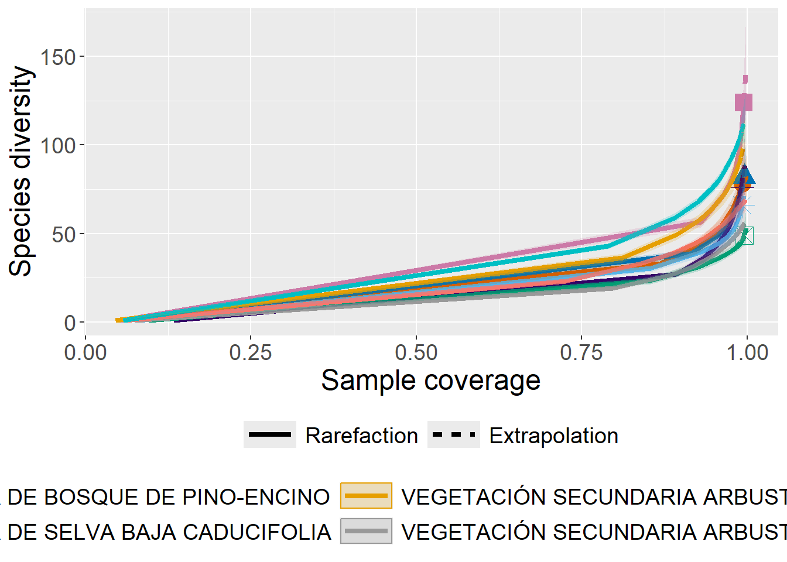

6.Diversidad
Medidas de diversidad
Conceptos básicos
- Especie. Grupo de organismos que se pueden reproducir entre sí y generar descendencia fértil.
- Comunidad. Conjunto de diferentes especies que interactúan entre sí.
- Muestreo. Método por el cual inferimos propiedades de una población objetivo (no confundir con población en el sentido ecológico).
- Esfuerzo de muestreo. Número de individuos muestreados o el tiempo invertido en obtener datos.
- Interpolación. Modelar datos dentro del intervalo observado.
- Extrapolación. Modelar datos fuera del intervalo observado.
- Abundancia. Qué tan común o raro es encontrar una especie en una comunidad.
- Diversidad. Propiedad emergente de las comunidades que incorpora el grado de heterogeneidad de algún estado o propiedad (este estado puede ser diversidad de especies, gremios, grupos funcionales, familias, genética, etc).
- Remuestreo. Técnica estadística que permite obtener estimaciones simulando submuestras de una muestra.
No existe una única forma de medir biodiversidad. Por lo tanto, hay diversas medidas que describen de manera distinta la diversidad. ¿Cómo responder a la pregunta qué tan diversa es una comunidad?
Diversidad
Diversidad \(\alpha\), \(\beta\) y \(\gamma\).
Los índices que vamos a ver permiten obtener mediciones \(\alpha\) y \(\gamma\). \(\beta\) normalmente se mide con índice de similitud o disimilitud.
Relevancia
El poder medir la diversidad permite entender patrones de distribución de especies (p.ej., zonas tropicales vs polares), poner a prueba hipótesis ecológicas (p.ej., sobre el estado de conservación / perturbación), crear líneas base (p.ej., conocer el número de especies presentes en una región), proveer información de prioridades de conservación (p.ej., proteger zonas más biodiversas), entre otras.
Índices tradicionales
Índices sobre qué tan heterogénea es una comunidad. Normalmente tratan de resumir dos componentes:
- Número de especies.
- Abundancia de éstas.
Medidas sobre diversidad incluyen el cálculo de índices “clásicos”:
- Riqueza. Número de especies en una muestra.
- Índice de Shannon. Incertidumbre en la identidad de una especie en una muestra. Índice que considera riqueza de especies y dominancia.
\[ D = -\sum_{i=1}^S p_i ln p_i \]
- Índice de Simpson. Probabilidad de que dos individuos, de una muestra, elegidos al azar sean de especies distintas. Índice que considera riqueza de especies y dominancia, pero está más influenciado por la dominancia.
Está el índice de Simpson (o Gini-Simpson).
\[ D = 1 - \sum_{i=1}^S p_i^2 \]
y el inverso de Simpson.
\[ D = \frac{1}{\sum_{i=1}^S p_i^2} \]
- Curvas de rango abundancia. Abundancia de cada especie encontrada en el muestreo.

Figuras tomadas de: https://www.davidzeleny.net/anadat-r/doku.php/en:div-ind
Sin embargo, el principal problema con estos índices es que los índices dependen del esfuerzo de muestreo, cuántas especies hay y su abundancia relativa. Entonces qué puede pasar:
- Una comunidad puede ser igual de diversa que otra, pero si se muestreó con un menor esfuerzo de muestreo, el índice saldrá menor.
- Dos comunidades con el mismo valor del índice de Shannon, pero una puede tener el doble número de especies con diferente abundancia.
Otras métricas que se han plantado como alternativas, basadas en técnicas de remuestreo:
- Curvas de acumulación de especies.
- Rarefacción.
Las curvas de acumulación de especies permiten simular la diversidad encontrada en función del esfuerzo de muestreo. Tratan de describir la dependencia de los índices de diversidad de acuerdo con el esfuerzo de muestreo.
Los índices rarificados se basan en las curvas de acumulación de especies para intrapolar el valor de diversidad (modelado) de una comunidad con un esfuerzo de muestreo reducido.
Números de Hill
Los números de Hill corresponden a medidas de diversidad que tratan de estandarizar estas medidas en función del número de especies y su abundancia.
Trata de abordar el problema de la medir la diversidad en comunidades, como un valor que depende del: 1) esfuerzo de muestreo y 2) cuántas especies hay y su abundancia relativa.

Figuras tomadas de: https://nsojournals.onlinelibrary.wiley.com/doi/full/10.1111/oik.07202
Su ventaja respecto a los índices de diversidad “tradicionales”:
- Interpretables en términos de número de especies.
- Cuentan con un exponente que controla la sensibilidad de la diversidad a la abundancia de las especies (q = c(0,1,2)). Más importancia a especies abundantes conforme incrementa el número q.
- q0: Riqueza de especies. Más sensible a especies raras.
- q1: Similar al índice de Shannon, pero expresado en número de especies (comunes). Punto intermedio.
- q2: Similar al índice de Simpson, pero expresado en número de especies (comunes). Más sensible a especies comunes.
Figuras tomadas de: https://www.davidzeleny.net/anadat-r/doku.php/en:div-ind
Ventajas:
- Si dos comunidades tienen una proporción similar de especies dominantes, pero distinto número de especies totales, su índice de Shannon o Simpson serán muy similares; pero q1 y q2 no (reflejará la diferencia en número de especies).
- Los valores se expresan en número de especies. Modelan una comunidad con determinada diversidad donde todas las especies tienen la misma abundancia.
- Permite hacer comparaciones proporcionales en términos de diversidad entre números de Hill de distintas comunidades.
\[ D = (\sum_{i=1}^S p_i^q)^{1/1-q} \]
\(S\): número de especies en la muestra. \(p_i\): número de individuos de la especie \(i\) entre total de individuos. \(q\): exponente del número de Hill.
Otro concepto importante: Coverage.
Es una medida de qué tanto se ha muestrado una comunidad. Coverage crece más lento conforme crece el tamaño de la muestra. Se calcula a partir del número de singletons, doubletons y número total de individuos.
Datos INFyS
Veremos tres paquetes hoy: vegan, BiodiversityR y iNEXT.
- vegan: Clásico paquete para calcular índices de diversidad, curvas de acumulación de especies, rarificación, extrapolación de número de especies.
- BiodiversityR: funciones basadas en vegan más amigable con el tidyverse.
- iNEXT: Cálculo de números de Hill y curva de acumulación de especies.
Empecemos cargando los paquetes que vamos a usar.
library(BiodiversityR)Cargando paquete requerido: tcltkCargando paquete requerido: veganCargando paquete requerido: permuteCargando paquete requerido: latticeThis is vegan 2.6-8BiodiversityR 2.16-1: Use command BiodiversityRGUI() to launch the Graphical User Interface;
to see changes use BiodiversityRGUI(changeLog=TRUE, backward.compatibility.messages=TRUE)library(readxl)
library(tidyverse)── Attaching core tidyverse packages ──────────────────────── tidyverse 2.0.0 ──
✔ dplyr 1.1.4 ✔ readr 2.1.5
✔ forcats 1.0.0 ✔ stringr 1.5.1
✔ ggplot2 3.5.1 ✔ tibble 3.2.1
✔ lubridate 1.9.3 ✔ tidyr 1.3.1
✔ purrr 1.0.2 ── Conflicts ────────────────────────────────────────── tidyverse_conflicts() ──
✖ dplyr::filter() masks stats::filter()
✖ dplyr::lag() masks stats::lag()
ℹ Use the conflicted package (<http://conflicted.r-lib.org/>) to force all conflicts to become errorslibrary(readr)
library(skimr)
library(iNEXT)
library(dplyr)
knitr::opts_chunk$set(echo = TRUE)Cargar los datos del INFyS, pero ahora usaremos las columnas de especies.
df <- read_excel("INFyS_2015_2020_Michoacan_de_Ocampo_lHwLKIM.xlsx",
sheet = "Arbolado")Warning: Expecting numeric in BW19313 / R19313C75: got 'NULL'Warning: Expecting numeric in BX19313 / R19313C76: got 'NULL'# Preprocesamiento limpieza de datos
df <- df |>
mutate(across(c(AlturaTotal_C3, DiametroNormal_C3), ~ifelse(.x >= 99999, NA, .x))) |>
# Eliminar NA
drop_na(AlturaTotal_C3, DiametroNormal_C3) |>
# Seleccionar columnas de interés
select(IdConglomerado, DESCRIP_S7_C3, Genero_APG_C3, Especie_APG_C3) |>
# Renombrar columnas
rename("ParcelaId" = "IdConglomerado",
"TipoVeg" = "DESCRIP_S7_C3",
"Genero" = "Genero_APG_C3",
"Especie" = "Especie_APG_C3")
skim(df)| Name | df |
| Number of rows | 25258 |
| Number of columns | 4 |
| _______________________ | |
| Column type frequency: | |
| character | 3 |
| numeric | 1 |
| ________________________ | |
| Group variables | None |
Variable type: character
| skim_variable | n_missing | complete_rate | min | max | empty | n_unique | whitespace |
|---|---|---|---|---|---|---|---|
| TipoVeg | 0 | 1 | 7 | 61 | 0 | 32 | 0 |
| Genero | 0 | 1 | 2 | 21 | 0 | 173 | 0 |
| Especie | 0 | 1 | 4 | 17 | 0 | 292 | 0 |
Variable type: numeric
| skim_variable | n_missing | complete_rate | mean | sd | p0 | p25 | p50 | p75 | p100 | hist |
|---|---|---|---|---|---|---|---|---|---|---|
| ParcelaId | 0 | 1 | 61220.67 | 2777.27 | 56011 | 59280 | 60559 | 62584 | 69266 | ▃▇▃▂▁ |
Crear columna de especies
df <- df |>
mutate(nom_cien = paste(Genero, Especie, sep = " "))
df |>
select(nom_cien) |>
distinct() |>
arrange(nom_cien)# A tibble: 392 × 1
nom_cien
<chr>
1 Aa NULL
2 Abies NULL
3 Abies durangensis
4 Abies religiosa
5 Acacia NULL
6 Acacia acatlensis
7 Acacia angustissima
8 Acacia cochliacantha
9 Acacia cornigera
10 Acacia farnesiana
# ℹ 382 more rowsHay algunos géneros sin especies (NULL)
df <- df |>
mutate(across(nom_cien, ~str_replace_all(.x, "NULL", "sp.")))
df |>
select(nom_cien) |>
distinct() |>
arrange(nom_cien)# A tibble: 392 × 1
nom_cien
<chr>
1 Aa sp.
2 Abies durangensis
3 Abies religiosa
4 Abies sp.
5 Acacia acatlensis
6 Acacia angustissima
7 Acacia cochliacantha
8 Acacia cornigera
9 Acacia farnesiana
10 Acacia greggii
# ℹ 382 more rowsvegan
Sacar datos de los sitios
Queremos usar las siguientes funciones, ver ayuda
help(diversity)Para saber cómo meter los dato conviene revisar los datos que vienen en los ejemplos. Datos de la isla de Barro Colorado.
Vemos que en BCI vienen las especies en columnas, las abundancias correpsonden a cada entrada y las filas representan los sitios de muestreo. Trataremos de poner los datos en ese formato.
data(BCI)
data(BCI.env)
as_tibble(BCI)# A tibble: 50 × 225
Abarema.macradenia Vachellia.melanoceras Acalypha.diversifolia
<int> <int> <int>
1 0 0 0
2 0 0 0
3 0 0 0
4 0 0 0
5 0 0 0
6 0 0 0
7 0 0 0
8 0 0 0
9 0 0 0
10 1 0 0
# ℹ 40 more rows
# ℹ 222 more variables: Acalypha.macrostachya <int>, Adelia.triloba <int>,
# Aegiphila.panamensis <int>, Alchornea.costaricensis <int>,
# Alchornea.latifolia <int>, Alibertia.edulis <int>,
# Allophylus.psilospermus <int>, Alseis.blackiana <int>,
# Amaioua.corymbosa <int>, Anacardium.excelsum <int>, Andira.inermis <int>,
# Annona.spraguei <int>, Apeiba.glabra <int>, Apeiba.tibourbou <int>, …as_tibble(BCI.env)# A tibble: 50 × 7
UTM.EW UTM.NS elevation convex slope aspectEW aspectNS
<dbl> <dbl> <dbl> <dbl> <dbl> <dbl> <dbl>
1 625754. 1011569. 130. -7.87 6.69 -0.891 -0.454
2 625754. 1011669. 137. -10.7 5.09 -0.219 -0.976
3 625754. 1011769. 144. -14.7 3.10 0.0305 -1.00
4 625754. 1011869. 147. -16.8 1.87 -0.864 -0.503
5 625754. 1011969. 144. -12.5 5.12 -0.671 0.741
6 625854. 1011569. 137. -9.68 2.95 -0.865 -0.501
7 625854. 1011669. 139. 0.25 3.13 -0.767 -0.642
8 625854. 1011769. 143. 0.188 2.83 0.406 -0.914
9 625854. 1011869. 146. 1.13 2.88 0.897 -0.442
10 625854. 1011969. 147. -11.9 3.61 0.972 0.233
# ℹ 40 more rowsPreprocesamiento
df_sites2: Abundancia por sitio de muestreo. Este lo vamos a usar después, pero para dejarlo en el ambiente de trabajo. df2: Abundancia por tipo de vegetación.
Convertirlo a datos en formato ancho y convertirlo a matriz para poder usar las funciones de vegan.
library(vegan)
# Crear matriz de sitios y abundancia por especies
df_sites2 <- df |>
select(TipoVeg, ParcelaId, nom_cien) |>
group_by(TipoVeg, ParcelaId, nom_cien) |>
count() |>
pivot_wider(id_cols = c(TipoVeg, ParcelaId),
names_from = nom_cien,
values_from = n,
values_fill = 0) |>
ungroup()
# Grupos de tipos de vegetación
veggroups <- df_sites2 |>
pull(TipoVeg)
# Datos de los sitios, quitar tipoVeg y ParcelaID para solo dejar datos de abundancias
df_sites2 <- df_sites2 |>
select(-c(TipoVeg, ParcelaId)) |>
as.matrix()Crear tablas de abundancias a partir de observaciones individuales
# Acomodar datos y ponerlos en formato para usarlo por funciones de vegan
# Por tipo de vegetación
df2 <- df |>
select(TipoVeg, nom_cien) |>
group_by(TipoVeg, nom_cien) |>
count() |>
ungroup() |>
select(TipoVeg, nom_cien, n)
tv <- df2 |>
pull(TipoVeg)
df2mat <- df2 |>
pivot_wider(id_cols = TipoVeg,
names_from = nom_cien,
values_from = n,
values_fill =0) |>
select(-TipoVeg) |>
as.matrix()Índices de diversidad
Calcular índices de diversidad de dos formas, una más “tidyverse” y otra menos.
# Por tipo de vegetación: Tidyverse. Más organizado
res_vegan <- df2 |>
group_by(TipoVeg) |>
summarise(rich = specnumber(n),
shan = diversity(n,
index = "shannon"),
simp = diversity(n,
index = "simpson"),
invsimp = diversity(n,
index = "invsimpson"))
res_vegan# A tibble: 32 × 5
TipoVeg rich shan simp invsimp
<chr> <int> <dbl> <dbl> <dbl>
1 AGRICULTURA DE RIEGO ANUAL 4 1.24 0.667 3
2 AGRICULTURA DE RIEGO ANUAL Y PERMANENTE 3 0.937 0.568 2.31
3 AGRICULTURA DE RIEGO PERMANENTE 11 1.86 0.789 4.75
4 AGRICULTURA DE TEMPORAL ANUAL 11 1.90 0.806 5.16
5 AGRICULTURA DE TEMPORAL ANUAL Y PERMANENTE 7 1.26 0.634 2.73
6 AGRICULTURA DE TEMPORAL PERMANENTE 1 0 0 1
7 ASENTAMIENTOS HUMANOS 2 0.451 0.278 1.38
8 BOSQUE CULTIVADO 10 1.90 0.798 4.94
9 BOSQUE DE ENCINO 78 3.46 0.953 21.3
10 BOSQUE DE ENCINO-PINO 36 2.92 0.915 11.8
# ℹ 22 more rowsMás con sintáxis R base
# Por tipo de vegetación: más R base. Menos organizados (luego hay que hacer un data.frame).
specnumber(df2mat) [1] 4 3 11 11 7 1 2 10 78 36 12 82 124 9 4 26 24 76 8
[20] 93 52 47 65 107 37 6 6 16 49 18 66 11diversity(df_sites2,
index = "shannon",
groups = veggroups) AGRICULTURA DE RIEGO ANUAL
1.2424533
AGRICULTURA DE RIEGO ANUAL Y PERMANENTE
0.9368883
AGRICULTURA DE RIEGO PERMANENTE
1.8613602
AGRICULTURA DE TEMPORAL ANUAL
1.8997754
AGRICULTURA DE TEMPORAL ANUAL Y PERMANENTE
1.2560497
AGRICULTURA DE TEMPORAL PERMANENTE
0.0000000
ASENTAMIENTOS HUMANOS
0.4505612
BOSQUE CULTIVADO
1.8956203
BOSQUE DE ENCINO
3.4613067
BOSQUE DE ENCINO-PINO
2.9199529
BOSQUE DE OYAMEL
1.5242200
BOSQUE DE PINO
3.3385756
BOSQUE DE PINO-ENCINO
3.5455536
Bosque mesófilo DE MONTAÑA
1.5888496
MANGLAR
1.1231308
PASTIZAL CULTIVADO
2.5538907
PASTIZAL INDUCIDO
2.3804905
SELVA BAJA CADUCIFOLIA
2.7304372
VEGETACIÓN SECUNDARIA ARBÓREA DE BOSQUE DE ENCINO
2.9944029
VEGETACIÓN SECUNDARIA ARBÓREA DE BOSQUE DE ENCINO-PINO
1.5989074
VEGETACIÓN SECUNDARIA ARBÓREA DE BOSQUE DE OYAMEL
1.6269161
VEGETACIÓN SECUNDARIA ARBÓREA DE BOSQUE DE PINO
1.9417785
VEGETACIÓN SECUNDARIA ARBÓREA DE BOSQUE DE PINO-ENCINO
2.9262089
VEGETACIÓN SECUNDARIA ARBÓREA DE Bosque mesófilo DE MONTAÑA
1.5532701
VEGETACIÓN SECUNDARIA ARBÓREA DE SELVA BAJA CADUCIFOLIA
3.1759746
VEGETACIÓN SECUNDARIA ARBÓREA DE SELVA MEDIANA SUBCADUCIFOLIA
0.5655066
VEGETACIÓN SECUNDARIA ARBUSTIVA DE BOSQUE DE ENCINO
3.5890436
VEGETACIÓN SECUNDARIA ARBUSTIVA DE BOSQUE DE ENCINO-PINO
3.0563670
VEGETACION SECUNDARIA ARBUSTIVA DE BOSQUE DE OYAMEL
1.4364904
VEGETACIÓN SECUNDARIA ARBUSTIVA DE BOSQUE DE PINO
3.1257529
VEGETACIÓN SECUNDARIA ARBUSTIVA DE BOSQUE DE PINO-ENCINO
3.3643147
VEGETACIÓN SECUNDARIA ARBUSTIVA DE SELVA BAJA CADUCIFOLIA
3.6876133 Aquí vamos a ver que la desventaja es que vegan no se cruza tan bien con el tidyverse (sobre todo porque las funciones deben leer matrices). Sin embargo, vamos a ver rápido algunas funciones básicas.
Crear matriz de abundancias por sitios, en lugar de tipos de vegetación. Lo vamos a usar más adelante.
# Por sitio
df3 <- df |>
select(ParcelaId, nom_cien) |>
group_by(ParcelaId, nom_cien) |>
count() |>
ungroup() |>
select(ParcelaId, nom_cien, n) Curva de acumulación de especies
Esto hay que hacerlo por comunidad. Ahorita tomaremos datos de Bosque de Pino-Encino.
# Por un tipo de vegetación
dfbpq <- df |>
filter(TipoVeg == "BOSQUE DE PINO-ENCINO") |>
select(ParcelaId, nom_cien) |>
group_by(ParcelaId, nom_cien) |>
count() |>
ungroup() |>
select(ParcelaId, nom_cien, n) |>
pivot_wider(id_cols = ParcelaId,
names_from = nom_cien,
values_from = n,
values_fill =0) |>
select(-ParcelaId) |>
as.matrix()comm : datos de comunidad method: “collector”, orden de los datos como viene “random”, orden aleatorio “exact”, promedio esperado de especies, “coleman”, de acuerdo con Coleman et al 1982 “rarefaction”, promedio acumulando individuos en lugar de sitios. gamma: método para obtener el número de especies extrapolado, jack1, jack2, chao, boot, species
spacum <- specaccum(comm = dfbpq,
method="random",
permutations=100,
gamma="chao.1")
spacumSpecies Accumulation Curve
Accumulation method: random, with 100 permutations
Call: specaccum(comm = dfbpq, method = "random", permutations = 100, gamma = "chao.1")
Sites 1.00000 2.00000 3.0000 4.00000 5.00000 6.0000 7.00000 8.00000
Richness 6.05000 11.43000 16.0400 19.93000 23.62000 27.2300 30.82000 33.96000
sd 2.38419 3.87756 4.7629 5.31675 6.17224 6.6997 7.38601 7.65139
Sites 9.00000 10.00000 11.00000 12.0000 13.00000 14.00000 15.00000 16.00000
Richness 36.68000 39.54000 42.32000 45.0200 47.41000 49.56000 51.96000 54.71000
sd 7.62224 8.09217 8.51247 8.8008 8.89341 8.74593 9.38182 9.89673
Sites 17.00000 18.00000 19.00000 20.00000 21.00000 22.00000 23.00000
Richness 57.54000 59.54000 61.12000 63.14000 64.79000 66.56000 68.19000
sd 9.93557 9.81487 10.20228 10.58398 10.72267 10.69156 10.79908
Sites 24.00000 25.0000 26.00000 27.00000 28.00000 29.000 30.00000 31.00000
Richness 69.89000 71.6600 73.60000 76.01000 77.62000 78.760 80.30000 81.53000
sd 10.95804 11.1003 10.94061 10.55863 10.61805 10.606 10.53949 10.71905
Sites 32.0000 33.00000 34.00000 35.00000 36.00000 37.00000 38.00000 39.00000
Richness 82.9600 84.11000 85.38000 86.73000 87.81000 89.64000 91.56000 92.78000
sd 10.9313 10.82449 10.93117 10.51296 10.39201 10.20944 10.17754 10.27754
Sites 40.00000 41.00000 42.00000 43.00000 44.00000 45.00000 46.00000
Richness 94.33000 96.00000 97.42000 98.52000 99.72000 101.11000 102.45000
sd 9.99804 9.88622 9.76407 9.47456 9.45706 9.23093 8.95485
Sites 47.00000 48.00000 49.00000 50.00000 51.00000 52.00000 53.00000
Richness 103.99000 105.00000 106.18000 107.61000 108.29000 109.62000 111.17000
sd 8.93692 9.04311 8.85504 8.28641 8.28933 7.68809 7.08257
Sites 54.00000 55.00000 56.00000 57.00000 58.00000 59.00000 60.00000
Richness 112.26000 114.12000 114.92000 116.05000 116.90000 118.29000 119.60000
sd 6.97125 6.25434 6.17862 5.97533 5.46153 4.75521 3.86907
Sites 61.00000 62.00000 63.0000 64.00000 65
Richness 120.19000 121.04000 122.0200 122.68000 124
sd 3.88651 3.45511 2.9915 2.89855 0plot(spacum)Rarificación
Rarificar número de especies.
Para cada sitio le calcula el número esperado de especies si se hubieran muestreado en todas 20 individuos. Además se muestra el error estándar.
# Rarificar número de especies
temp <- rarefy(dfbpq,
sample = 20,
se = TRUE)Warning in rarefy(dfbpq, sample = 20, se = TRUE): requested 'sample' was larger
than smallest site maximum (1)temp [,1] [,2] [,3] [,4] [,5] [,6] [,7]
S 4.7353630 5.662614 4.6328265 2.7393411 3.6466210 4.312330 2.4919355
se 0.8069547 0.990053 0.9163352 0.8197459 0.5120074 1.010441 0.5819318
[,8] [,9] [,10] [,11] [,12] [,13] [,14] [,15]
S 4.7121916 3.8408408 4.8128392 6.0676206 1 4.9913802 6.7390781 3.3728263
se 0.7417946 0.8008827 0.4061646 0.9604662 0 0.7017689 0.9477569 0.6265777
[,16] [,17] [,18] [,19] [,20] [,21] [,22]
S 2.5126752 3.6503590 4.4123082 5.7219339 3.5386514 4.476083 3.0111766
se 0.4999295 0.6235621 0.8715933 0.7823664 0.4997654 0.888893 0.7173617
[,23] [,24] [,25] [,26] [,27] [,28] [,29]
S 3.0101738 5.6537947 5.1616800 6.7632516 5.3634085 4.239443 6.2493835
se 0.9086285 0.9105218 0.8125108 0.8764778 0.9496699 0.710029 0.7084459
[,30] [,31] [,32] [,33] [,34] [,35] [,36] [,37]
S 5.5709712 4 3.5842893 5.9629255 4.091208 4.8450494 6.709836 3.8376166
se 0.8669328 0 0.6317954 0.8315371 1.025309 0.6666457 1.039531 0.3688233
[,38] [,39] [,40] [,41] [,42] [,43] [,44]
S 4.7218560 3.3825208 3.9881423 4.6280826 4.1560776 5.671827 2.4616800
se 0.6968103 0.9514644 0.1082456 0.5433478 0.5020651 0.877552 0.7562642
[,45] [,46] [,47] [,48] [,49] [,50] [,51] [,52]
S 5.579984 3.7130348 4.9815477 4.3582855 4.563074 7.059179 3 4.7952942
se 1.118280 0.7375148 0.8455379 0.6632085 1.071086 1.188708 0 0.8018448
[,53] [,54] [,55] [,56] [,57] [,58] [,59] [,60] [,61]
S 5.4395289 4 4.9805559 4 5.3416236 2 4.372792 5.276075 6
se 0.5472207 0 0.8748795 0 0.9692255 0 1.146961 1.020268 0
[,62] [,63] [,64] [,65]
S 9.701435 1 10.686741 2.9204440
se 1.257140 0 1.465539 0.7595642
attr(,"Subsample")
[1] 20Algunas parcelas tienen SE = 0 porque tienen menos individuos que los que le pusimos en sample.
Extrapolar número total de especies
Modelos: “arrhenius” (SSarrhenius), “gleason” (SSgleason), “gitay” (SSgitay), “lomolino” (SSlomolino) of vegan package. “asymp” (SSasymp). “gompertz” (SSgompertz). “michaelis-menten” (SSmicmen). “logis” (SSlogis). “weibull” (SSweibull).
Usar modelo de michaelis menten para calcular la curva de acumulación
# Calcular número de especies total
extrspp <- predict(fitspecaccum(dfbpq,
model = "michaelis-menten",
method = "exact"),
# Datos sobre los cuales se hace la predicción
newdata=seq(1,500,50))
plot(x = seq(1,500,50),
y = extrspp)
De acuerdo con el modelo de Michaelis-Menten, calcula cuál podría ser el número de especies esperado si se aumentara el esfuerzo de muestreo. La idea principal es que si hay mucha diversidad en el muestreo, al extrapolar va a calcular que hay más especies sin registrar y por lo tanto su diversidad extrapolada va a ser mayor.
BiodiversityR
Ver primero ejemplos de la función
help(diversityresult)data(dune.env)
data(dune)
as_tibble(dune)# A tibble: 20 × 30
Achimill Agrostol Airaprae Alopgeni Anthodor Bellpere Bromhord Chenalbu
<dbl> <dbl> <dbl> <dbl> <dbl> <dbl> <dbl> <dbl>
1 1 0 0 0 0 0 0 0
2 3 0 0 2 0 3 4 0
3 0 4 0 7 0 2 0 0
4 0 8 0 2 0 2 3 0
5 2 0 0 0 4 2 2 0
6 2 0 0 0 3 0 0 0
7 2 0 0 0 2 0 2 0
8 0 4 0 5 0 0 0 0
9 0 3 0 3 0 0 0 0
10 4 0 0 0 4 2 4 0
11 0 0 0 0 0 0 0 0
12 0 4 0 8 0 0 0 0
13 0 5 0 5 0 0 0 1
14 0 4 0 0 0 0 0 0
15 0 4 0 0 0 0 0 0
16 0 7 0 4 0 0 0 0
17 2 0 2 0 4 0 0 0
18 0 0 0 0 0 2 0 0
19 0 0 3 0 4 0 0 0
20 0 5 0 0 0 0 0 0
# ℹ 22 more variables: Cirsarve <dbl>, Comapalu <dbl>, Eleopalu <dbl>,
# Elymrepe <dbl>, Empenigr <dbl>, Hyporadi <dbl>, Juncarti <dbl>,
# Juncbufo <dbl>, Lolipere <dbl>, Planlanc <dbl>, Poaprat <dbl>,
# Poatriv <dbl>, Ranuflam <dbl>, Rumeacet <dbl>, Sagiproc <dbl>,
# Salirepe <dbl>, Scorautu <dbl>, Trifprat <dbl>, Trifrepe <dbl>,
# Vicilath <dbl>, Bracruta <dbl>, Callcusp <dbl>as_tibble(dune.env)# A tibble: 20 × 5
A1 Moisture Management Use Manure
<dbl> <ord> <fct> <ord> <ord>
1 2.8 1 SF Haypastu 4
2 3.5 1 BF Haypastu 2
3 4.3 2 SF Haypastu 4
4 4.2 2 SF Haypastu 4
5 6.3 1 HF Hayfield 2
6 4.3 1 HF Haypastu 2
7 2.8 1 HF Pasture 3
8 4.2 5 HF Pasture 3
9 3.7 4 HF Hayfield 1
10 3.3 2 BF Hayfield 1
11 3.5 1 BF Pasture 1
12 5.8 4 SF Haypastu 2
13 6 5 SF Haypastu 3
14 9.3 5 NM Pasture 0
15 11.5 5 NM Haypastu 0
16 5.7 5 SF Pasture 3
17 4 2 NM Hayfield 0
18 4.6 1 NM Hayfield 0
19 3.7 5 NM Hayfield 0
20 3.5 5 NM Hayfield 0 Pre procesamiento
Igual formato que vegan
Primero sacar los 10 tipos de vegetación con más especies. Luego usar esto para filtrar datos. Luego generar datos de abundancia.
- df3: Datos por sitio.
- df4: Datos por tipo de vegetación.
tiposveg <- df2 |>
group_by(TipoVeg) |>
count()|>
arrange(desc(n)) |>
ungroup() |>
slice_head(n = 10) |>
pull(TipoVeg)
df3 <- df |>
filter(TipoVeg %in% tiposveg) |>
select(TipoVeg, ParcelaId, nom_cien) |>
group_by(TipoVeg, ParcelaId, nom_cien) |>
count() |>
ungroup() |>
select(TipoVeg, ParcelaId,nom_cien, n) |>
pivot_wider(id_cols = c(TipoVeg, ParcelaId),
names_from = nom_cien,
values_from = n,
values_fill = 0)
df4 <- df |>
filter(TipoVeg %in% tiposveg) |>
select(TipoVeg, nom_cien) |>
group_by(TipoVeg, nom_cien) |>
count() |>
ungroup() |>
select(TipoVeg, nom_cien, n) |>
pivot_wider(id_cols = c(TipoVeg),
names_from = nom_cien,
values_from = n,
values_fill = 0) Métricas de diversidad
Por tipo vegetación
Riqueza se puede calcular por:
- pooled: todo junto.
- each site: cada sitio o cada nivel de los datos (fila).
- mean: promedio.
Todos los tipos de vegetación juntos
respool <- diversityresult(x = df4 |>
select(-c(TipoVeg)) |>
as.matrix(),
index = "richness",
method = "pooled",
sortit = FALSE,
digits = 5)
respool richness
pooled 358Por tipo de vegetación
resit <- diversityresult(x = df4 |>
select(-c(TipoVeg)) |>
as.matrix(),
index = "richness",
method = "each site",
sortit = FALSE,
digits = 5)
resit richness
1 78
2 82
3 124
4 76
5 93
6 52
7 65
8 107
9 49
10 66Promedio por tipo de vegetación
resmean <- diversityresult(x = df4 |>
select(-c(TipoVeg)) |>
as.matrix(),
index = "richness",
method = "mean",
sortit = FALSE,
digits = 5)
resmean richness
mean 79.2Por sitio
Riqueza de todo el muestreo
respool <- diversityresult(x = df3 |>
select(-c(TipoVeg, ParcelaId)) |>
as.matrix(),
index = "richness",
method = "pooled",
sortit = FALSE,
digits = 5)
respool richness
pooled 358Riqueza por sitio
resit <- diversityresult(x = df3 |>
select(-c(TipoVeg, ParcelaId)) |>
as.matrix(),
index = "richness",
method ="each site",
sortit = FALSE,
digits = 5)
resit richness
1 7
2 6
3 5
4 9
5 11
6 3
7 3
8 4
9 11
10 9
11 5
12 7
13 4
14 5
15 2
16 8
17 5
18 6
19 4
20 9
21 6
22 6
23 12
24 5
25 9
26 8
27 7
28 6
29 4
30 8
31 5
32 7
33 9
34 7
35 5
36 9
37 4
38 9
39 6
40 10
41 8
42 4
43 8
44 6
45 5
46 4
47 4
48 8
49 9
50 5
51 6
52 5
53 3
54 4
55 6
56 7
57 5
58 14
59 6
60 8
61 7
62 7
63 4
64 8
65 3
66 6
67 5
68 5
69 8
70 1
71 6
72 10
73 4
74 3
75 5
76 6
77 7
78 4
79 6
80 4
81 5
82 7
83 8
84 9
85 8
86 5
87 7
88 7
89 4
90 5
91 9
92 7
93 6
94 9
95 4
96 6
97 6
98 4
99 5
100 5
101 9
102 4
103 10
104 5
105 7
106 5
107 7
108 12
109 3
110 6
111 6
112 4
113 7
114 4
115 8
116 2
117 9
118 8
119 6
120 14
121 1
122 20
123 4
124 2
125 9
126 6
127 2
128 14
129 15
130 7
131 11
132 10
133 9
134 7
135 11
136 2
137 5
138 11
139 2
140 3
141 19
142 5
143 6
144 6
145 4
146 4
147 8
148 10
149 5
150 4
151 7
152 5
153 10
154 7
155 10
156 9
157 14
158 3
159 6
160 2
161 2
162 6
163 1
164 4
165 18
166 12
167 7
168 12
169 2
170 7
171 2
172 6
173 10
174 8
175 1
176 2
177 9
178 6
179 5
180 5
181 5
182 5
183 12
184 14
185 11
186 11
187 2
188 8
189 4
190 4
191 1
192 6
193 4
194 4
195 7
196 11
197 9
198 4
199 9
200 8
201 5
202 6
203 5
204 6
205 9
206 8
207 7
208 8
209 7
210 2
211 10
212 3
213 1
214 8
215 12
216 6
217 5
218 15
219 10
220 9
221 10
222 6
223 5
224 10
225 5
226 15
227 12
228 4
229 10
230 13
231 9
232 1
233 2
234 9
235 6
236 9
237 5
238 8
239 5
240 10
241 6
242 12
243 9
244 5
245 4
246 1
247 7
248 1
249 5
250 6
251 13
252 7
253 9
254 12
255 6
256 4
257 5
258 9
259 9
260 10
261 6
262 6
263 11
264 10
265 8
266 8
267 16Riqueza promedio por sitio
resmean <- diversityresult(x = df3 |>
select(-c(TipoVeg, ParcelaId)) |>
as.matrix(),
index = "richness",
method = "mean",
sortit = FALSE,
digits = 5)
resmean richness
mean 6.8202Shannon de todo el muestreo
respool <- diversityresult(x = df3 |>
select(-c(TipoVeg, ParcelaId)) |>
as.matrix(),
index = "Shannon",
method = "pooled",
sortit = FALSE,
digits = 5)
respool Shannon
pooled 4.2136Shannon por sitio
resit <- diversityresult(x = df3 |>
select(-c(TipoVeg, ParcelaId)) |>
as.matrix(),
index = "Shannon",
method ="each site",
sortit = FALSE,
digits = 5)
resit Shannon
1 1.18321
2 1.32302
3 1.00891
4 1.94935
5 1.46269
6 0.70423
7 0.84157
8 1.18961
9 1.74965
10 1.52913
11 1.26806
12 1.29488
13 0.52867
14 1.43917
15 0.15621
16 1.53715
17 0.75612
18 1.37597
19 0.45821
20 1.75648
21 1.42702
22 1.02655
23 2.05452
24 0.90227
25 1.69614
26 1.67194
27 1.57869
28 1.58076
29 0.59207
30 1.77141
31 0.89292
32 1.38626
33 1.58633
34 1.69430
35 0.71337
36 1.56027
37 1.28645
38 1.84966
39 1.58344
40 1.68548
41 1.24934
42 0.91016
43 1.90473
44 1.50346
45 1.41407
46 1.09255
47 0.21572
48 1.61773
49 1.73781
50 1.33089
51 1.22638
52 0.68036
53 0.69294
54 0.75802
55 1.30826
56 1.49479
57 0.90197
58 2.25477
59 1.25691
60 1.53581
61 1.17270
62 0.61241
63 0.97031
64 1.23109
65 0.37080
66 1.33862
67 0.78435
68 1.47738
69 1.61987
70 0.00000
71 1.38219
72 1.91862
73 0.85339
74 0.68080
75 1.14863
76 1.08920
77 1.53563
78 1.14635
79 1.08608
80 0.57315
81 0.57772
82 1.37538
83 1.50484
84 1.89848
85 1.61012
86 1.08068
87 1.77863
88 1.60400
89 1.26586
90 1.19150
91 1.74389
92 0.94115
93 1.38200
94 1.74270
95 1.23241
96 1.43189
97 0.69383
98 1.14328
99 1.36991
100 1.22626
101 1.65023
102 0.40680
103 1.64396
104 1.03887
105 1.42469
106 1.07460
107 0.99121
108 1.92241
109 1.05492
110 1.20479
111 1.63247
112 1.22061
113 1.34760
114 1.19885
115 1.50879
116 0.45056
117 0.98720
118 1.34107
119 1.53672
120 2.37488
121 0.00000
122 2.58421
123 0.51103
124 0.02690
125 1.62703
126 1.59516
127 0.42932
128 1.87756
129 2.00397
130 1.46507
131 1.21879
132 2.06820
133 1.79596
134 1.42491
135 1.48752
136 0.32508
137 1.30448
138 1.93915
139 0.63651
140 0.13996
141 2.57836
142 1.21463
143 0.72214
144 1.13662
145 1.12095
146 0.57406
147 1.51315
148 1.82658
149 0.85477
150 1.27985
151 1.68484
152 1.07625
153 1.87134
154 1.36835
155 2.08109
156 1.25575
157 2.10908
158 0.72984
159 1.39451
160 0.63651
161 0.19852
162 1.55202
163 0.00000
164 0.92220
165 2.55551
166 2.16587
167 1.50753
168 2.10655
169 0.69315
170 1.46941
171 0.69315
172 1.27180
173 1.95980
174 1.88225
175 0.00000
176 0.61724
177 1.85382
178 1.44397
179 1.26224
180 1.54983
181 1.03494
182 1.28213
183 1.76266
184 1.94303
185 1.83900
186 2.13052
187 0.69315
188 1.44913
189 1.06087
190 1.03356
191 0.00000
192 1.44072
193 0.72012
194 0.51441
195 1.46151
196 2.04478
197 1.53886
198 0.58188
199 1.97995
200 1.64680
201 1.49006
202 0.95251
203 1.01175
204 1.41860
205 1.25020
206 1.56612
207 1.27798
208 1.76043
209 1.50782
210 0.67301
211 2.07030
212 0.67026
213 0.00000
214 1.60403
215 2.15275
216 1.60542
217 1.33166
218 2.44362
219 2.06540
220 1.58785
221 2.01483
222 1.47685
223 1.27500
224 1.81742
225 1.26265
226 2.39629
227 2.17165
228 1.22144
229 1.84018
230 1.53923
231 1.70072
232 0.00000
233 0.56234
234 1.87793
235 1.61968
236 1.77100
237 0.79111
238 1.30136
239 0.48992
240 1.79694
241 1.46858
242 2.09500
243 1.99833
244 1.17959
245 0.30466
246 0.00000
247 1.86605
248 0.00000
249 1.04549
250 1.47981
251 2.05889
252 1.85852
253 1.87812
254 1.58034
255 1.23710
256 0.76409
257 1.54983
258 1.89958
259 1.57896
260 1.87539
261 1.44075
262 1.25395
263 1.97637
264 1.96203
265 1.41262
266 1.73328
267 2.17983Shannon promedio por sitio
resmean <- diversityresult(x = df3 |>
select(-c(TipoVeg, ParcelaId)) |>
as.matrix(),
index = "Shannon",
method = "mean",
sortit = FALSE,
digits = 5)
resmean Shannon
mean 1.3158Simpson de todo el muestreo
respool <- diversityresult(x = df3 |>
select(-c(TipoVeg, ParcelaId)) |>
as.matrix(),
index = "Simpson",
method = "pooled",
sortit = FALSE,
digits = 5)
respool Simpson
pooled 0.95829Simpson para cada sitio
resit <- diversityresult(x = df3 |>
select(-c(TipoVeg, ParcelaId)) |>
as.matrix(),
index = "Simpson",
method ="each site",
sortit = FALSE,
digits = 5)
resit Simpson
1 0.62711
2 0.67139
3 0.58360
4 0.84019
5 0.62663
6 0.41837
7 0.50643
8 0.66270
9 0.74312
10 0.73493
11 0.69563
12 0.60156
13 0.25307
14 0.73684
15 0.07008
16 0.70892
17 0.35900
18 0.70107
19 0.19898
20 0.76053
21 0.71928
22 0.50470
23 0.80988
24 0.45911
25 0.77798
26 0.77269
27 0.77176
28 0.76049
29 0.29516
30 0.79838
31 0.51658
32 0.64014
33 0.69959
34 0.79206
35 0.33365
36 0.71438
37 0.70487
38 0.81666
39 0.76190
40 0.73804
41 0.57141
42 0.51756
43 0.82689
44 0.73457
45 0.73214
46 0.58059
47 0.08032
48 0.76166
49 0.79102
50 0.71597
51 0.61528
52 0.30618
53 0.41617
54 0.38377
55 0.65425
56 0.69224
57 0.49609
58 0.86535
59 0.60327
60 0.69929
61 0.54229
62 0.29349
63 0.52136
64 0.60772
65 0.17383
66 0.66545
67 0.36961
68 0.74406
69 0.73662
70 0.00000
71 0.67658
72 0.83015
73 0.44685
74 0.41815
75 0.63552
76 0.50977
77 0.70891
78 0.65595
79 0.50417
80 0.27839
81 0.25113
82 0.61156
83 0.72085
84 0.82845
85 0.76324
86 0.54254
87 0.80980
88 0.75595
89 0.69822
90 0.66704
91 0.79223
92 0.43047
93 0.67925
94 0.76718
95 0.68512
96 0.72028
97 0.30972
98 0.61248
99 0.69572
100 0.63492
101 0.75956
102 0.18221
103 0.75924
104 0.54875
105 0.69377
106 0.52996
107 0.42545
108 0.81188
109 0.64000
110 0.57840
111 0.78875
112 0.66000
113 0.64453
114 0.65278
115 0.72000
116 0.27778
117 0.41736
118 0.61045
119 0.73469
120 0.88792
121 0.00000
122 0.90434
123 0.23268
124 0.00826
125 0.76194
126 0.78005
127 0.26036
128 0.74717
129 0.80311
130 0.74133
131 0.50589
132 0.84217
133 0.78440
134 0.63699
135 0.64511
136 0.18000
137 0.68560
138 0.82307
139 0.44444
140 0.05447
141 0.90703
142 0.64485
143 0.31354
144 0.60560
145 0.61157
146 0.27466
147 0.70520
148 0.79359
149 0.42604
150 0.70000
151 0.78125
152 0.56238
153 0.80085
154 0.64099
155 0.85602
156 0.54668
157 0.84348
158 0.42593
159 0.69601
160 0.44444
161 0.09500
162 0.73457
163 0.00000
164 0.49905
165 0.90533
166 0.85776
167 0.73155
168 0.85600
169 0.50000
170 0.66618
171 0.50000
172 0.66153
173 0.81579
174 0.82918
175 0.00000
176 0.42604
177 0.82237
178 0.73320
179 0.64360
180 0.77551
181 0.51701
182 0.65256
183 0.77121
184 0.81618
185 0.76524
186 0.85539
187 0.50000
188 0.67382
189 0.56888
190 0.54545
191 0.00000
192 0.71802
193 0.34667
194 0.23823
195 0.68367
196 0.83317
197 0.70032
198 0.27734
199 0.84082
200 0.77180
201 0.76370
202 0.42361
203 0.52002
204 0.67982
205 0.51974
206 0.73201
207 0.65170
208 0.78559
209 0.74065
210 0.48000
211 0.85760
212 0.40311
213 0.00000
214 0.74376
215 0.84737
216 0.77505
217 0.68750
218 0.90019
219 0.85560
220 0.71910
221 0.84072
222 0.74024
223 0.68637
224 0.80465
225 0.62591
226 0.89120
227 0.86202
228 0.65928
229 0.76531
230 0.70903
231 0.76317
232 0.00000
233 0.37500
234 0.81836
235 0.78301
236 0.78068
237 0.37018
238 0.62790
239 0.25016
240 0.75193
241 0.73923
242 0.85151
243 0.84505
244 0.62193
245 0.13675
246 0.00000
247 0.83333
248 0.00000
249 0.51242
250 0.72947
251 0.82577
252 0.83471
253 0.79953
254 0.71351
255 0.65036
256 0.38031
257 0.77551
258 0.82558
259 0.72819
260 0.79801
261 0.71450
262 0.60683
263 0.84189
264 0.81870
265 0.70558
266 0.80181
267 0.84379Simpson promedio por sitio
resmean <- diversityresult(x = df3 |>
select(-c(TipoVeg, ParcelaId)) |>
as.matrix(),
index = "Simpson",
method = "mean",
sortit = FALSE,
digits = 5)
resmean Simpson
mean 0.61508Acumulación de especies
Por tipo de vegetación
resul <- accumcomp(x = df3 |>
filter(TipoVeg %in% tiposveg) |>
select(-c(TipoVeg, ParcelaId)) |>
as.matrix(),
y = df3 |>
filter(TipoVeg %in% tiposveg) |>
select(c(TipoVeg, ParcelaId)),
factor = "TipoVeg",
method = "exact",
plotit = FALSE)
dim(resul)[1] 10 65 3# pa df
resul_list <- map(1:dim(resul)[1], function(i){
as.data.frame(resul[i,,])
}) |>
setNames(dimnames(resul)$TipoVeg) |>
bind_rows(.id = "tipoveg") |>
drop_na(Sites)
resul_list tipoveg Sites
1...1 BOSQUE DE ENCINO 1
2...2 BOSQUE DE ENCINO 2
3...3 BOSQUE DE ENCINO 3
4...4 BOSQUE DE ENCINO 4
5...5 BOSQUE DE ENCINO 5
6...6 BOSQUE DE ENCINO 6
7...7 BOSQUE DE ENCINO 7
8...8 BOSQUE DE ENCINO 8
9...9 BOSQUE DE ENCINO 9
10...10 BOSQUE DE ENCINO 10
11...11 BOSQUE DE ENCINO 11
12...12 BOSQUE DE ENCINO 12
13...13 BOSQUE DE ENCINO 13
14...14 BOSQUE DE ENCINO 14
15...15 BOSQUE DE ENCINO 15
16...16 BOSQUE DE ENCINO 16
17...17 BOSQUE DE ENCINO 17
18...18 BOSQUE DE ENCINO 18
19...19 BOSQUE DE ENCINO 19
20...20 BOSQUE DE ENCINO 20
21...21 BOSQUE DE ENCINO 21
22...22 BOSQUE DE ENCINO 22
23...23 BOSQUE DE ENCINO 23
1...24 BOSQUE DE PINO 1
2...25 BOSQUE DE PINO 2
3...26 BOSQUE DE PINO 3
4...27 BOSQUE DE PINO 4
5...28 BOSQUE DE PINO 5
6...29 BOSQUE DE PINO 6
7...30 BOSQUE DE PINO 7
8...31 BOSQUE DE PINO 8
9...32 BOSQUE DE PINO 9
10...33 BOSQUE DE PINO 10
11...34 BOSQUE DE PINO 11
12...35 BOSQUE DE PINO 12
13...36 BOSQUE DE PINO 13
14...37 BOSQUE DE PINO 14
15...38 BOSQUE DE PINO 15
16...39 BOSQUE DE PINO 16
17...40 BOSQUE DE PINO 17
18...41 BOSQUE DE PINO 18
19...42 BOSQUE DE PINO 19
20...43 BOSQUE DE PINO 20
21...44 BOSQUE DE PINO 21
22...45 BOSQUE DE PINO 22
23...46 BOSQUE DE PINO 23
24...47 BOSQUE DE PINO 24
25...48 BOSQUE DE PINO 25
26...49 BOSQUE DE PINO 26
27...50 BOSQUE DE PINO 27
28...51 BOSQUE DE PINO 28
29...52 BOSQUE DE PINO 29
30...53 BOSQUE DE PINO 30
31...54 BOSQUE DE PINO 31
32...55 BOSQUE DE PINO 32
33...56 BOSQUE DE PINO 33
34...57 BOSQUE DE PINO 34
35...58 BOSQUE DE PINO 35
1...59 BOSQUE DE PINO-ENCINO 1
2...60 BOSQUE DE PINO-ENCINO 2
3...61 BOSQUE DE PINO-ENCINO 3
4...62 BOSQUE DE PINO-ENCINO 4
5...63 BOSQUE DE PINO-ENCINO 5
6...64 BOSQUE DE PINO-ENCINO 6
7...65 BOSQUE DE PINO-ENCINO 7
8...66 BOSQUE DE PINO-ENCINO 8
9...67 BOSQUE DE PINO-ENCINO 9
10...68 BOSQUE DE PINO-ENCINO 10
11...69 BOSQUE DE PINO-ENCINO 11
12...70 BOSQUE DE PINO-ENCINO 12
13...71 BOSQUE DE PINO-ENCINO 13
14...72 BOSQUE DE PINO-ENCINO 14
15...73 BOSQUE DE PINO-ENCINO 15
16...74 BOSQUE DE PINO-ENCINO 16
17...75 BOSQUE DE PINO-ENCINO 17
18...76 BOSQUE DE PINO-ENCINO 18
19...77 BOSQUE DE PINO-ENCINO 19
20...78 BOSQUE DE PINO-ENCINO 20
21...79 BOSQUE DE PINO-ENCINO 21
22...80 BOSQUE DE PINO-ENCINO 22
23...81 BOSQUE DE PINO-ENCINO 23
24...82 BOSQUE DE PINO-ENCINO 24
25...83 BOSQUE DE PINO-ENCINO 25
26...84 BOSQUE DE PINO-ENCINO 26
27...85 BOSQUE DE PINO-ENCINO 27
28...86 BOSQUE DE PINO-ENCINO 28
29...87 BOSQUE DE PINO-ENCINO 29
30...88 BOSQUE DE PINO-ENCINO 30
31...89 BOSQUE DE PINO-ENCINO 31
32...90 BOSQUE DE PINO-ENCINO 32
33...91 BOSQUE DE PINO-ENCINO 33
34...92 BOSQUE DE PINO-ENCINO 34
35...93 BOSQUE DE PINO-ENCINO 35
36 BOSQUE DE PINO-ENCINO 36
37 BOSQUE DE PINO-ENCINO 37
38 BOSQUE DE PINO-ENCINO 38
39 BOSQUE DE PINO-ENCINO 39
40 BOSQUE DE PINO-ENCINO 40
41 BOSQUE DE PINO-ENCINO 41
42 BOSQUE DE PINO-ENCINO 42
43 BOSQUE DE PINO-ENCINO 43
44 BOSQUE DE PINO-ENCINO 44
45 BOSQUE DE PINO-ENCINO 45
46 BOSQUE DE PINO-ENCINO 46
47 BOSQUE DE PINO-ENCINO 47
48 BOSQUE DE PINO-ENCINO 48
49 BOSQUE DE PINO-ENCINO 49
50 BOSQUE DE PINO-ENCINO 50
51 BOSQUE DE PINO-ENCINO 51
52 BOSQUE DE PINO-ENCINO 52
53 BOSQUE DE PINO-ENCINO 53
54 BOSQUE DE PINO-ENCINO 54
55 BOSQUE DE PINO-ENCINO 55
56 BOSQUE DE PINO-ENCINO 56
57 BOSQUE DE PINO-ENCINO 57
58 BOSQUE DE PINO-ENCINO 58
59 BOSQUE DE PINO-ENCINO 59
60 BOSQUE DE PINO-ENCINO 60
61 BOSQUE DE PINO-ENCINO 61
62 BOSQUE DE PINO-ENCINO 62
63 BOSQUE DE PINO-ENCINO 63
64 BOSQUE DE PINO-ENCINO 64
65 BOSQUE DE PINO-ENCINO 65
1...124 SELVA BAJA CADUCIFOLIA 1
2...125 SELVA BAJA CADUCIFOLIA 2
3...126 SELVA BAJA CADUCIFOLIA 3
4...127 SELVA BAJA CADUCIFOLIA 4
5...128 SELVA BAJA CADUCIFOLIA 5
6...129 SELVA BAJA CADUCIFOLIA 6
7...130 SELVA BAJA CADUCIFOLIA 7
8...131 SELVA BAJA CADUCIFOLIA 8
9...132 SELVA BAJA CADUCIFOLIA 9
10...133 SELVA BAJA CADUCIFOLIA 10
11...134 SELVA BAJA CADUCIFOLIA 11
12...135 SELVA BAJA CADUCIFOLIA 12
13...136 SELVA BAJA CADUCIFOLIA 13
14...137 SELVA BAJA CADUCIFOLIA 14
15...138 SELVA BAJA CADUCIFOLIA 15
16...139 SELVA BAJA CADUCIFOLIA 16
17...140 SELVA BAJA CADUCIFOLIA 17
18...141 SELVA BAJA CADUCIFOLIA 18
19...142 SELVA BAJA CADUCIFOLIA 19
1...143 VEGETACIÓN SECUNDARIA ARBÓREA DE BOSQUE DE PINO-ENCINO 1
2...144 VEGETACIÓN SECUNDARIA ARBÓREA DE BOSQUE DE PINO-ENCINO 2
3...145 VEGETACIÓN SECUNDARIA ARBÓREA DE BOSQUE DE PINO-ENCINO 3
4...146 VEGETACIÓN SECUNDARIA ARBÓREA DE BOSQUE DE PINO-ENCINO 4
5...147 VEGETACIÓN SECUNDARIA ARBÓREA DE BOSQUE DE PINO-ENCINO 5
6...148 VEGETACIÓN SECUNDARIA ARBÓREA DE BOSQUE DE PINO-ENCINO 6
7...149 VEGETACIÓN SECUNDARIA ARBÓREA DE BOSQUE DE PINO-ENCINO 7
8...150 VEGETACIÓN SECUNDARIA ARBÓREA DE BOSQUE DE PINO-ENCINO 8
9...151 VEGETACIÓN SECUNDARIA ARBÓREA DE BOSQUE DE PINO-ENCINO 9
10...152 VEGETACIÓN SECUNDARIA ARBÓREA DE BOSQUE DE PINO-ENCINO 10
11...153 VEGETACIÓN SECUNDARIA ARBÓREA DE BOSQUE DE PINO-ENCINO 11
12...154 VEGETACIÓN SECUNDARIA ARBÓREA DE BOSQUE DE PINO-ENCINO 12
13...155 VEGETACIÓN SECUNDARIA ARBÓREA DE BOSQUE DE PINO-ENCINO 13
14...156 VEGETACIÓN SECUNDARIA ARBÓREA DE BOSQUE DE PINO-ENCINO 14
15...157 VEGETACIÓN SECUNDARIA ARBÓREA DE BOSQUE DE PINO-ENCINO 15
1...158 VEGETACIÓN SECUNDARIA ARBÓREA DE SELVA BAJA CADUCIFOLIA 1
2...159 VEGETACIÓN SECUNDARIA ARBÓREA DE SELVA BAJA CADUCIFOLIA 2
3...160 VEGETACIÓN SECUNDARIA ARBÓREA DE SELVA BAJA CADUCIFOLIA 3
4...161 VEGETACIÓN SECUNDARIA ARBÓREA DE SELVA BAJA CADUCIFOLIA 4
5...162 VEGETACIÓN SECUNDARIA ARBÓREA DE SELVA BAJA CADUCIFOLIA 5
6...163 VEGETACIÓN SECUNDARIA ARBÓREA DE SELVA BAJA CADUCIFOLIA 6
7...164 VEGETACIÓN SECUNDARIA ARBÓREA DE SELVA BAJA CADUCIFOLIA 7
8...165 VEGETACIÓN SECUNDARIA ARBÓREA DE SELVA BAJA CADUCIFOLIA 8
9...166 VEGETACIÓN SECUNDARIA ARBÓREA DE SELVA BAJA CADUCIFOLIA 9
10...167 VEGETACIÓN SECUNDARIA ARBÓREA DE SELVA BAJA CADUCIFOLIA 10
11...168 VEGETACIÓN SECUNDARIA ARBÓREA DE SELVA BAJA CADUCIFOLIA 11
12...169 VEGETACIÓN SECUNDARIA ARBÓREA DE SELVA BAJA CADUCIFOLIA 12
13...170 VEGETACIÓN SECUNDARIA ARBÓREA DE SELVA BAJA CADUCIFOLIA 13
14...171 VEGETACIÓN SECUNDARIA ARBÓREA DE SELVA BAJA CADUCIFOLIA 14
15...172 VEGETACIÓN SECUNDARIA ARBÓREA DE SELVA BAJA CADUCIFOLIA 15
16...173 VEGETACIÓN SECUNDARIA ARBÓREA DE SELVA BAJA CADUCIFOLIA 16
17...174 VEGETACIÓN SECUNDARIA ARBÓREA DE SELVA BAJA CADUCIFOLIA 17
18...175 VEGETACIÓN SECUNDARIA ARBÓREA DE SELVA BAJA CADUCIFOLIA 18
1...176 VEGETACIÓN SECUNDARIA ARBUSTIVA DE BOSQUE DE ENCINO 1
2...177 VEGETACIÓN SECUNDARIA ARBUSTIVA DE BOSQUE DE ENCINO 2
3...178 VEGETACIÓN SECUNDARIA ARBUSTIVA DE BOSQUE DE ENCINO 3
4...179 VEGETACIÓN SECUNDARIA ARBUSTIVA DE BOSQUE DE ENCINO 4
5...180 VEGETACIÓN SECUNDARIA ARBUSTIVA DE BOSQUE DE ENCINO 5
6...181 VEGETACIÓN SECUNDARIA ARBUSTIVA DE BOSQUE DE ENCINO 6
7...182 VEGETACIÓN SECUNDARIA ARBUSTIVA DE BOSQUE DE ENCINO 7
8...183 VEGETACIÓN SECUNDARIA ARBUSTIVA DE BOSQUE DE ENCINO 8
9...184 VEGETACIÓN SECUNDARIA ARBUSTIVA DE BOSQUE DE ENCINO 9
10...185 VEGETACIÓN SECUNDARIA ARBUSTIVA DE BOSQUE DE ENCINO 10
11...186 VEGETACIÓN SECUNDARIA ARBUSTIVA DE BOSQUE DE ENCINO 11
12...187 VEGETACIÓN SECUNDARIA ARBUSTIVA DE BOSQUE DE ENCINO 12
13...188 VEGETACIÓN SECUNDARIA ARBUSTIVA DE BOSQUE DE ENCINO 13
14...189 VEGETACIÓN SECUNDARIA ARBUSTIVA DE BOSQUE DE ENCINO 14
15...190 VEGETACIÓN SECUNDARIA ARBUSTIVA DE BOSQUE DE ENCINO 15
16...191 VEGETACIÓN SECUNDARIA ARBUSTIVA DE BOSQUE DE ENCINO 16
17...192 VEGETACIÓN SECUNDARIA ARBUSTIVA DE BOSQUE DE ENCINO 17
18...193 VEGETACIÓN SECUNDARIA ARBUSTIVA DE BOSQUE DE ENCINO 18
19...194 VEGETACIÓN SECUNDARIA ARBUSTIVA DE BOSQUE DE ENCINO 19
20...195 VEGETACIÓN SECUNDARIA ARBUSTIVA DE BOSQUE DE ENCINO 20
21...196 VEGETACIÓN SECUNDARIA ARBUSTIVA DE BOSQUE DE ENCINO 21
22...197 VEGETACIÓN SECUNDARIA ARBUSTIVA DE BOSQUE DE ENCINO 22
23...198 VEGETACIÓN SECUNDARIA ARBUSTIVA DE BOSQUE DE ENCINO 23
24...199 VEGETACIÓN SECUNDARIA ARBUSTIVA DE BOSQUE DE ENCINO 24
25...200 VEGETACIÓN SECUNDARIA ARBUSTIVA DE BOSQUE DE ENCINO 25
26...201 VEGETACIÓN SECUNDARIA ARBUSTIVA DE BOSQUE DE ENCINO 26
27...202 VEGETACIÓN SECUNDARIA ARBUSTIVA DE BOSQUE DE ENCINO 27
28...203 VEGETACIÓN SECUNDARIA ARBUSTIVA DE BOSQUE DE ENCINO 28
1...204 VEGETACIÓN SECUNDARIA ARBUSTIVA DE BOSQUE DE ENCINO-PINO 1
2...205 VEGETACIÓN SECUNDARIA ARBUSTIVA DE BOSQUE DE ENCINO-PINO 2
3...206 VEGETACIÓN SECUNDARIA ARBUSTIVA DE BOSQUE DE ENCINO-PINO 3
4...207 VEGETACIÓN SECUNDARIA ARBUSTIVA DE BOSQUE DE ENCINO-PINO 4
5...208 VEGETACIÓN SECUNDARIA ARBUSTIVA DE BOSQUE DE ENCINO-PINO 5
6...209 VEGETACIÓN SECUNDARIA ARBUSTIVA DE BOSQUE DE ENCINO-PINO 6
7...210 VEGETACIÓN SECUNDARIA ARBUSTIVA DE BOSQUE DE ENCINO-PINO 7
8...211 VEGETACIÓN SECUNDARIA ARBUSTIVA DE BOSQUE DE ENCINO-PINO 8
9...212 VEGETACIÓN SECUNDARIA ARBUSTIVA DE BOSQUE DE ENCINO-PINO 9
10...213 VEGETACIÓN SECUNDARIA ARBUSTIVA DE BOSQUE DE ENCINO-PINO 10
11...214 VEGETACIÓN SECUNDARIA ARBUSTIVA DE BOSQUE DE ENCINO-PINO 11
12...215 VEGETACIÓN SECUNDARIA ARBUSTIVA DE BOSQUE DE ENCINO-PINO 12
13...216 VEGETACIÓN SECUNDARIA ARBUSTIVA DE BOSQUE DE ENCINO-PINO 13
14...217 VEGETACIÓN SECUNDARIA ARBUSTIVA DE BOSQUE DE ENCINO-PINO 14
15...218 VEGETACIÓN SECUNDARIA ARBUSTIVA DE BOSQUE DE ENCINO-PINO 15
1...219 VEGETACIÓN SECUNDARIA ARBUSTIVA DE BOSQUE DE PINO-ENCINO 1
2...220 VEGETACIÓN SECUNDARIA ARBUSTIVA DE BOSQUE DE PINO-ENCINO 2
3...221 VEGETACIÓN SECUNDARIA ARBUSTIVA DE BOSQUE DE PINO-ENCINO 3
4...222 VEGETACIÓN SECUNDARIA ARBUSTIVA DE BOSQUE DE PINO-ENCINO 4
5...223 VEGETACIÓN SECUNDARIA ARBUSTIVA DE BOSQUE DE PINO-ENCINO 5
6...224 VEGETACIÓN SECUNDARIA ARBUSTIVA DE BOSQUE DE PINO-ENCINO 6
7...225 VEGETACIÓN SECUNDARIA ARBUSTIVA DE BOSQUE DE PINO-ENCINO 7
8...226 VEGETACIÓN SECUNDARIA ARBUSTIVA DE BOSQUE DE PINO-ENCINO 8
9...227 VEGETACIÓN SECUNDARIA ARBUSTIVA DE BOSQUE DE PINO-ENCINO 9
10...228 VEGETACIÓN SECUNDARIA ARBUSTIVA DE BOSQUE DE PINO-ENCINO 10
11...229 VEGETACIÓN SECUNDARIA ARBUSTIVA DE BOSQUE DE PINO-ENCINO 11
12...230 VEGETACIÓN SECUNDARIA ARBUSTIVA DE BOSQUE DE PINO-ENCINO 12
13...231 VEGETACIÓN SECUNDARIA ARBUSTIVA DE BOSQUE DE PINO-ENCINO 13
14...232 VEGETACIÓN SECUNDARIA ARBUSTIVA DE BOSQUE DE PINO-ENCINO 14
15...233 VEGETACIÓN SECUNDARIA ARBUSTIVA DE BOSQUE DE PINO-ENCINO 15
16...234 VEGETACIÓN SECUNDARIA ARBUSTIVA DE BOSQUE DE PINO-ENCINO 16
17...235 VEGETACIÓN SECUNDARIA ARBUSTIVA DE BOSQUE DE PINO-ENCINO 17
18...236 VEGETACIÓN SECUNDARIA ARBUSTIVA DE BOSQUE DE PINO-ENCINO 18
19...237 VEGETACIÓN SECUNDARIA ARBUSTIVA DE BOSQUE DE PINO-ENCINO 19
20...238 VEGETACIÓN SECUNDARIA ARBUSTIVA DE BOSQUE DE PINO-ENCINO 20
1...239 VEGETACIÓN SECUNDARIA ARBUSTIVA DE SELVA BAJA CADUCIFOLIA 1
2...240 VEGETACIÓN SECUNDARIA ARBUSTIVA DE SELVA BAJA CADUCIFOLIA 2
3...241 VEGETACIÓN SECUNDARIA ARBUSTIVA DE SELVA BAJA CADUCIFOLIA 3
4...242 VEGETACIÓN SECUNDARIA ARBUSTIVA DE SELVA BAJA CADUCIFOLIA 4
5...243 VEGETACIÓN SECUNDARIA ARBUSTIVA DE SELVA BAJA CADUCIFOLIA 5
6...244 VEGETACIÓN SECUNDARIA ARBUSTIVA DE SELVA BAJA CADUCIFOLIA 6
7...245 VEGETACIÓN SECUNDARIA ARBUSTIVA DE SELVA BAJA CADUCIFOLIA 7
8...246 VEGETACIÓN SECUNDARIA ARBUSTIVA DE SELVA BAJA CADUCIFOLIA 8
9...247 VEGETACIÓN SECUNDARIA ARBUSTIVA DE SELVA BAJA CADUCIFOLIA 9
10...248 VEGETACIÓN SECUNDARIA ARBUSTIVA DE SELVA BAJA CADUCIFOLIA 10
11...249 VEGETACIÓN SECUNDARIA ARBUSTIVA DE SELVA BAJA CADUCIFOLIA 11
12...250 VEGETACIÓN SECUNDARIA ARBUSTIVA DE SELVA BAJA CADUCIFOLIA 12
13...251 VEGETACIÓN SECUNDARIA ARBUSTIVA DE SELVA BAJA CADUCIFOLIA 13
14...252 VEGETACIÓN SECUNDARIA ARBUSTIVA DE SELVA BAJA CADUCIFOLIA 14
15...253 VEGETACIÓN SECUNDARIA ARBUSTIVA DE SELVA BAJA CADUCIFOLIA 15
16...254 VEGETACIÓN SECUNDARIA ARBUSTIVA DE SELVA BAJA CADUCIFOLIA 16
17...255 VEGETACIÓN SECUNDARIA ARBUSTIVA DE SELVA BAJA CADUCIFOLIA 17
18...256 VEGETACIÓN SECUNDARIA ARBUSTIVA DE SELVA BAJA CADUCIFOLIA 18
19...257 VEGETACIÓN SECUNDARIA ARBUSTIVA DE SELVA BAJA CADUCIFOLIA 19
20...258 VEGETACIÓN SECUNDARIA ARBUSTIVA DE SELVA BAJA CADUCIFOLIA 20
21...259 VEGETACIÓN SECUNDARIA ARBUSTIVA DE SELVA BAJA CADUCIFOLIA 21
22...260 VEGETACIÓN SECUNDARIA ARBUSTIVA DE SELVA BAJA CADUCIFOLIA 22
23...261 VEGETACIÓN SECUNDARIA ARBUSTIVA DE SELVA BAJA CADUCIFOLIA 23
24...262 VEGETACIÓN SECUNDARIA ARBUSTIVA DE SELVA BAJA CADUCIFOLIA 24
25...263 VEGETACIÓN SECUNDARIA ARBUSTIVA DE SELVA BAJA CADUCIFOLIA 25
26...264 VEGETACIÓN SECUNDARIA ARBUSTIVA DE SELVA BAJA CADUCIFOLIA 26
27...265 VEGETACIÓN SECUNDARIA ARBUSTIVA DE SELVA BAJA CADUCIFOLIA 27
28...266 VEGETACIÓN SECUNDARIA ARBUSTIVA DE SELVA BAJA CADUCIFOLIA 28
29...267 VEGETACIÓN SECUNDARIA ARBUSTIVA DE SELVA BAJA CADUCIFOLIA 29
Richness sd
1...1 6.3913 2.6823
2...2 11.4862 3.5303
3...3 16.2106 4.0905
4...4 20.6542 4.4845
5...5 24.8545 4.7727
6...6 28.8421 4.9857
7...7 32.6421 5.1411
8...8 36.2749 5.2496
9...9 39.7576 5.3179
10...10 43.1042 5.3501
11...11 46.3265 5.3485
12...12 49.4348 5.3139
13...13 52.4375 5.2461
14...14 55.3424 5.1438
15...15 58.1562 5.0044
16...16 60.8847 4.8243
17...17 63.5334 4.5978
18...18 66.1073 4.3165
19...19 68.6107 3.9672
20...20 71.0480 3.5287
21...21 73.4229 2.9616
22...22 75.7391 2.1512
23...23 78.0000 0.0000
1...24 6.5429 2.2595
2...25 11.5479 3.0748
3...26 15.8434 3.6643
4...27 19.6703 4.1499
5...28 23.1423 4.5725
6...29 26.3332 4.9470
7...30 29.2959 5.2801
8...31 32.0704 5.5757
9...32 34.6871 5.8370
10...33 37.1701 6.0662
11...34 39.5389 6.2655
12...35 41.8090 6.4364
13...36 43.9936 6.5804
14...37 46.1034 6.6986
15...38 48.1477 6.7917
16...39 50.1342 6.8603
17...40 52.0693 6.9048
18...41 53.9586 6.9254
19...42 55.8070 6.9221
20...43 57.6186 6.8945
21...44 59.3969 6.8422
22...45 61.1450 6.7644
23...46 62.8655 6.6602
24...47 64.5608 6.5279
25...48 66.2330 6.3659
26...49 67.8839 6.1715
27...50 69.5152 5.9415
28...51 71.1281 5.6713
29...52 72.7241 5.3546
30...53 74.3043 4.9823
31...54 75.8697 4.5403
32...55 77.4212 4.0052
33...56 78.9597 3.3317
34...57 80.4857 2.4068
35...58 82.0000 0.0000
1...59 6.3077 2.9138
2...60 11.4596 3.9310
3...61 15.9907 4.6811
4...62 20.0972 5.3000
5...63 23.8739 5.8373
6...64 27.3804 6.3162
7...65 30.6600 6.7491
8...66 33.7462 7.1437
9...67 36.6659 7.5050
10...68 39.4408 7.8368
11...69 42.0884 8.1419
12...70 44.6233 8.4226
13...71 47.0577 8.6808
14...72 49.4017 8.9182
15...73 51.6641 9.1362
16...74 53.8522 9.3361
17...75 55.9723 9.5188
18...76 58.0302 9.6855
19...77 60.0305 9.8369
20...78 61.9777 9.9738
21...79 63.8756 10.0968
22...80 65.7274 10.2066
23...81 67.5364 10.3036
24...82 69.3051 10.3884
25...83 71.0362 10.4612
26...84 72.7319 10.5226
27...85 74.3943 10.5727
28...86 76.0252 10.6119
29...87 77.6264 10.6403
30...88 79.1995 10.6582
31...89 80.7461 10.6657
32...90 82.2675 10.6630
33...91 83.7649 10.6500
34...92 85.2398 10.6269
35...93 86.6930 10.5938
36 88.1258 10.5505
37 89.5391 10.4970
38 90.9339 10.4334
39 92.3110 10.3594
40 93.6713 10.2749
41 95.0156 10.1798
42 96.3446 10.0737
43 97.6591 9.9566
44 98.9597 9.8279
45 100.2472 9.6875
46 101.5220 9.5347
47 102.7848 9.3690
48 104.0361 9.1900
49 105.2766 8.9967
50 106.5066 8.7884
51 107.7267 8.5641
52 108.9374 8.3225
53 110.1392 8.0622
54 111.3323 7.7813
55 112.5173 7.4777
56 113.6946 7.1486
57 114.8645 6.7904
58 116.0275 6.3983
59 117.1837 5.9658
60 118.3337 5.4836
61 119.4777 4.9373
62 120.6161 4.3029
63 121.7490 3.5331
64 122.8769 2.5085
65 124.0000 0.0000
1...124 7.8947 4.7672
2...125 14.1404 5.9132
3...126 19.5645 6.5016
4...127 24.4876 6.8301
5...128 29.0540 7.0035
6...129 33.3438 7.0711
7...130 37.4095 7.0573
8...131 41.2879 6.9774
9...132 45.0061 6.8400
10...133 48.5837 6.6492
11...134 52.0353 6.4062
12...135 55.3715 6.1098
13...136 58.6003 5.7552
14...137 61.7279 5.3349
15...138 64.7593 4.8355
16...139 67.6987 4.2339
17...140 70.5497 3.4750
18...141 73.3158 2.4290
19...142 76.0000 0.0000
1...143 6.2000 2.9710
2...144 11.4476 3.7238
3...145 16.0198 4.0873
4...146 20.0886 4.2530
5...147 23.7646 4.2945
6...148 27.1223 4.2479
7...149 30.2159 4.1327
8...150 33.0867 3.9605
9...151 35.7676 3.7349
10...152 38.2847 3.4567
11...153 40.6586 3.1206
12...154 42.9055 2.7184
13...155 45.0381 2.2101
14...156 47.0667 1.5261
15...157 49.0000 0.0000
1...158 8.6111 2.9840
2...159 15.0980 3.6290
3...160 20.6262 3.9479
4...161 25.4761 4.1095
5...162 29.8031 4.1913
6...163 33.7175 4.2281
7...164 37.3004 4.2353
8...165 40.6136 4.2186
9...166 43.7055 4.1778
10...167 46.6146 4.1101
11...168 49.3722 4.0093
12...169 52.0034 3.8676
13...170 54.5284 3.6763
14...171 56.9631 3.4202
15...172 59.3199 3.0815
16...173 61.6078 2.6124
17...174 63.8333 1.9221
18...175 66.0000 0.0000
1...176 6.8214 3.9010
2...177 12.4418 5.0078
3...178 17.5049 5.6929
4...179 22.1971 6.1616
5...180 26.5962 6.4928
6...181 30.7500 6.7269
7...182 34.6942 6.8874
8...183 38.4562 6.9889
9...184 42.0579 7.0413
10...185 45.5169 7.0514
11...186 48.8475 7.0239
12...187 52.0616 6.9625
13...188 55.1693 6.8699
14...189 58.1791 6.7480
15...190 61.0985 6.5981
16...191 63.9340 6.4212
17...192 66.6912 6.2175
18...193 69.3752 5.9870
19...194 71.9906 5.7287
20...195 74.5413 5.4410
21...196 77.0309 5.1213
22...197 79.4629 4.7653
23...198 81.8403 4.3664
24...199 84.1659 3.9140
25...200 86.4423 3.3898
26...201 88.6720 2.7548
27...202 90.8571 1.9033
28...203 93.0000 0.0000
1...204 6.7333 3.7142
2...205 11.9143 4.4457
3...206 16.3890 4.8027
4...207 20.4168 4.9960
5...208 24.1149 5.0695
6...209 27.5566 5.0580
7...210 30.7919 4.9759
8...211 33.8547 4.8283
9...212 36.7690 4.6140
10...213 39.5531 4.3317
11...214 42.2220 3.9666
12...215 44.7890 3.5008
13...216 47.2667 2.8874
14...217 49.6667 2.0221
15...218 52.0000 0.0000
1...219 6.1500 2.7253
2...220 11.4000 3.2734
3...221 16.0456 3.5253
4...222 20.2588 3.6660
5...223 24.1434 3.7502
6...224 27.7660 3.7972
7...225 31.1722 3.8148
8...226 34.3959 3.8066
9...227 37.4629 3.7741
10...228 40.3944 3.7190
11...229 43.2074 3.6404
12...230 45.9162 3.5380
13...231 48.5330 3.4098
14...232 51.0683 3.2526
15...233 53.5310 3.0599
16...234 55.9290 2.8228
17...235 58.2693 2.5238
18...236 60.5579 2.1345
19...237 62.8000 1.6000
20...238 65.0000 0.0000
1...239 7.6552 3.8172
2...240 14.1404 4.8451
3...241 19.9882 5.4372
4...242 25.3959 5.8122
5...243 30.4547 6.0527
6...244 35.2195 6.2010
7...245 39.7304 6.2821
8...246 44.0185 6.3121
9...247 48.1093 6.3020
10...248 52.0238 6.2594
11...249 55.7798 6.1899
12...250 59.3922 6.0972
13...251 62.8740 5.9842
14...252 66.2365 5.8528
15...253 69.4894 5.7043
16...254 72.6414 5.5395
17...255 75.7000 5.3585
18...256 78.6719 5.1614
19...257 81.5632 4.9474
20...258 84.3792 4.7154
21...259 87.1246 4.4638
22...260 89.8039 4.1898
23...261 92.4210 3.8898
24...262 94.9794 3.5580
25...263 97.4826 3.1857
26...264 99.9335 2.7576
27...265 102.3350 2.2446
28...266 104.6897 1.5559
29...267 107.0000 0.0000resul_list |>
mutate(ymin = Richness - 1.96 * sd,
ymax = Richness + 1.96 * sd) |>
ggplot(aes(x = Sites,
y = Richness,
col = tipoveg,
fill = tipoveg,
gropu = tipoveg,
ymin = ymin,
ymax = ymax)) +
geom_point() +
geom_line() +
geom_ribbon(alpha=0.5) +
theme_bw()
Curvas rango abundancia
Preprocesamiento
df4 <- df |>
select(TipoVeg, nom_cien, ParcelaId) |>
group_by(TipoVeg, nom_cien, ParcelaId) |>
count() |>
ungroup() |>
select(TipoVeg, nom_cien, ParcelaId, n) |>
as.data.frame() |>
mutate(across(nom_cien, ~gsub(" ", "_", .x))) |>
pivot_wider(id_cols = c(TipoVeg, ParcelaId),
names_from = nom_cien,
values_from = n,
values_fill = 0)
tiposveg <- df4 |>
group_by(TipoVeg) |>
count()|>
filter(n >= 10) |>
ungroup() |>
pull(TipoVeg)
df4 <- df4 |>
filter(TipoVeg %in% tiposveg) |>
select(-c(TipoVeg, ParcelaId)) |>
as.matrix()Cálculo de curvas de rango abundancia
help(rankabundance)Usan mismos datos de dune.env, así que podemos usar los objetos que ya creamos.
Hechas con los datos de los tipos de vegetación seleccionados.
resul <- rankabundance(x = df4)
especies <- rownames(resul)
resul |>
as_tibble() |>
mutate(Especie = especies) |>
ggplot(aes(x = rank,
y = abundance,
label = Especie)) +
geom_point() +
geom_line() +
geom_text(nudge_y = 1000,
angle = 90,
size = 1.2) +
# Si queremos ver solo parte del gráfico
scale_x_continuous(limits = c(1,10)) +
theme_bw() Warning: Removed 382 rows containing missing values or values outside the scale range
(`geom_point()`).Warning: Removed 382 rows containing missing values or values outside the scale range
(`geom_line()`).Warning: Removed 382 rows containing missing values or values outside the scale range
(`geom_text()`).
10 Especies más comunes
resul |>
as_tibble() |>
mutate(Especie = especies) |>
arrange(rank) |>
slice_head(n = 10) |>
distinct(Especie)# A tibble: 10 × 1
Especie
<chr>
1 ZZ_Genero_Desconocido_sp.
2 Pinus_pseudostrobus
3 Quercus_rugosa
4 Quercus_magnoliifolia
5 Cordia_elaeagnoides
6 Arbutus_xalapensis
7 Pinus_oocarpa
8 Alnus_acuminata
9 Lysiloma_acapulcense
10 Lysiloma_divaricatum iNEXT
Paquete de R enfocado en calcular los números de Hill.
Preprocesamiento
Diversidad por sitio y por comunidad: df1
tipo vegetación df_sitios: sitios.
Sacar los 10 tipos de vegetación con mauor número de sitios muestrados.
tipos_veg <- df |>
group_by(TipoVeg) |>
distinct(ParcelaId) |>
count() |>
arrange(desc(n)) |>
ungroup() |>
slice_head(n = 10) |>
pull(TipoVeg)
df1 <- df |>
filter(TipoVeg %in% tipos_veg) |>
select(TipoVeg, nom_cien) |>
group_by(TipoVeg, nom_cien) |>
count() |>
ungroup() |>
pivot_wider(id_cols = nom_cien,
names_from = TipoVeg,
values_from = n,
values_fill = 0) |>
select(-nom_cien) |>
as.data.frame()
# Si quisieran hacerlo por sitios
# df_sitios <- df |>
# filter(TipoVeg %in% tipos_veg) |>
# select(ParcelaId, nom_cien) |>
# group_by(ParcelaId, nom_cien) |>
# count() |>
# ungroup() |>
# pivot_wider(id_cols = nom_cien,
# names_from = ParcelaId,
# values_from = n,
# values_fill = 0) |>
# select(-nom_cien) |>
# as.data.frame()Números de Hill
Estimar números de hill con cierto número de individuos muestreados por tipo de vegetación.
- m: tamaño de muestra.
- Method: método de cálculo.
- valor de q: Exponente de número de Hill.
- SC: sample coverage.
- qD: valor de números de Hill
- Intervalos de confianza.
hills_tv <- estimateD(
x = df1,
q = c(0, 1, 2),
datatype = "abundance",
base = "size",
level = 9,
nboot = 50,
conf = 0.95
)Curva de acumularción de especies: Interpolación y Extrapolación
Primer prueba
# No corre, por qué
# iNEXT(x = df,
# q = c(0, 1, 2),
# datatype="abundance",
# endpoint = 120,
# nboot = 1)¿Qué signifca el error? Ver los datos que están entrando.
- endpoint: valor al que quieres interpolar o extrapolar todos los estimados.
- nboot: número de bootstraps.
# Por si quisieran hacerlo por sitios
# resul_s <- iNEXT(x = df_sitios,
# q = 0,
# datatype="abundance",
# endpoint = 120,
# nboot = 10)
resul <- iNEXT(x = df1,
q = 0,#c(0,1,2),
datatype="abundance",
# endpoint = 2100,
nboot = 10)Por comunidad
# por sitios
# plot(resul_s)
plot(resul)
Resultados de iNext
Resultados básicos
Número de individuos muestrados, especies observadas, Sample Coverage estimada (qué tan completo fue el muestreo), y primeros conteos de frecuencias.
resul$DataInfo Assemblage n S.obs SC
1 BOSQUE DE ENCINO 1817 78 0.9934
2 BOSQUE DE PINO 2990 82 0.9957
3 BOSQUE DE PINO-ENCINO 5307 124 0.9947
4 SELVA BAJA CADUCIFOLIA 2140 76 0.9911
5 VEGETACIÓN SECUNDARIA ARBUSTIVA DE BOSQUE DE ENCINO 1715 93 0.9901
6 VEGETACIÓN SECUNDARIA ARBUSTIVA DE BOSQUE DE ENCINO-PINO 844 52 0.9894
7 VEGETACIÓN SECUNDARIA ARBUSTIVA DE BOSQUE DE PINO-ENCINO 857 65 0.9884
8 VEGETACIÓN SECUNDARIA ARBUSTIVA DE SELVA BAJA CADUCIFOLIA 1907 107 0.9911
9 VEGETACIÓN SECUNDARIA ARBÓREA DE BOSQUE DE PINO-ENCINO 1340 49 0.9955
10 VEGETACIÓN SECUNDARIA ARBÓREA DE SELVA BAJA CADUCIFOLIA 1682 66 0.9923
f1 f2 f3 f4 f5 f6 f7 f8 f9 f10
1 12 14 5 2 4 4 2 4 0 0
2 13 7 10 4 2 1 3 4 1 0
3 28 15 4 3 5 2 5 2 1 0
4 19 9 7 6 2 3 0 4 1 3
5 17 11 9 4 5 4 1 2 4 3
6 9 7 7 3 2 1 2 1 2 2
7 10 10 5 7 2 2 4 1 1 2
8 17 12 12 5 6 3 3 3 2 2
9 6 3 2 2 0 5 3 3 1 1
10 13 6 2 3 3 1 3 2 0 1Estimados de diversidad con muestras rarificadas y extrapoladas
Dos listas: 1) size_based, 2) coverage_based. Principales resultados: Order.q (número de Hill), qD (estimado del número de Hill), SC (Sample Coverage) e intervalos de confianza LCL y UCL.
resul$iNextEst$size_based
Assemblage m
1 BOSQUE DE ENCINO 1
2 BOSQUE DE ENCINO 101
3 BOSQUE DE ENCINO 202
4 BOSQUE DE ENCINO 303
5 BOSQUE DE ENCINO 404
6 BOSQUE DE ENCINO 505
7 BOSQUE DE ENCINO 606
8 BOSQUE DE ENCINO 706
9 BOSQUE DE ENCINO 807
10 BOSQUE DE ENCINO 908
11 BOSQUE DE ENCINO 1009
12 BOSQUE DE ENCINO 1110
13 BOSQUE DE ENCINO 1211
14 BOSQUE DE ENCINO 1311
15 BOSQUE DE ENCINO 1412
16 BOSQUE DE ENCINO 1513
17 BOSQUE DE ENCINO 1614
18 BOSQUE DE ENCINO 1715
19 BOSQUE DE ENCINO 1816
20 BOSQUE DE ENCINO 1817
21 BOSQUE DE ENCINO 1818
22 BOSQUE DE ENCINO 1913
23 BOSQUE DE ENCINO 2009
24 BOSQUE DE ENCINO 2104
25 BOSQUE DE ENCINO 2200
26 BOSQUE DE ENCINO 2295
27 BOSQUE DE ENCINO 2391
28 BOSQUE DE ENCINO 2487
29 BOSQUE DE ENCINO 2582
30 BOSQUE DE ENCINO 2678
31 BOSQUE DE ENCINO 2773
32 BOSQUE DE ENCINO 2869
33 BOSQUE DE ENCINO 2964
34 BOSQUE DE ENCINO 3060
35 BOSQUE DE ENCINO 3156
36 BOSQUE DE ENCINO 3251
37 BOSQUE DE ENCINO 3347
38 BOSQUE DE ENCINO 3442
39 BOSQUE DE ENCINO 3538
40 BOSQUE DE ENCINO 3634
41 BOSQUE DE PINO 1
42 BOSQUE DE PINO 167
43 BOSQUE DE PINO 333
44 BOSQUE DE PINO 499
45 BOSQUE DE PINO 665
46 BOSQUE DE PINO 831
47 BOSQUE DE PINO 997
48 BOSQUE DE PINO 1163
49 BOSQUE DE PINO 1329
50 BOSQUE DE PINO 1495
51 BOSQUE DE PINO 1661
52 BOSQUE DE PINO 1827
53 BOSQUE DE PINO 1993
54 BOSQUE DE PINO 2159
55 BOSQUE DE PINO 2325
56 BOSQUE DE PINO 2491
57 BOSQUE DE PINO 2657
58 BOSQUE DE PINO 2823
59 BOSQUE DE PINO 2989
60 BOSQUE DE PINO 2990
61 BOSQUE DE PINO 2991
62 BOSQUE DE PINO 3148
63 BOSQUE DE PINO 3305
64 BOSQUE DE PINO 3462
65 BOSQUE DE PINO 3620
66 BOSQUE DE PINO 3777
67 BOSQUE DE PINO 3934
68 BOSQUE DE PINO 4092
69 BOSQUE DE PINO 4249
70 BOSQUE DE PINO 4406
71 BOSQUE DE PINO 4564
72 BOSQUE DE PINO 4721
73 BOSQUE DE PINO 4878
74 BOSQUE DE PINO 5036
75 BOSQUE DE PINO 5193
76 BOSQUE DE PINO 5350
77 BOSQUE DE PINO 5508
78 BOSQUE DE PINO 5665
79 BOSQUE DE PINO 5822
80 BOSQUE DE PINO 5980
81 BOSQUE DE PINO-ENCINO 1
82 BOSQUE DE PINO-ENCINO 295
83 BOSQUE DE PINO-ENCINO 590
84 BOSQUE DE PINO-ENCINO 885
85 BOSQUE DE PINO-ENCINO 1179
86 BOSQUE DE PINO-ENCINO 1474
87 BOSQUE DE PINO-ENCINO 1769
88 BOSQUE DE PINO-ENCINO 2064
89 BOSQUE DE PINO-ENCINO 2358
90 BOSQUE DE PINO-ENCINO 2653
91 BOSQUE DE PINO-ENCINO 2948
92 BOSQUE DE PINO-ENCINO 3242
93 BOSQUE DE PINO-ENCINO 3537
94 BOSQUE DE PINO-ENCINO 3832
95 BOSQUE DE PINO-ENCINO 4127
96 BOSQUE DE PINO-ENCINO 4421
97 BOSQUE DE PINO-ENCINO 4716
98 BOSQUE DE PINO-ENCINO 5011
99 BOSQUE DE PINO-ENCINO 5306
100 BOSQUE DE PINO-ENCINO 5307
101 BOSQUE DE PINO-ENCINO 5308
102 BOSQUE DE PINO-ENCINO 5587
103 BOSQUE DE PINO-ENCINO 5866
104 BOSQUE DE PINO-ENCINO 6145
105 BOSQUE DE PINO-ENCINO 6425
106 BOSQUE DE PINO-ENCINO 6704
107 BOSQUE DE PINO-ENCINO 6983
108 BOSQUE DE PINO-ENCINO 7262
109 BOSQUE DE PINO-ENCINO 7542
110 BOSQUE DE PINO-ENCINO 7821
111 BOSQUE DE PINO-ENCINO 8100
112 BOSQUE DE PINO-ENCINO 8379
113 BOSQUE DE PINO-ENCINO 8659
114 BOSQUE DE PINO-ENCINO 8938
115 BOSQUE DE PINO-ENCINO 9217
116 BOSQUE DE PINO-ENCINO 9496
117 BOSQUE DE PINO-ENCINO 9776
118 BOSQUE DE PINO-ENCINO 10055
119 BOSQUE DE PINO-ENCINO 10334
120 BOSQUE DE PINO-ENCINO 10614
121 SELVA BAJA CADUCIFOLIA 1
122 SELVA BAJA CADUCIFOLIA 119
123 SELVA BAJA CADUCIFOLIA 238
124 SELVA BAJA CADUCIFOLIA 357
125 SELVA BAJA CADUCIFOLIA 476
126 SELVA BAJA CADUCIFOLIA 594
127 SELVA BAJA CADUCIFOLIA 713
128 SELVA BAJA CADUCIFOLIA 832
129 SELVA BAJA CADUCIFOLIA 951
130 SELVA BAJA CADUCIFOLIA 1070
131 SELVA BAJA CADUCIFOLIA 1188
132 SELVA BAJA CADUCIFOLIA 1307
133 SELVA BAJA CADUCIFOLIA 1426
134 SELVA BAJA CADUCIFOLIA 1545
135 SELVA BAJA CADUCIFOLIA 1663
136 SELVA BAJA CADUCIFOLIA 1782
137 SELVA BAJA CADUCIFOLIA 1901
138 SELVA BAJA CADUCIFOLIA 2020
139 SELVA BAJA CADUCIFOLIA 2139
140 SELVA BAJA CADUCIFOLIA 2140
141 SELVA BAJA CADUCIFOLIA 2141
142 SELVA BAJA CADUCIFOLIA 2253
143 SELVA BAJA CADUCIFOLIA 2366
144 SELVA BAJA CADUCIFOLIA 2478
145 SELVA BAJA CADUCIFOLIA 2591
146 SELVA BAJA CADUCIFOLIA 2703
147 SELVA BAJA CADUCIFOLIA 2816
148 SELVA BAJA CADUCIFOLIA 2929
149 SELVA BAJA CADUCIFOLIA 3041
150 SELVA BAJA CADUCIFOLIA 3154
151 SELVA BAJA CADUCIFOLIA 3266
152 SELVA BAJA CADUCIFOLIA 3379
153 SELVA BAJA CADUCIFOLIA 3491
154 SELVA BAJA CADUCIFOLIA 3604
155 SELVA BAJA CADUCIFOLIA 3717
156 SELVA BAJA CADUCIFOLIA 3829
157 SELVA BAJA CADUCIFOLIA 3942
158 SELVA BAJA CADUCIFOLIA 4054
159 SELVA BAJA CADUCIFOLIA 4167
160 SELVA BAJA CADUCIFOLIA 4280
161 VEGETACIÓN SECUNDARIA ARBUSTIVA DE BOSQUE DE ENCINO 1
162 VEGETACIÓN SECUNDARIA ARBUSTIVA DE BOSQUE DE ENCINO 96
163 VEGETACIÓN SECUNDARIA ARBUSTIVA DE BOSQUE DE ENCINO 191
164 VEGETACIÓN SECUNDARIA ARBUSTIVA DE BOSQUE DE ENCINO 286
165 VEGETACIÓN SECUNDARIA ARBUSTIVA DE BOSQUE DE ENCINO 381
166 VEGETACIÓN SECUNDARIA ARBUSTIVA DE BOSQUE DE ENCINO 476
167 VEGETACIÓN SECUNDARIA ARBUSTIVA DE BOSQUE DE ENCINO 572
168 VEGETACIÓN SECUNDARIA ARBUSTIVA DE BOSQUE DE ENCINO 667
169 VEGETACIÓN SECUNDARIA ARBUSTIVA DE BOSQUE DE ENCINO 762
170 VEGETACIÓN SECUNDARIA ARBUSTIVA DE BOSQUE DE ENCINO 857
171 VEGETACIÓN SECUNDARIA ARBUSTIVA DE BOSQUE DE ENCINO 952
172 VEGETACIÓN SECUNDARIA ARBUSTIVA DE BOSQUE DE ENCINO 1047
173 VEGETACIÓN SECUNDARIA ARBUSTIVA DE BOSQUE DE ENCINO 1143
174 VEGETACIÓN SECUNDARIA ARBUSTIVA DE BOSQUE DE ENCINO 1238
175 VEGETACIÓN SECUNDARIA ARBUSTIVA DE BOSQUE DE ENCINO 1333
176 VEGETACIÓN SECUNDARIA ARBUSTIVA DE BOSQUE DE ENCINO 1428
177 VEGETACIÓN SECUNDARIA ARBUSTIVA DE BOSQUE DE ENCINO 1523
178 VEGETACIÓN SECUNDARIA ARBUSTIVA DE BOSQUE DE ENCINO 1618
179 VEGETACIÓN SECUNDARIA ARBUSTIVA DE BOSQUE DE ENCINO 1714
180 VEGETACIÓN SECUNDARIA ARBUSTIVA DE BOSQUE DE ENCINO 1715
181 VEGETACIÓN SECUNDARIA ARBUSTIVA DE BOSQUE DE ENCINO 1716
182 VEGETACIÓN SECUNDARIA ARBUSTIVA DE BOSQUE DE ENCINO 1806
183 VEGETACIÓN SECUNDARIA ARBUSTIVA DE BOSQUE DE ENCINO 1896
184 VEGETACIÓN SECUNDARIA ARBUSTIVA DE BOSQUE DE ENCINO 1986
185 VEGETACIÓN SECUNDARIA ARBUSTIVA DE BOSQUE DE ENCINO 2076
186 VEGETACIÓN SECUNDARIA ARBUSTIVA DE BOSQUE DE ENCINO 2167
187 VEGETACIÓN SECUNDARIA ARBUSTIVA DE BOSQUE DE ENCINO 2257
188 VEGETACIÓN SECUNDARIA ARBUSTIVA DE BOSQUE DE ENCINO 2347
189 VEGETACIÓN SECUNDARIA ARBUSTIVA DE BOSQUE DE ENCINO 2437
190 VEGETACIÓN SECUNDARIA ARBUSTIVA DE BOSQUE DE ENCINO 2527
191 VEGETACIÓN SECUNDARIA ARBUSTIVA DE BOSQUE DE ENCINO 2618
192 VEGETACIÓN SECUNDARIA ARBUSTIVA DE BOSQUE DE ENCINO 2708
193 VEGETACIÓN SECUNDARIA ARBUSTIVA DE BOSQUE DE ENCINO 2798
194 VEGETACIÓN SECUNDARIA ARBUSTIVA DE BOSQUE DE ENCINO 2888
195 VEGETACIÓN SECUNDARIA ARBUSTIVA DE BOSQUE DE ENCINO 2978
196 VEGETACIÓN SECUNDARIA ARBUSTIVA DE BOSQUE DE ENCINO 3069
197 VEGETACIÓN SECUNDARIA ARBUSTIVA DE BOSQUE DE ENCINO 3159
198 VEGETACIÓN SECUNDARIA ARBUSTIVA DE BOSQUE DE ENCINO 3249
199 VEGETACIÓN SECUNDARIA ARBUSTIVA DE BOSQUE DE ENCINO 3339
200 VEGETACIÓN SECUNDARIA ARBUSTIVA DE BOSQUE DE ENCINO 3430
201 VEGETACIÓN SECUNDARIA ARBUSTIVA DE BOSQUE DE ENCINO-PINO 1
202 VEGETACIÓN SECUNDARIA ARBUSTIVA DE BOSQUE DE ENCINO-PINO 47
203 VEGETACIÓN SECUNDARIA ARBUSTIVA DE BOSQUE DE ENCINO-PINO 94
204 VEGETACIÓN SECUNDARIA ARBUSTIVA DE BOSQUE DE ENCINO-PINO 141
205 VEGETACIÓN SECUNDARIA ARBUSTIVA DE BOSQUE DE ENCINO-PINO 188
206 VEGETACIÓN SECUNDARIA ARBUSTIVA DE BOSQUE DE ENCINO-PINO 234
207 VEGETACIÓN SECUNDARIA ARBUSTIVA DE BOSQUE DE ENCINO-PINO 281
208 VEGETACIÓN SECUNDARIA ARBUSTIVA DE BOSQUE DE ENCINO-PINO 328
209 VEGETACIÓN SECUNDARIA ARBUSTIVA DE BOSQUE DE ENCINO-PINO 375
210 VEGETACIÓN SECUNDARIA ARBUSTIVA DE BOSQUE DE ENCINO-PINO 422
211 VEGETACIÓN SECUNDARIA ARBUSTIVA DE BOSQUE DE ENCINO-PINO 468
212 VEGETACIÓN SECUNDARIA ARBUSTIVA DE BOSQUE DE ENCINO-PINO 515
213 VEGETACIÓN SECUNDARIA ARBUSTIVA DE BOSQUE DE ENCINO-PINO 562
214 VEGETACIÓN SECUNDARIA ARBUSTIVA DE BOSQUE DE ENCINO-PINO 609
215 VEGETACIÓN SECUNDARIA ARBUSTIVA DE BOSQUE DE ENCINO-PINO 655
216 VEGETACIÓN SECUNDARIA ARBUSTIVA DE BOSQUE DE ENCINO-PINO 702
217 VEGETACIÓN SECUNDARIA ARBUSTIVA DE BOSQUE DE ENCINO-PINO 749
218 VEGETACIÓN SECUNDARIA ARBUSTIVA DE BOSQUE DE ENCINO-PINO 796
219 VEGETACIÓN SECUNDARIA ARBUSTIVA DE BOSQUE DE ENCINO-PINO 843
220 VEGETACIÓN SECUNDARIA ARBUSTIVA DE BOSQUE DE ENCINO-PINO 844
221 VEGETACIÓN SECUNDARIA ARBUSTIVA DE BOSQUE DE ENCINO-PINO 845
222 VEGETACIÓN SECUNDARIA ARBUSTIVA DE BOSQUE DE ENCINO-PINO 889
223 VEGETACIÓN SECUNDARIA ARBUSTIVA DE BOSQUE DE ENCINO-PINO 933
224 VEGETACIÓN SECUNDARIA ARBUSTIVA DE BOSQUE DE ENCINO-PINO 978
225 VEGETACIÓN SECUNDARIA ARBUSTIVA DE BOSQUE DE ENCINO-PINO 1022
226 VEGETACIÓN SECUNDARIA ARBUSTIVA DE BOSQUE DE ENCINO-PINO 1066
227 VEGETACIÓN SECUNDARIA ARBUSTIVA DE BOSQUE DE ENCINO-PINO 1111
228 VEGETACIÓN SECUNDARIA ARBUSTIVA DE BOSQUE DE ENCINO-PINO 1155
229 VEGETACIÓN SECUNDARIA ARBUSTIVA DE BOSQUE DE ENCINO-PINO 1199
230 VEGETACIÓN SECUNDARIA ARBUSTIVA DE BOSQUE DE ENCINO-PINO 1244
231 VEGETACIÓN SECUNDARIA ARBUSTIVA DE BOSQUE DE ENCINO-PINO 1288
232 VEGETACIÓN SECUNDARIA ARBUSTIVA DE BOSQUE DE ENCINO-PINO 1333
233 VEGETACIÓN SECUNDARIA ARBUSTIVA DE BOSQUE DE ENCINO-PINO 1377
234 VEGETACIÓN SECUNDARIA ARBUSTIVA DE BOSQUE DE ENCINO-PINO 1421
235 VEGETACIÓN SECUNDARIA ARBUSTIVA DE BOSQUE DE ENCINO-PINO 1466
236 VEGETACIÓN SECUNDARIA ARBUSTIVA DE BOSQUE DE ENCINO-PINO 1510
237 VEGETACIÓN SECUNDARIA ARBUSTIVA DE BOSQUE DE ENCINO-PINO 1554
238 VEGETACIÓN SECUNDARIA ARBUSTIVA DE BOSQUE DE ENCINO-PINO 1599
239 VEGETACIÓN SECUNDARIA ARBUSTIVA DE BOSQUE DE ENCINO-PINO 1643
240 VEGETACIÓN SECUNDARIA ARBUSTIVA DE BOSQUE DE ENCINO-PINO 1688
241 VEGETACIÓN SECUNDARIA ARBUSTIVA DE BOSQUE DE PINO-ENCINO 1
242 VEGETACIÓN SECUNDARIA ARBUSTIVA DE BOSQUE DE PINO-ENCINO 48
243 VEGETACIÓN SECUNDARIA ARBUSTIVA DE BOSQUE DE PINO-ENCINO 96
244 VEGETACIÓN SECUNDARIA ARBUSTIVA DE BOSQUE DE PINO-ENCINO 143
245 VEGETACIÓN SECUNDARIA ARBUSTIVA DE BOSQUE DE PINO-ENCINO 191
246 VEGETACIÓN SECUNDARIA ARBUSTIVA DE BOSQUE DE PINO-ENCINO 238
247 VEGETACIÓN SECUNDARIA ARBUSTIVA DE BOSQUE DE PINO-ENCINO 286
248 VEGETACIÓN SECUNDARIA ARBUSTIVA DE BOSQUE DE PINO-ENCINO 333
249 VEGETACIÓN SECUNDARIA ARBUSTIVA DE BOSQUE DE PINO-ENCINO 381
250 VEGETACIÓN SECUNDARIA ARBUSTIVA DE BOSQUE DE PINO-ENCINO 428
251 VEGETACIÓN SECUNDARIA ARBUSTIVA DE BOSQUE DE PINO-ENCINO 476
252 VEGETACIÓN SECUNDARIA ARBUSTIVA DE BOSQUE DE PINO-ENCINO 523
253 VEGETACIÓN SECUNDARIA ARBUSTIVA DE BOSQUE DE PINO-ENCINO 571
254 VEGETACIÓN SECUNDARIA ARBUSTIVA DE BOSQUE DE PINO-ENCINO 618
255 VEGETACIÓN SECUNDARIA ARBUSTIVA DE BOSQUE DE PINO-ENCINO 666
256 VEGETACIÓN SECUNDARIA ARBUSTIVA DE BOSQUE DE PINO-ENCINO 713
257 VEGETACIÓN SECUNDARIA ARBUSTIVA DE BOSQUE DE PINO-ENCINO 761
258 VEGETACIÓN SECUNDARIA ARBUSTIVA DE BOSQUE DE PINO-ENCINO 808
259 VEGETACIÓN SECUNDARIA ARBUSTIVA DE BOSQUE DE PINO-ENCINO 856
260 VEGETACIÓN SECUNDARIA ARBUSTIVA DE BOSQUE DE PINO-ENCINO 857
261 VEGETACIÓN SECUNDARIA ARBUSTIVA DE BOSQUE DE PINO-ENCINO 858
262 VEGETACIÓN SECUNDARIA ARBUSTIVA DE BOSQUE DE PINO-ENCINO 903
263 VEGETACIÓN SECUNDARIA ARBUSTIVA DE BOSQUE DE PINO-ENCINO 948
264 VEGETACIÓN SECUNDARIA ARBUSTIVA DE BOSQUE DE PINO-ENCINO 993
265 VEGETACIÓN SECUNDARIA ARBUSTIVA DE BOSQUE DE PINO-ENCINO 1038
266 VEGETACIÓN SECUNDARIA ARBUSTIVA DE BOSQUE DE PINO-ENCINO 1083
267 VEGETACIÓN SECUNDARIA ARBUSTIVA DE BOSQUE DE PINO-ENCINO 1128
268 VEGETACIÓN SECUNDARIA ARBUSTIVA DE BOSQUE DE PINO-ENCINO 1173
269 VEGETACIÓN SECUNDARIA ARBUSTIVA DE BOSQUE DE PINO-ENCINO 1218
270 VEGETACIÓN SECUNDARIA ARBUSTIVA DE BOSQUE DE PINO-ENCINO 1263
271 VEGETACIÓN SECUNDARIA ARBUSTIVA DE BOSQUE DE PINO-ENCINO 1308
272 VEGETACIÓN SECUNDARIA ARBUSTIVA DE BOSQUE DE PINO-ENCINO 1353
273 VEGETACIÓN SECUNDARIA ARBUSTIVA DE BOSQUE DE PINO-ENCINO 1398
274 VEGETACIÓN SECUNDARIA ARBUSTIVA DE BOSQUE DE PINO-ENCINO 1443
275 VEGETACIÓN SECUNDARIA ARBUSTIVA DE BOSQUE DE PINO-ENCINO 1488
276 VEGETACIÓN SECUNDARIA ARBUSTIVA DE BOSQUE DE PINO-ENCINO 1533
277 VEGETACIÓN SECUNDARIA ARBUSTIVA DE BOSQUE DE PINO-ENCINO 1578
278 VEGETACIÓN SECUNDARIA ARBUSTIVA DE BOSQUE DE PINO-ENCINO 1623
279 VEGETACIÓN SECUNDARIA ARBUSTIVA DE BOSQUE DE PINO-ENCINO 1668
280 VEGETACIÓN SECUNDARIA ARBUSTIVA DE BOSQUE DE PINO-ENCINO 1714
281 VEGETACIÓN SECUNDARIA ARBUSTIVA DE SELVA BAJA CADUCIFOLIA 1
282 VEGETACIÓN SECUNDARIA ARBUSTIVA DE SELVA BAJA CADUCIFOLIA 106
283 VEGETACIÓN SECUNDARIA ARBUSTIVA DE SELVA BAJA CADUCIFOLIA 212
284 VEGETACIÓN SECUNDARIA ARBUSTIVA DE SELVA BAJA CADUCIFOLIA 318
285 VEGETACIÓN SECUNDARIA ARBUSTIVA DE SELVA BAJA CADUCIFOLIA 424
286 VEGETACIÓN SECUNDARIA ARBUSTIVA DE SELVA BAJA CADUCIFOLIA 530
287 VEGETACIÓN SECUNDARIA ARBUSTIVA DE SELVA BAJA CADUCIFOLIA 636
288 VEGETACIÓN SECUNDARIA ARBUSTIVA DE SELVA BAJA CADUCIFOLIA 741
289 VEGETACIÓN SECUNDARIA ARBUSTIVA DE SELVA BAJA CADUCIFOLIA 847
290 VEGETACIÓN SECUNDARIA ARBUSTIVA DE SELVA BAJA CADUCIFOLIA 953
291 VEGETACIÓN SECUNDARIA ARBUSTIVA DE SELVA BAJA CADUCIFOLIA 1059
292 VEGETACIÓN SECUNDARIA ARBUSTIVA DE SELVA BAJA CADUCIFOLIA 1165
293 VEGETACIÓN SECUNDARIA ARBUSTIVA DE SELVA BAJA CADUCIFOLIA 1271
294 VEGETACIÓN SECUNDARIA ARBUSTIVA DE SELVA BAJA CADUCIFOLIA 1376
295 VEGETACIÓN SECUNDARIA ARBUSTIVA DE SELVA BAJA CADUCIFOLIA 1482
296 VEGETACIÓN SECUNDARIA ARBUSTIVA DE SELVA BAJA CADUCIFOLIA 1588
297 VEGETACIÓN SECUNDARIA ARBUSTIVA DE SELVA BAJA CADUCIFOLIA 1694
298 VEGETACIÓN SECUNDARIA ARBUSTIVA DE SELVA BAJA CADUCIFOLIA 1800
299 VEGETACIÓN SECUNDARIA ARBUSTIVA DE SELVA BAJA CADUCIFOLIA 1906
300 VEGETACIÓN SECUNDARIA ARBUSTIVA DE SELVA BAJA CADUCIFOLIA 1907
301 VEGETACIÓN SECUNDARIA ARBUSTIVA DE SELVA BAJA CADUCIFOLIA 1908
302 VEGETACIÓN SECUNDARIA ARBUSTIVA DE SELVA BAJA CADUCIFOLIA 2008
303 VEGETACIÓN SECUNDARIA ARBUSTIVA DE SELVA BAJA CADUCIFOLIA 2108
304 VEGETACIÓN SECUNDARIA ARBUSTIVA DE SELVA BAJA CADUCIFOLIA 2208
305 VEGETACIÓN SECUNDARIA ARBUSTIVA DE SELVA BAJA CADUCIFOLIA 2309
306 VEGETACIÓN SECUNDARIA ARBUSTIVA DE SELVA BAJA CADUCIFOLIA 2409
307 VEGETACIÓN SECUNDARIA ARBUSTIVA DE SELVA BAJA CADUCIFOLIA 2509
308 VEGETACIÓN SECUNDARIA ARBUSTIVA DE SELVA BAJA CADUCIFOLIA 2610
309 VEGETACIÓN SECUNDARIA ARBUSTIVA DE SELVA BAJA CADUCIFOLIA 2710
310 VEGETACIÓN SECUNDARIA ARBUSTIVA DE SELVA BAJA CADUCIFOLIA 2810
311 VEGETACIÓN SECUNDARIA ARBUSTIVA DE SELVA BAJA CADUCIFOLIA 2911
312 VEGETACIÓN SECUNDARIA ARBUSTIVA DE SELVA BAJA CADUCIFOLIA 3011
313 VEGETACIÓN SECUNDARIA ARBUSTIVA DE SELVA BAJA CADUCIFOLIA 3111
314 VEGETACIÓN SECUNDARIA ARBUSTIVA DE SELVA BAJA CADUCIFOLIA 3212
315 VEGETACIÓN SECUNDARIA ARBUSTIVA DE SELVA BAJA CADUCIFOLIA 3312
316 VEGETACIÓN SECUNDARIA ARBUSTIVA DE SELVA BAJA CADUCIFOLIA 3412
317 VEGETACIÓN SECUNDARIA ARBUSTIVA DE SELVA BAJA CADUCIFOLIA 3513
318 VEGETACIÓN SECUNDARIA ARBUSTIVA DE SELVA BAJA CADUCIFOLIA 3613
319 VEGETACIÓN SECUNDARIA ARBUSTIVA DE SELVA BAJA CADUCIFOLIA 3713
320 VEGETACIÓN SECUNDARIA ARBUSTIVA DE SELVA BAJA CADUCIFOLIA 3814
321 VEGETACIÓN SECUNDARIA ARBÓREA DE BOSQUE DE PINO-ENCINO 1
322 VEGETACIÓN SECUNDARIA ARBÓREA DE BOSQUE DE PINO-ENCINO 75
323 VEGETACIÓN SECUNDARIA ARBÓREA DE BOSQUE DE PINO-ENCINO 149
324 VEGETACIÓN SECUNDARIA ARBÓREA DE BOSQUE DE PINO-ENCINO 224
325 VEGETACIÓN SECUNDARIA ARBÓREA DE BOSQUE DE PINO-ENCINO 298
326 VEGETACIÓN SECUNDARIA ARBÓREA DE BOSQUE DE PINO-ENCINO 372
327 VEGETACIÓN SECUNDARIA ARBÓREA DE BOSQUE DE PINO-ENCINO 447
328 VEGETACIÓN SECUNDARIA ARBÓREA DE BOSQUE DE PINO-ENCINO 521
329 VEGETACIÓN SECUNDARIA ARBÓREA DE BOSQUE DE PINO-ENCINO 595
330 VEGETACIÓN SECUNDARIA ARBÓREA DE BOSQUE DE PINO-ENCINO 670
331 VEGETACIÓN SECUNDARIA ARBÓREA DE BOSQUE DE PINO-ENCINO 744
332 VEGETACIÓN SECUNDARIA ARBÓREA DE BOSQUE DE PINO-ENCINO 818
333 VEGETACIÓN SECUNDARIA ARBÓREA DE BOSQUE DE PINO-ENCINO 893
334 VEGETACIÓN SECUNDARIA ARBÓREA DE BOSQUE DE PINO-ENCINO 967
335 VEGETACIÓN SECUNDARIA ARBÓREA DE BOSQUE DE PINO-ENCINO 1041
336 VEGETACIÓN SECUNDARIA ARBÓREA DE BOSQUE DE PINO-ENCINO 1116
337 VEGETACIÓN SECUNDARIA ARBÓREA DE BOSQUE DE PINO-ENCINO 1190
338 VEGETACIÓN SECUNDARIA ARBÓREA DE BOSQUE DE PINO-ENCINO 1264
339 VEGETACIÓN SECUNDARIA ARBÓREA DE BOSQUE DE PINO-ENCINO 1339
340 VEGETACIÓN SECUNDARIA ARBÓREA DE BOSQUE DE PINO-ENCINO 1340
341 VEGETACIÓN SECUNDARIA ARBÓREA DE BOSQUE DE PINO-ENCINO 1341
342 VEGETACIÓN SECUNDARIA ARBÓREA DE BOSQUE DE PINO-ENCINO 1411
343 VEGETACIÓN SECUNDARIA ARBÓREA DE BOSQUE DE PINO-ENCINO 1481
344 VEGETACIÓN SECUNDARIA ARBÓREA DE BOSQUE DE PINO-ENCINO 1552
345 VEGETACIÓN SECUNDARIA ARBÓREA DE BOSQUE DE PINO-ENCINO 1622
346 VEGETACIÓN SECUNDARIA ARBÓREA DE BOSQUE DE PINO-ENCINO 1693
347 VEGETACIÓN SECUNDARIA ARBÓREA DE BOSQUE DE PINO-ENCINO 1763
348 VEGETACIÓN SECUNDARIA ARBÓREA DE BOSQUE DE PINO-ENCINO 1834
349 VEGETACIÓN SECUNDARIA ARBÓREA DE BOSQUE DE PINO-ENCINO 1904
350 VEGETACIÓN SECUNDARIA ARBÓREA DE BOSQUE DE PINO-ENCINO 1975
351 VEGETACIÓN SECUNDARIA ARBÓREA DE BOSQUE DE PINO-ENCINO 2045
352 VEGETACIÓN SECUNDARIA ARBÓREA DE BOSQUE DE PINO-ENCINO 2116
353 VEGETACIÓN SECUNDARIA ARBÓREA DE BOSQUE DE PINO-ENCINO 2186
354 VEGETACIÓN SECUNDARIA ARBÓREA DE BOSQUE DE PINO-ENCINO 2257
355 VEGETACIÓN SECUNDARIA ARBÓREA DE BOSQUE DE PINO-ENCINO 2327
356 VEGETACIÓN SECUNDARIA ARBÓREA DE BOSQUE DE PINO-ENCINO 2398
357 VEGETACIÓN SECUNDARIA ARBÓREA DE BOSQUE DE PINO-ENCINO 2468
358 VEGETACIÓN SECUNDARIA ARBÓREA DE BOSQUE DE PINO-ENCINO 2539
359 VEGETACIÓN SECUNDARIA ARBÓREA DE BOSQUE DE PINO-ENCINO 2609
360 VEGETACIÓN SECUNDARIA ARBÓREA DE BOSQUE DE PINO-ENCINO 2680
361 VEGETACIÓN SECUNDARIA ARBÓREA DE SELVA BAJA CADUCIFOLIA 1
362 VEGETACIÓN SECUNDARIA ARBÓREA DE SELVA BAJA CADUCIFOLIA 94
363 VEGETACIÓN SECUNDARIA ARBÓREA DE SELVA BAJA CADUCIFOLIA 187
364 VEGETACIÓN SECUNDARIA ARBÓREA DE SELVA BAJA CADUCIFOLIA 281
365 VEGETACIÓN SECUNDARIA ARBÓREA DE SELVA BAJA CADUCIFOLIA 374
366 VEGETACIÓN SECUNDARIA ARBÓREA DE SELVA BAJA CADUCIFOLIA 467
367 VEGETACIÓN SECUNDARIA ARBÓREA DE SELVA BAJA CADUCIFOLIA 561
368 VEGETACIÓN SECUNDARIA ARBÓREA DE SELVA BAJA CADUCIFOLIA 654
369 VEGETACIÓN SECUNDARIA ARBÓREA DE SELVA BAJA CADUCIFOLIA 747
370 VEGETACIÓN SECUNDARIA ARBÓREA DE SELVA BAJA CADUCIFOLIA 841
371 VEGETACIÓN SECUNDARIA ARBÓREA DE SELVA BAJA CADUCIFOLIA 934
372 VEGETACIÓN SECUNDARIA ARBÓREA DE SELVA BAJA CADUCIFOLIA 1027
373 VEGETACIÓN SECUNDARIA ARBÓREA DE SELVA BAJA CADUCIFOLIA 1121
374 VEGETACIÓN SECUNDARIA ARBÓREA DE SELVA BAJA CADUCIFOLIA 1214
375 VEGETACIÓN SECUNDARIA ARBÓREA DE SELVA BAJA CADUCIFOLIA 1307
376 VEGETACIÓN SECUNDARIA ARBÓREA DE SELVA BAJA CADUCIFOLIA 1401
377 VEGETACIÓN SECUNDARIA ARBÓREA DE SELVA BAJA CADUCIFOLIA 1494
378 VEGETACIÓN SECUNDARIA ARBÓREA DE SELVA BAJA CADUCIFOLIA 1587
379 VEGETACIÓN SECUNDARIA ARBÓREA DE SELVA BAJA CADUCIFOLIA 1681
380 VEGETACIÓN SECUNDARIA ARBÓREA DE SELVA BAJA CADUCIFOLIA 1682
381 VEGETACIÓN SECUNDARIA ARBÓREA DE SELVA BAJA CADUCIFOLIA 1683
382 VEGETACIÓN SECUNDARIA ARBÓREA DE SELVA BAJA CADUCIFOLIA 1771
383 VEGETACIÓN SECUNDARIA ARBÓREA DE SELVA BAJA CADUCIFOLIA 1859
384 VEGETACIÓN SECUNDARIA ARBÓREA DE SELVA BAJA CADUCIFOLIA 1948
385 VEGETACIÓN SECUNDARIA ARBÓREA DE SELVA BAJA CADUCIFOLIA 2036
386 VEGETACIÓN SECUNDARIA ARBÓREA DE SELVA BAJA CADUCIFOLIA 2125
387 VEGETACIÓN SECUNDARIA ARBÓREA DE SELVA BAJA CADUCIFOLIA 2213
388 VEGETACIÓN SECUNDARIA ARBÓREA DE SELVA BAJA CADUCIFOLIA 2302
389 VEGETACIÓN SECUNDARIA ARBÓREA DE SELVA BAJA CADUCIFOLIA 2390
390 VEGETACIÓN SECUNDARIA ARBÓREA DE SELVA BAJA CADUCIFOLIA 2479
391 VEGETACIÓN SECUNDARIA ARBÓREA DE SELVA BAJA CADUCIFOLIA 2567
392 VEGETACIÓN SECUNDARIA ARBÓREA DE SELVA BAJA CADUCIFOLIA 2656
393 VEGETACIÓN SECUNDARIA ARBÓREA DE SELVA BAJA CADUCIFOLIA 2744
394 VEGETACIÓN SECUNDARIA ARBÓREA DE SELVA BAJA CADUCIFOLIA 2833
395 VEGETACIÓN SECUNDARIA ARBÓREA DE SELVA BAJA CADUCIFOLIA 2921
396 VEGETACIÓN SECUNDARIA ARBÓREA DE SELVA BAJA CADUCIFOLIA 3010
397 VEGETACIÓN SECUNDARIA ARBÓREA DE SELVA BAJA CADUCIFOLIA 3098
398 VEGETACIÓN SECUNDARIA ARBÓREA DE SELVA BAJA CADUCIFOLIA 3187
399 VEGETACIÓN SECUNDARIA ARBÓREA DE SELVA BAJA CADUCIFOLIA 3275
400 VEGETACIÓN SECUNDARIA ARBÓREA DE SELVA BAJA CADUCIFOLIA 3364
Method Order.q qD qD.LCL qD.UCL SC SC.LCL SC.UCL
1 Rarefaction 0 1.000 1.000 1.000 0.046340 0.043336 0.049344
2 Rarefaction 0 33.118 32.177 34.060 0.867918 0.861742 0.874094
3 Rarefaction 0 42.939 41.620 44.259 0.925772 0.920480 0.931063
4 Rarefaction 0 49.239 47.686 50.791 0.947211 0.942622 0.951799
5 Rarefaction 0 53.928 52.200 55.656 0.959078 0.955193 0.962964
6 Rarefaction 0 57.653 55.788 59.517 0.966753 0.963329 0.970178
7 Rarefaction 0 60.726 58.748 62.705 0.972148 0.968998 0.975298
8 Rarefaction 0 63.306 61.225 65.387 0.976119 0.973132 0.979106
9 Rarefaction 0 65.556 63.374 67.739 0.979226 0.976335 0.982117
10 Rarefaction 0 67.526 65.240 69.812 0.981711 0.978868 0.984553
11 Rarefaction 0 69.268 66.875 71.661 0.983756 0.980927 0.986584
12 Rarefaction 0 70.820 68.315 73.325 0.985483 0.982646 0.988320
13 Rarefaction 0 72.210 69.587 74.833 0.986978 0.984120 0.989836
14 Rarefaction 0 73.446 70.699 76.192 0.988286 0.985403 0.991169
15 Rarefaction 0 74.568 71.689 77.447 0.989476 0.986569 0.992384
16 Rarefaction 0 75.576 72.557 78.595 0.990565 0.987637 0.993493
17 Rarefaction 0 76.478 73.311 79.645 0.991572 0.988628 0.994516
18 Rarefaction 0 77.282 73.959 80.605 0.992513 0.989557 0.995468
19 Rarefaction 0 77.993 74.507 81.480 0.993396 0.990429 0.996363
20 Observed 0 78.000 74.512 81.488 0.993404 0.990437 0.996371
21 Extrapolation 0 78.007 74.517 81.496 0.993413 0.990445 0.996380
22 Extrapolation 0 78.596 74.947 82.245 0.994169 0.991199 0.997140
23 Extrapolation 0 79.123 75.307 82.940 0.994845 0.991888 0.997803
24 Extrapolation 0 79.584 75.597 83.571 0.995437 0.992507 0.998368
25 Extrapolation 0 79.997 75.833 84.160 0.995966 0.993077 0.998856
26 Extrapolation 0 80.358 76.017 84.698 0.996430 0.993592 0.999267
27 Extrapolation 0 80.680 76.159 85.202 0.996844 0.994068 0.999619
28 Extrapolation 0 80.966 76.263 85.669 0.997210 0.994504 0.999916
29 Extrapolation 0 81.215 76.333 86.097 0.997530 0.994899 1.000000
30 Extrapolation 0 81.439 76.377 86.500 0.997817 0.995266 1.000000
31 Extrapolation 0 81.634 76.398 86.870 0.998067 0.995600 1.000000
32 Extrapolation 0 81.809 76.398 87.219 0.998292 0.995910 1.000000
33 Extrapolation 0 81.962 76.383 87.540 0.998488 0.996193 1.000000
34 Extrapolation 0 82.098 76.354 87.843 0.998663 0.996457 1.000000
35 Extrapolation 0 82.219 76.313 88.125 0.998818 0.996700 1.000000
36 Extrapolation 0 82.325 76.264 88.385 0.998954 0.996922 1.000000
37 Extrapolation 0 82.419 76.207 88.631 0.999075 0.997130 1.000000
38 Extrapolation 0 82.502 76.146 88.859 0.999181 0.997320 1.000000
39 Extrapolation 0 82.576 76.079 89.073 0.999276 0.997498 1.000000
40 Extrapolation 0 82.641 76.009 89.274 0.999360 0.997662 1.000000
41 Rarefaction 0 1.000 1.000 1.000 0.057347 0.054083 0.060610
42 Rarefaction 0 38.637 37.650 39.624 0.914600 0.909669 0.919530
43 Rarefaction 0 48.732 47.236 50.229 0.955204 0.951612 0.958797
44 Rarefaction 0 54.859 53.052 56.667 0.969219 0.966164 0.972275
45 Rarefaction 0 59.322 57.299 61.345 0.976407 0.973447 0.979368
46 Rarefaction 0 62.843 60.619 65.067 0.980896 0.977869 0.983924
47 Rarefaction 0 65.742 63.284 68.200 0.984030 0.980947 0.987112
48 Rarefaction 0 68.192 65.452 70.931 0.986368 0.983288 0.989449
49 Rarefaction 0 70.298 67.236 73.360 0.988192 0.985168 0.991216
50 Rarefaction 0 72.133 68.722 75.544 0.989658 0.986730 0.992586
51 Rarefaction 0 73.747 69.975 77.520 0.990863 0.988056 0.993670
52 Rarefaction 0 75.179 71.043 79.315 0.991868 0.989196 0.994541
53 Rarefaction 0 76.457 71.964 80.949 0.992717 0.990184 0.995250
54 Rarefaction 0 77.605 72.767 82.442 0.993437 0.991039 0.995835
55 Rarefaction 0 78.642 73.475 83.809 0.994049 0.991776 0.996322
56 Rarefaction 0 79.586 74.107 85.066 0.994566 0.992402 0.996731
57 Rarefaction 0 80.451 74.676 86.227 0.995001 0.992923 0.997079
58 Rarefaction 0 81.250 75.196 87.305 0.995360 0.993342 0.997379
59 Rarefaction 0 81.996 75.677 88.315 0.995652 0.993663 0.997642
60 Observed 0 82.000 75.679 88.321 0.995654 0.993664 0.997643
61 Extrapolation 0 82.004 75.682 88.327 0.995655 0.993666 0.997645
62 Extrapolation 0 82.668 76.107 89.229 0.995894 0.993911 0.997877
63 Extrapolation 0 83.294 76.504 90.085 0.996120 0.994136 0.998104
64 Extrapolation 0 83.887 76.874 90.900 0.996333 0.994343 0.998324
65 Extrapolation 0 84.450 77.219 91.681 0.996536 0.994538 0.998534
66 Extrapolation 0 84.979 77.536 92.422 0.996727 0.994722 0.998731
67 Extrapolation 0 85.479 77.827 93.131 0.996907 0.994897 0.998917
68 Extrapolation 0 85.954 78.095 93.813 0.997078 0.995065 0.999091
69 Extrapolation 0 86.400 78.337 94.463 0.997238 0.995226 0.999251
70 Extrapolation 0 86.822 78.556 95.088 0.997390 0.995382 0.999399
71 Extrapolation 0 87.222 78.754 95.691 0.997535 0.995533 0.999536
72 Extrapolation 0 87.599 78.930 96.268 0.997670 0.995680 0.999661
73 Extrapolation 0 87.955 79.086 96.823 0.997798 0.995821 0.999775
74 Extrapolation 0 88.293 79.224 97.361 0.997920 0.995960 0.999880
75 Extrapolation 0 88.610 79.344 97.876 0.998035 0.996094 0.999975
76 Extrapolation 0 88.910 79.448 98.373 0.998143 0.996224 1.000000
77 Extrapolation 0 89.196 79.537 98.855 0.998245 0.996351 1.000000
78 Extrapolation 0 89.464 79.611 99.317 0.998342 0.996474 1.000000
79 Extrapolation 0 89.717 79.671 99.762 0.998433 0.996593 1.000000
80 Extrapolation 0 89.957 79.720 100.195 0.998520 0.996710 1.000000
81 Rarefaction 0 1.000 1.000 1.000 0.052103 0.049690 0.054516
82 Rarefaction 0 56.586 55.202 57.970 0.930277 0.927482 0.933072
83 Rarefaction 0 71.272 69.531 73.013 0.963386 0.961533 0.965238
84 Rarefaction 0 80.095 78.192 81.997 0.975283 0.972847 0.977718
85 Rarefaction 0 86.407 84.185 88.630 0.981208 0.978695 0.983721
86 Rarefaction 0 91.400 88.729 94.072 0.984675 0.982282 0.987068
87 Rarefaction 0 95.571 92.406 98.735 0.986912 0.984684 0.989141
88 Rarefaction 0 99.190 95.531 102.848 0.988475 0.986405 0.990544
89 Rarefaction 0 102.401 98.266 106.535 0.989633 0.987702 0.991563
90 Rarefaction 0 105.321 100.729 109.912 0.990541 0.988727 0.992354
91 Rarefaction 0 107.999 102.971 113.028 0.991278 0.989559 0.992996
92 Rarefaction 0 110.471 105.025 115.917 0.991894 0.990251 0.993536
93 Rarefaction 0 112.782 106.933 118.632 0.992426 0.990843 0.994010
94 Rarefaction 0 114.946 108.705 121.187 0.992896 0.991356 0.994435
95 Rarefaction 0 116.979 110.356 123.602 0.993318 0.991810 0.994826
96 Rarefaction 0 118.886 111.889 125.883 0.993704 0.992215 0.995193
97 Rarefaction 0 120.690 113.322 128.058 0.994064 0.992583 0.995545
98 Rarefaction 0 122.391 114.653 130.129 0.994402 0.992918 0.995886
99 Rarefaction 0 123.995 115.886 132.104 0.994724 0.993226 0.996222
100 Observed 0 124.000 115.890 132.110 0.994725 0.993227 0.996223
101 Extrapolation 0 124.005 115.894 132.117 0.994726 0.993228 0.996224
102 Extrapolation 0 125.436 116.972 133.901 0.995015 0.993497 0.996533
103 Extrapolation 0 126.789 117.969 135.609 0.995288 0.993749 0.996827
104 Extrapolation 0 128.067 118.889 137.245 0.995546 0.993988 0.997105
105 Extrapolation 0 129.280 119.739 138.820 0.995791 0.994214 0.997367
106 Extrapolation 0 130.422 120.518 140.325 0.996021 0.994430 0.997613
107 Extrapolation 0 131.501 121.233 141.770 0.996239 0.994635 0.997844
108 Extrapolation 0 132.521 121.886 143.157 0.996445 0.994831 0.998059
109 Extrapolation 0 133.489 122.484 144.494 0.996641 0.995020 0.998261
110 Extrapolation 0 134.401 123.026 145.775 0.996825 0.995201 0.998449
111 Extrapolation 0 135.262 123.517 147.007 0.996999 0.995374 0.998623
112 Extrapolation 0 136.076 123.961 148.192 0.997163 0.995541 0.998785
113 Extrapolation 0 136.849 124.361 149.337 0.997319 0.995702 0.998936
114 Extrapolation 0 137.576 124.718 150.434 0.997466 0.995857 0.999075
115 Extrapolation 0 138.264 125.037 151.490 0.997605 0.996005 0.999204
116 Extrapolation 0 138.914 125.319 152.508 0.997736 0.996149 0.999323
117 Extrapolation 0 139.530 125.569 153.491 0.997860 0.996287 0.999434
118 Extrapolation 0 140.111 125.786 154.435 0.997978 0.996420 0.999535
119 Extrapolation 0 140.659 125.975 155.344 0.998088 0.996548 0.999629
120 Extrapolation 0 141.180 126.137 156.223 0.998193 0.996672 0.999715
121 Rarefaction 0 1.000 1.000 1.000 0.133622 0.119075 0.148169
122 Rarefaction 0 26.949 25.436 28.463 0.893178 0.884583 0.901773
123 Rarefaction 0 36.652 34.508 38.796 0.935962 0.930747 0.941177
124 Rarefaction 0 43.128 40.615 45.642 0.953422 0.948568 0.958277
125 Rarefaction 0 48.040 45.192 50.889 0.963316 0.958557 0.968074
126 Rarefaction 0 51.972 48.769 55.174 0.969700 0.965157 0.974242
127 Rarefaction 0 55.295 51.719 58.871 0.974243 0.969982 0.978503
128 Rarefaction 0 58.151 54.199 62.103 0.977627 0.973665 0.981589
129 Rarefaction 0 60.653 56.334 64.972 0.980254 0.976585 0.983923
130 Rarefaction 0 62.874 58.204 67.544 0.982356 0.978964 0.985749
131 Rarefaction 0 64.853 59.854 69.852 0.984065 0.980922 0.987208
132 Rarefaction 0 66.662 61.351 71.972 0.985502 0.982579 0.988425
133 Rarefaction 0 68.314 62.711 73.917 0.986715 0.983974 0.989455
134 Rarefaction 0 69.832 63.954 75.710 0.987747 0.985146 0.990348
135 Rarefaction 0 71.225 65.090 77.361 0.988625 0.986119 0.991131
136 Rarefaction 0 72.533 66.149 78.916 0.989388 0.986935 0.991842
137 Rarefaction 0 73.756 67.134 80.378 0.990048 0.987607 0.992490
138 Rarefaction 0 74.905 68.051 81.759 0.990621 0.988157 0.993086
139 Rarefaction 0 75.991 68.908 83.074 0.991121 0.988604 0.993639
140 Observed 0 76.000 68.915 83.085 0.991125 0.988607 0.993643
141 Extrapolation 0 76.009 68.922 83.096 0.991129 0.988611 0.993648
142 Extrapolation 0 76.978 69.678 84.279 0.991559 0.988978 0.994139
143 Extrapolation 0 77.909 70.392 85.426 0.991971 0.989334 0.994607
144 Extrapolation 0 78.787 71.055 86.518 0.992359 0.989677 0.995041
145 Extrapolation 0 79.629 71.679 87.578 0.992732 0.990017 0.995447
146 Extrapolation 0 80.423 72.257 88.590 0.993084 0.990349 0.995819
147 Extrapolation 0 81.186 72.799 89.573 0.993421 0.990679 0.996164
148 Extrapolation 0 81.911 73.303 90.519 0.993742 0.991004 0.996480
149 Extrapolation 0 82.595 73.767 91.423 0.994045 0.991322 0.996768
150 Extrapolation 0 83.251 74.201 92.302 0.994336 0.991638 0.997034
151 Extrapolation 0 83.870 74.600 93.141 0.994610 0.991945 0.997275
152 Extrapolation 0 84.465 74.973 93.956 0.994873 0.992248 0.997497
153 Extrapolation 0 85.025 75.316 94.735 0.995121 0.992543 0.997699
154 Extrapolation 0 85.563 75.636 95.490 0.995359 0.992832 0.997886
155 Extrapolation 0 86.075 75.932 96.218 0.995586 0.993115 0.998056
156 Extrapolation 0 86.557 76.203 96.911 0.995799 0.993387 0.998211
157 Extrapolation 0 87.020 76.457 97.584 0.996004 0.993654 0.998354
158 Extrapolation 0 87.457 76.689 98.225 0.996197 0.993910 0.998485
159 Extrapolation 0 87.876 76.906 98.846 0.996383 0.994161 0.998605
160 Extrapolation 0 88.275 77.107 99.442 0.996560 0.994404 0.998716
161 Rarefaction 0 1.000 1.000 1.000 0.045565 0.042627 0.048503
162 Rarefaction 0 36.236 35.427 37.045 0.811880 0.802791 0.820968
163 Rarefaction 0 49.554 48.049 51.059 0.894372 0.885086 0.903658
164 Rarefaction 0 57.795 55.569 60.021 0.928373 0.921120 0.935625
165 Rarefaction 0 63.684 60.890 66.477 0.946196 0.940649 0.951744
166 Rarefaction 0 68.248 65.025 71.470 0.957056 0.952601 0.961511
167 Rarefaction 0 71.998 68.442 75.553 0.964459 0.960600 0.968317
168 Rarefaction 0 75.113 71.295 78.930 0.969758 0.966187 0.973329
169 Rarefaction 0 77.788 73.752 81.825 0.973789 0.970362 0.977215
170 Rarefaction 0 80.123 75.897 84.350 0.976965 0.973625 0.980305
171 Rarefaction 0 82.187 77.791 86.583 0.979538 0.976257 0.982819
172 Rarefaction 0 84.027 79.476 88.579 0.981667 0.978423 0.984912
173 Rarefaction 0 85.699 81.001 90.397 0.983476 0.980241 0.986711
174 Rarefaction 0 87.195 82.360 92.031 0.985001 0.981744 0.988258
175 Rarefaction 0 88.557 83.589 93.525 0.986314 0.983003 0.989626
176 Rarefaction 0 89.802 84.705 94.900 0.987454 0.984057 0.990851
177 Rarefaction 0 90.946 85.719 96.174 0.988448 0.984940 0.991956
178 Rarefaction 0 92.002 86.642 97.362 0.989318 0.985679 0.992958
179 Rarefaction 0 92.990 87.490 98.490 0.990087 0.986299 0.993876
180 Observed 0 93.000 87.499 98.501 0.990095 0.986305 0.993885
181 Extrapolation 0 93.010 87.507 98.513 0.990102 0.986311 0.993894
182 Extrapolation 0 93.871 88.230 99.513 0.990752 0.986834 0.994670
183 Extrapolation 0 94.676 88.886 100.466 0.991360 0.987353 0.995366
184 Extrapolation 0 95.428 89.479 101.377 0.991927 0.987869 0.995985
185 Extrapolation 0 96.131 90.013 102.250 0.992457 0.988381 0.996534
186 Extrapolation 0 96.795 90.495 103.095 0.992958 0.988892 0.997024
187 Extrapolation 0 97.408 90.919 103.896 0.993420 0.989389 0.997452
188 Extrapolation 0 97.980 91.296 104.665 0.993852 0.989876 0.997829
189 Extrapolation 0 98.516 91.630 105.402 0.994256 0.990350 0.998163
190 Extrapolation 0 99.016 91.924 106.107 0.994633 0.990810 0.998456
191 Extrapolation 0 99.488 92.185 106.790 0.994990 0.991261 0.998718
192 Extrapolation 0 99.924 92.411 107.436 0.995319 0.991691 0.998947
193 Extrapolation 0 100.331 92.609 108.054 0.995626 0.992104 0.999148
194 Extrapolation 0 100.712 92.781 108.643 0.995913 0.992501 0.999326
195 Extrapolation 0 101.068 92.930 109.205 0.996182 0.992881 0.999482
196 Extrapolation 0 101.404 93.060 109.747 0.996435 0.993249 0.999621
197 Extrapolation 0 101.714 93.171 110.257 0.996669 0.993596 0.999742
198 Extrapolation 0 102.004 93.265 110.743 0.996888 0.993928 0.999848
199 Extrapolation 0 102.275 93.345 111.205 0.997092 0.994243 0.999942
200 Extrapolation 0 102.531 93.413 111.648 0.997285 0.994547 1.000000
201 Rarefaction 0 1.000 1.000 1.000 0.074795 0.066687 0.082903
202 Rarefaction 0 19.327 18.320 20.334 0.797700 0.780269 0.815130
203 Rarefaction 0 26.496 24.851 28.141 0.882556 0.870127 0.894985
204 Rarefaction 0 31.156 29.070 33.243 0.916081 0.905401 0.926760
205 Rarefaction 0 34.631 32.198 37.065 0.934954 0.925477 0.944431
206 Rarefaction 0 37.333 34.616 40.050 0.947082 0.938620 0.955544
207 Rarefaction 0 39.607 36.642 42.572 0.955884 0.948239 0.963530
208 Rarefaction 0 41.523 38.342 44.703 0.962453 0.955385 0.969521
209 Rarefaction 0 43.165 39.794 46.536 0.967564 0.960871 0.974256
210 Rarefaction 0 44.592 41.050 48.134 0.971675 0.965213 0.978137
211 Rarefaction 0 45.818 42.121 49.514 0.975005 0.968678 0.981332
212 Rarefaction 0 46.924 43.080 50.768 0.977875 0.971637 0.984112
213 Rarefaction 0 47.907 43.921 51.892 0.980323 0.974157 0.986489
214 Rarefaction 0 48.782 44.658 52.906 0.982430 0.976338 0.988522
215 Rarefaction 0 49.549 45.291 53.806 0.984214 0.978209 0.990220
216 Rarefaction 0 50.253 45.860 54.647 0.985795 0.979896 0.991693
217 Rarefaction 0 50.889 46.360 55.418 0.987159 0.981386 0.992932
218 Rarefaction 0 51.465 46.801 56.129 0.988333 0.982702 0.993965
219 Rarefaction 0 51.989 47.191 56.787 0.989336 0.983857 0.994816
220 Observed 0 52.000 47.199 56.801 0.989356 0.983880 0.994832
221 Extrapolation 0 52.011 47.207 56.814 0.989376 0.983903 0.994848
222 Extrapolation 0 52.460 47.532 57.388 0.990204 0.984883 0.995524
223 Extrapolation 0 52.874 47.824 57.925 0.990967 0.985806 0.996127
224 Extrapolation 0 53.265 48.091 58.439 0.991686 0.986697 0.996675
225 Extrapolation 0 53.617 48.324 58.909 0.992334 0.987517 0.997151
226 Extrapolation 0 53.941 48.533 59.349 0.992931 0.988290 0.997572
227 Extrapolation 0 54.246 48.724 59.769 0.993494 0.989034 0.997954
228 Extrapolation 0 54.522 48.890 60.154 0.994001 0.989719 0.998283
229 Extrapolation 0 54.775 49.038 60.513 0.994468 0.990362 0.998574
230 Extrapolation 0 55.015 49.172 60.857 0.994909 0.990981 0.998836
231 Extrapolation 0 55.230 49.289 61.171 0.995305 0.991549 0.999062
232 Extrapolation 0 55.433 49.395 61.471 0.995679 0.992093 0.999265
233 Extrapolation 0 55.616 49.486 61.745 0.996016 0.992593 0.999439
234 Extrapolation 0 55.784 49.568 62.001 0.996326 0.993061 0.999591
235 Extrapolation 0 55.943 49.641 62.245 0.996619 0.993510 0.999727
236 Extrapolation 0 56.086 49.704 62.468 0.996882 0.993921 0.999844
237 Extrapolation 0 56.218 49.760 62.676 0.997125 0.994306 0.999944
238 Extrapolation 0 56.342 49.810 62.874 0.997354 0.994674 1.000000
239 Extrapolation 0 56.454 49.853 63.055 0.997560 0.995011 1.000000
240 Extrapolation 0 56.560 49.891 63.228 0.997754 0.995334 1.000000
241 Rarefaction 0 1.000 1.000 1.000 0.059447 0.053236 0.065658
242 Rarefaction 0 23.264 22.224 24.304 0.725850 0.707658 0.744041
243 Rarefaction 0 33.232 31.594 34.869 0.841922 0.831318 0.852526
244 Rarefaction 0 39.409 37.445 41.372 0.890757 0.883817 0.897697
245 Rarefaction 0 43.956 41.788 46.124 0.917941 0.913126 0.922756
246 Rarefaction 0 47.404 45.107 49.701 0.934550 0.930540 0.938560
247 Rarefaction 0 50.256 47.871 52.640 0.946213 0.942157 0.950269
248 Rarefaction 0 52.581 50.133 55.030 0.954612 0.950216 0.959008
249 Rarefaction 0 54.598 52.092 57.104 0.961227 0.956503 0.965951
250 Rarefaction 0 56.298 53.734 58.861 0.966386 0.961449 0.971323
251 Rarefaction 0 57.807 55.179 60.434 0.970683 0.965638 0.975727
252 Rarefaction 0 59.102 56.403 61.801 0.974176 0.969101 0.979250
253 Rarefaction 0 60.269 57.488 63.049 0.977181 0.972116 0.982247
254 Rarefaction 0 61.282 58.415 64.149 0.979691 0.974641 0.984741
255 Rarefaction 0 62.204 59.243 65.164 0.981901 0.976846 0.986956
256 Rarefaction 0 63.010 59.952 66.068 0.983786 0.978689 0.988884
257 Rarefaction 0 63.748 60.585 66.910 0.985482 0.980291 0.990674
258 Rarefaction 0 64.395 61.126 67.665 0.986963 0.981625 0.992302
259 Rarefaction 0 64.988 61.602 68.374 0.988331 0.982787 0.993876
260 Observed 0 65.000 61.612 68.388 0.988359 0.982809 0.993908
261 Extrapolation 0 65.012 61.621 68.403 0.988386 0.982831 0.993940
262 Extrapolation 0 65.508 62.000 69.017 0.989544 0.983777 0.995310
263 Extrapolation 0 65.956 62.321 69.591 0.990586 0.984636 0.996536
264 Extrapolation 0 66.358 62.586 70.130 0.991524 0.985432 0.997617
265 Extrapolation 0 66.721 62.801 70.640 0.992369 0.986176 0.998563
266 Extrapolation 0 67.047 62.970 71.124 0.993130 0.986876 0.999384
267 Extrapolation 0 67.341 63.097 71.584 0.993815 0.987537 1.000000
268 Extrapolation 0 67.605 63.187 72.024 0.994432 0.988160 1.000000
269 Extrapolation 0 67.843 63.243 72.444 0.994987 0.988750 1.000000
270 Extrapolation 0 68.058 63.270 72.846 0.995486 0.989306 1.000000
271 Extrapolation 0 68.251 63.271 73.231 0.995936 0.989832 1.000000
272 Extrapolation 0 68.425 63.250 73.600 0.996342 0.990329 1.000000
273 Extrapolation 0 68.581 63.209 73.953 0.996706 0.990797 1.000000
274 Extrapolation 0 68.722 63.153 74.291 0.997035 0.991239 1.000000
275 Extrapolation 0 68.849 63.082 74.616 0.997330 0.991656 1.000000
276 Extrapolation 0 68.963 62.999 74.927 0.997596 0.992050 1.000000
277 Extrapolation 0 69.066 62.907 75.225 0.997836 0.992421 1.000000
278 Extrapolation 0 69.158 62.806 75.510 0.998052 0.992772 1.000000
279 Extrapolation 0 69.242 62.699 75.784 0.998246 0.993102 1.000000
280 Extrapolation 0 69.318 62.584 76.053 0.998425 0.993421 1.000000
281 Rarefaction 0 1.000 1.000 1.000 0.057000 0.051366 0.062635
282 Rarefaction 0 42.915 42.275 43.556 0.789932 0.782479 0.797385
283 Rarefaction 0 58.875 57.663 60.087 0.890452 0.883627 0.897276
284 Rarefaction 0 68.295 66.537 70.052 0.927214 0.922195 0.932233
285 Rarefaction 0 74.960 72.799 77.121 0.945445 0.941319 0.949571
286 Rarefaction 0 80.123 77.646 82.599 0.956459 0.952740 0.960179
287 Rarefaction 0 84.321 81.580 87.062 0.963981 0.960516 0.967446
288 Rarefaction 0 87.804 84.835 90.774 0.969467 0.966217 0.972717
289 Rarefaction 0 90.807 87.633 93.982 0.973742 0.970701 0.976782
290 Rarefaction 0 93.406 90.048 96.764 0.977146 0.974310 0.979982
291 Rarefaction 0 95.678 92.157 99.199 0.979921 0.977283 0.982559
292 Rarefaction 0 97.682 94.017 101.346 0.982224 0.979774 0.984673
293 Rarefaction 0 99.461 95.671 103.252 0.984159 0.981881 0.986437
294 Rarefaction 0 101.038 97.139 104.937 0.985788 0.983656 0.987920
295 Rarefaction 0 102.468 98.476 106.461 0.987194 0.985173 0.989214
296 Rarefaction 0 103.761 99.689 107.832 0.988400 0.986443 0.990357
297 Rarefaction 0 104.935 100.797 109.072 0.989436 0.987484 0.991388
298 Rarefaction 0 106.007 101.814 110.199 0.990326 0.988317 0.992335
299 Rarefaction 0 106.991 102.752 111.230 0.991085 0.988960 0.993211
300 Observed 0 107.000 102.761 111.239 0.991092 0.988965 0.993219
301 Extrapolation 0 107.009 102.769 111.248 0.991099 0.988970 0.993227
302 Extrapolation 0 107.867 103.591 112.144 0.991734 0.989463 0.994005
303 Extrapolation 0 108.664 104.354 112.975 0.992324 0.989909 0.994739
304 Extrapolation 0 109.404 105.060 113.749 0.992872 0.990319 0.995424
305 Extrapolation 0 110.098 105.715 114.482 0.993385 0.990706 0.996065
306 Extrapolation 0 110.736 106.309 115.163 0.993857 0.991066 0.996649
307 Extrapolation 0 111.328 106.849 115.808 0.994296 0.991408 0.997184
308 Extrapolation 0 111.884 107.341 116.427 0.994707 0.991736 0.997678
309 Extrapolation 0 112.394 107.777 117.011 0.995085 0.992045 0.998124
310 Extrapolation 0 112.868 108.164 117.572 0.995435 0.992341 0.998530
311 Extrapolation 0 113.313 108.508 118.117 0.995764 0.992626 0.998903
312 Extrapolation 0 113.721 108.804 118.638 0.996067 0.992896 0.999237
313 Extrapolation 0 114.100 109.059 119.142 0.996347 0.993154 0.999541
314 Extrapolation 0 114.456 109.276 119.636 0.996610 0.993403 0.999818
315 Extrapolation 0 114.783 109.454 120.111 0.996852 0.993639 1.000000
316 Extrapolation 0 115.086 109.599 120.573 0.997077 0.993865 1.000000
317 Extrapolation 0 115.371 109.715 121.027 0.997288 0.994083 1.000000
318 Extrapolation 0 115.632 109.800 121.465 0.997481 0.994289 1.000000
319 Extrapolation 0 115.875 109.859 121.891 0.997661 0.994486 1.000000
320 Extrapolation 0 116.103 109.895 122.310 0.997829 0.994677 1.000000
321 Rarefaction 0 1.000 1.000 1.000 0.095989 0.092510 0.099469
322 Rarefaction 0 23.524 22.458 24.589 0.854168 0.843348 0.864988
323 Rarefaction 0 31.187 29.671 32.704 0.926157 0.921240 0.931073
324 Rarefaction 0 35.555 33.871 37.240 0.954202 0.950012 0.958392
325 Rarefaction 0 38.374 36.596 40.151 0.968479 0.964267 0.972691
326 Rarefaction 0 40.371 38.496 42.246 0.976988 0.972931 0.981046
327 Rarefaction 0 41.879 39.879 43.879 0.982482 0.978697 0.986266
328 Rarefaction 0 43.035 40.888 45.183 0.986077 0.982588 0.989567
329 Rarefaction 0 43.970 41.660 46.280 0.988542 0.985334 0.991750
330 Rarefaction 0 44.761 42.281 47.241 0.990296 0.987349 0.993242
331 Rarefaction 0 45.431 42.785 48.077 0.991543 0.988835 0.994251
332 Rarefaction 0 46.021 43.217 48.826 0.992472 0.989990 0.994955
333 Rarefaction 0 46.558 43.605 49.511 0.993194 0.990930 0.995459
334 Rarefaction 0 47.040 43.954 50.126 0.993760 0.991700 0.995820
335 Rarefaction 0 47.485 44.282 50.688 0.994225 0.992351 0.996099
336 Rarefaction 0 47.903 44.598 51.207 0.994623 0.992908 0.996337
337 Rarefaction 0 48.288 44.899 51.677 0.994961 0.993361 0.996561
338 Rarefaction 0 48.650 45.193 52.107 0.995257 0.993717 0.996796
339 Rarefaction 0 48.996 45.484 52.507 0.995522 0.993981 0.997064
340 Observed 0 49.000 45.488 52.512 0.995526 0.993983 0.997068
341 Extrapolation 0 49.004 45.492 52.517 0.995529 0.993986 0.997072
342 Extrapolation 0 49.310 45.756 52.863 0.995757 0.994157 0.997356
343 Extrapolation 0 49.599 46.012 53.186 0.995973 0.994317 0.997629
344 Extrapolation 0 49.878 46.262 53.493 0.996181 0.994472 0.997889
345 Extrapolation 0 50.138 46.498 53.778 0.996375 0.994621 0.998129
346 Extrapolation 0 50.389 46.727 54.051 0.996562 0.994770 0.998355
347 Extrapolation 0 50.624 46.942 54.305 0.996737 0.994914 0.998561
348 Extrapolation 0 50.849 47.150 54.549 0.996906 0.995058 0.998754
349 Extrapolation 0 51.060 47.343 54.778 0.997063 0.995197 0.998929
350 Extrapolation 0 51.263 47.528 54.999 0.997215 0.995336 0.999093
351 Extrapolation 0 51.454 47.699 55.208 0.997357 0.995471 0.999243
352 Extrapolation 0 51.636 47.862 55.411 0.997493 0.995604 0.999382
353 Extrapolation 0 51.807 48.012 55.602 0.997621 0.995732 0.999509
354 Extrapolation 0 51.972 48.154 55.790 0.997744 0.995859 0.999628
355 Extrapolation 0 52.126 48.284 55.967 0.997859 0.995981 0.999736
356 Extrapolation 0 52.274 48.406 56.142 0.997969 0.996101 0.999837
357 Extrapolation 0 52.413 48.517 56.308 0.998072 0.996217 0.999928
358 Extrapolation 0 52.546 48.621 56.471 0.998172 0.996330 1.000000
359 Extrapolation 0 52.671 48.714 56.628 0.998265 0.996439 1.000000
360 Extrapolation 0 52.791 48.800 56.782 0.998355 0.996545 1.000000
361 Rarefaction 0 1.000 1.000 1.000 0.080374 0.074374 0.086373
362 Rarefaction 0 30.388 29.979 30.798 0.854562 0.847958 0.861166
363 Rarefaction 0 39.634 38.849 40.419 0.931505 0.923912 0.939099
364 Rarefaction 0 44.680 43.342 46.018 0.957503 0.951482 0.963524
365 Rarefaction 0 48.041 46.262 49.821 0.969049 0.964231 0.973866
366 Rarefaction 0 50.602 48.474 52.730 0.975403 0.971309 0.979498
367 Rarefaction 0 52.712 50.296 55.128 0.979478 0.975791 0.983164
368 Rarefaction 0 54.484 51.823 57.145 0.982286 0.978815 0.985758
369 Rarefaction 0 56.032 53.150 58.913 0.984364 0.981006 0.987723
370 Rarefaction 0 57.423 54.331 60.516 0.985975 0.982683 0.989267
371 Rarefaction 0 58.668 55.372 61.964 0.987231 0.983983 0.990479
372 Rarefaction 0 59.807 56.307 63.307 0.988245 0.985026 0.991464
373 Rarefaction 0 60.871 57.161 64.582 0.989091 0.985883 0.992299
374 Rarefaction 0 61.853 57.929 65.776 0.989797 0.986576 0.993017
375 Rarefaction 0 62.773 58.628 66.918 0.990404 0.987142 0.993667
376 Rarefaction 0 63.649 59.272 68.027 0.990944 0.987609 0.994279
377 Rarefaction 0 64.469 59.851 69.087 0.991422 0.987986 0.994859
378 Rarefaction 0 65.246 60.375 70.118 0.991860 0.988295 0.995424
379 Rarefaction 0 65.992 60.851 71.134 0.992271 0.988554 0.995989
380 Observed 0 66.000 60.856 71.144 0.992275 0.988556 0.995995
381 Extrapolation 0 66.008 60.861 71.155 0.992280 0.988559 0.996001
382 Extrapolation 0 66.671 61.256 72.086 0.992644 0.988779 0.996508
383 Extrapolation 0 67.303 61.608 72.999 0.992991 0.989001 0.996981
384 Extrapolation 0 67.912 61.921 73.904 0.993325 0.989226 0.997424
385 Extrapolation 0 68.486 62.191 74.780 0.993640 0.989451 0.997829
386 Extrapolation 0 69.039 62.428 75.649 0.993943 0.989679 0.998207
387 Extrapolation 0 69.559 62.628 76.490 0.994229 0.989906 0.998552
388 Extrapolation 0 70.060 62.799 77.322 0.994504 0.990134 0.998873
389 Extrapolation 0 70.533 62.938 78.127 0.994763 0.990359 0.999167
390 Extrapolation 0 70.988 63.052 78.924 0.995013 0.990585 0.999440
391 Extrapolation 0 71.416 63.139 79.693 0.995248 0.990807 0.999689
392 Extrapolation 0 71.829 63.205 80.454 0.995475 0.991028 0.999921
393 Extrapolation 0 72.218 63.248 81.189 0.995688 0.991244 1.000000
394 Extrapolation 0 72.593 63.271 81.914 0.995894 0.991458 1.000000
395 Extrapolation 0 72.946 63.276 82.615 0.996087 0.991666 1.000000
396 Extrapolation 0 73.286 63.265 83.307 0.996274 0.991873 1.000000
397 Extrapolation 0 73.606 63.238 83.974 0.996450 0.992073 1.000000
398 Extrapolation 0 73.914 63.196 84.633 0.996619 0.992270 1.000000
399 Extrapolation 0 74.205 63.142 85.268 0.996778 0.992462 1.000000
400 Extrapolation 0 74.485 63.075 85.895 0.996932 0.992650 1.000000
$coverage_based
Assemblage SC m
1 BOSQUE DE ENCINO 0.046340 1
2 BOSQUE DE ENCINO 0.867918 101
3 BOSQUE DE ENCINO 0.925772 202
4 BOSQUE DE ENCINO 0.947211 303
5 BOSQUE DE ENCINO 0.959078 404
6 BOSQUE DE ENCINO 0.966753 505
7 BOSQUE DE ENCINO 0.972148 606
8 BOSQUE DE ENCINO 0.976119 706
9 BOSQUE DE ENCINO 0.979226 807
10 BOSQUE DE ENCINO 0.981711 908
11 BOSQUE DE ENCINO 0.983756 1009
12 BOSQUE DE ENCINO 0.985483 1110
13 BOSQUE DE ENCINO 0.986978 1211
14 BOSQUE DE ENCINO 0.988286 1311
15 BOSQUE DE ENCINO 0.989476 1412
16 BOSQUE DE ENCINO 0.990565 1513
17 BOSQUE DE ENCINO 0.991572 1614
18 BOSQUE DE ENCINO 0.992513 1715
19 BOSQUE DE ENCINO 0.993396 1815
20 BOSQUE DE ENCINO 0.993404 1817
21 BOSQUE DE ENCINO 0.993413 1818
22 BOSQUE DE ENCINO 0.994169 1913
23 BOSQUE DE ENCINO 0.994845 2009
24 BOSQUE DE ENCINO 0.995437 2104
25 BOSQUE DE ENCINO 0.995966 2200
26 BOSQUE DE ENCINO 0.996430 2295
27 BOSQUE DE ENCINO 0.996844 2391
28 BOSQUE DE ENCINO 0.997210 2487
29 BOSQUE DE ENCINO 0.997530 2582
30 BOSQUE DE ENCINO 0.997817 2678
31 BOSQUE DE ENCINO 0.998067 2773
32 BOSQUE DE ENCINO 0.998292 2869
33 BOSQUE DE ENCINO 0.998488 2964
34 BOSQUE DE ENCINO 0.998663 3060
35 BOSQUE DE ENCINO 0.998818 3156
36 BOSQUE DE ENCINO 0.998954 3251
37 BOSQUE DE ENCINO 0.999075 3347
38 BOSQUE DE ENCINO 0.999181 3442
39 BOSQUE DE ENCINO 0.999276 3538
40 BOSQUE DE ENCINO 0.999360 3634
41 BOSQUE DE PINO 0.057347 1
42 BOSQUE DE PINO 0.914600 167
43 BOSQUE DE PINO 0.955204 333
44 BOSQUE DE PINO 0.969219 499
45 BOSQUE DE PINO 0.976407 665
46 BOSQUE DE PINO 0.980896 831
47 BOSQUE DE PINO 0.984030 997
48 BOSQUE DE PINO 0.986368 1163
49 BOSQUE DE PINO 0.988192 1329
50 BOSQUE DE PINO 0.989658 1495
51 BOSQUE DE PINO 0.990863 1661
52 BOSQUE DE PINO 0.991868 1827
53 BOSQUE DE PINO 0.992717 1993
54 BOSQUE DE PINO 0.993437 2159
55 BOSQUE DE PINO 0.994049 2325
56 BOSQUE DE PINO 0.994566 2491
57 BOSQUE DE PINO 0.995001 2657
58 BOSQUE DE PINO 0.995360 2823
59 BOSQUE DE PINO 0.995652 2989
60 BOSQUE DE PINO 0.995654 2990
61 BOSQUE DE PINO 0.995655 2991
62 BOSQUE DE PINO 0.995894 3148
63 BOSQUE DE PINO 0.996120 3305
64 BOSQUE DE PINO 0.996333 3462
65 BOSQUE DE PINO 0.996536 3620
66 BOSQUE DE PINO 0.996727 3777
67 BOSQUE DE PINO 0.996907 3934
68 BOSQUE DE PINO 0.997078 4092
69 BOSQUE DE PINO 0.997238 4249
70 BOSQUE DE PINO 0.997390 4406
71 BOSQUE DE PINO 0.997535 4564
72 BOSQUE DE PINO 0.997670 4721
73 BOSQUE DE PINO 0.997798 4878
74 BOSQUE DE PINO 0.997920 5036
75 BOSQUE DE PINO 0.998035 5193
76 BOSQUE DE PINO 0.998143 5350
77 BOSQUE DE PINO 0.998245 5508
78 BOSQUE DE PINO 0.998342 5665
79 BOSQUE DE PINO 0.998433 5822
80 BOSQUE DE PINO 0.998520 5980
81 BOSQUE DE PINO-ENCINO 0.052103 1
82 BOSQUE DE PINO-ENCINO 0.930277 295
83 BOSQUE DE PINO-ENCINO 0.963386 590
84 BOSQUE DE PINO-ENCINO 0.975283 885
85 BOSQUE DE PINO-ENCINO 0.981208 1179
86 BOSQUE DE PINO-ENCINO 0.984675 1474
87 BOSQUE DE PINO-ENCINO 0.986912 1769
88 BOSQUE DE PINO-ENCINO 0.988475 2064
89 BOSQUE DE PINO-ENCINO 0.989633 2358
90 BOSQUE DE PINO-ENCINO 0.990541 2653
91 BOSQUE DE PINO-ENCINO 0.991278 2948
92 BOSQUE DE PINO-ENCINO 0.991894 3242
93 BOSQUE DE PINO-ENCINO 0.992426 3537
94 BOSQUE DE PINO-ENCINO 0.992896 3832
95 BOSQUE DE PINO-ENCINO 0.993318 4127
96 BOSQUE DE PINO-ENCINO 0.993704 4421
97 BOSQUE DE PINO-ENCINO 0.994064 4716
98 BOSQUE DE PINO-ENCINO 0.994402 5011
99 BOSQUE DE PINO-ENCINO 0.994724 5305
100 BOSQUE DE PINO-ENCINO 0.994725 5307
101 BOSQUE DE PINO-ENCINO 0.994726 5308
102 BOSQUE DE PINO-ENCINO 0.995015 5587
103 BOSQUE DE PINO-ENCINO 0.995288 5866
104 BOSQUE DE PINO-ENCINO 0.995546 6145
105 BOSQUE DE PINO-ENCINO 0.995791 6425
106 BOSQUE DE PINO-ENCINO 0.996021 6704
107 BOSQUE DE PINO-ENCINO 0.996239 6983
108 BOSQUE DE PINO-ENCINO 0.996445 7262
109 BOSQUE DE PINO-ENCINO 0.996641 7542
110 BOSQUE DE PINO-ENCINO 0.996825 7821
111 BOSQUE DE PINO-ENCINO 0.996999 8100
112 BOSQUE DE PINO-ENCINO 0.997163 8379
113 BOSQUE DE PINO-ENCINO 0.997319 8659
114 BOSQUE DE PINO-ENCINO 0.997466 8938
115 BOSQUE DE PINO-ENCINO 0.997605 9217
116 BOSQUE DE PINO-ENCINO 0.997736 9496
117 BOSQUE DE PINO-ENCINO 0.997860 9776
118 BOSQUE DE PINO-ENCINO 0.997978 10055
119 BOSQUE DE PINO-ENCINO 0.998088 10334
120 BOSQUE DE PINO-ENCINO 0.998193 10614
121 SELVA BAJA CADUCIFOLIA 0.133622 1
122 SELVA BAJA CADUCIFOLIA 0.893178 119
123 SELVA BAJA CADUCIFOLIA 0.935962 238
124 SELVA BAJA CADUCIFOLIA 0.953422 357
125 SELVA BAJA CADUCIFOLIA 0.963316 476
126 SELVA BAJA CADUCIFOLIA 0.969700 594
127 SELVA BAJA CADUCIFOLIA 0.974243 713
128 SELVA BAJA CADUCIFOLIA 0.977627 832
129 SELVA BAJA CADUCIFOLIA 0.980254 951
130 SELVA BAJA CADUCIFOLIA 0.982356 1070
131 SELVA BAJA CADUCIFOLIA 0.984065 1188
132 SELVA BAJA CADUCIFOLIA 0.985502 1307
133 SELVA BAJA CADUCIFOLIA 0.986715 1426
134 SELVA BAJA CADUCIFOLIA 0.987747 1545
135 SELVA BAJA CADUCIFOLIA 0.988625 1663
136 SELVA BAJA CADUCIFOLIA 0.989388 1782
137 SELVA BAJA CADUCIFOLIA 0.990048 1901
138 SELVA BAJA CADUCIFOLIA 0.990621 2020
139 SELVA BAJA CADUCIFOLIA 0.991121 2139
140 SELVA BAJA CADUCIFOLIA 0.991125 2140
141 SELVA BAJA CADUCIFOLIA 0.991129 2141
142 SELVA BAJA CADUCIFOLIA 0.991559 2253
143 SELVA BAJA CADUCIFOLIA 0.991971 2366
144 SELVA BAJA CADUCIFOLIA 0.992359 2478
145 SELVA BAJA CADUCIFOLIA 0.992732 2591
146 SELVA BAJA CADUCIFOLIA 0.993084 2703
147 SELVA BAJA CADUCIFOLIA 0.993421 2816
148 SELVA BAJA CADUCIFOLIA 0.993742 2929
149 SELVA BAJA CADUCIFOLIA 0.994045 3041
150 SELVA BAJA CADUCIFOLIA 0.994336 3154
151 SELVA BAJA CADUCIFOLIA 0.994610 3266
152 SELVA BAJA CADUCIFOLIA 0.994873 3379
153 SELVA BAJA CADUCIFOLIA 0.995121 3491
154 SELVA BAJA CADUCIFOLIA 0.995359 3604
155 SELVA BAJA CADUCIFOLIA 0.995586 3717
156 SELVA BAJA CADUCIFOLIA 0.995799 3829
157 SELVA BAJA CADUCIFOLIA 0.996004 3942
158 SELVA BAJA CADUCIFOLIA 0.996197 4054
159 SELVA BAJA CADUCIFOLIA 0.996383 4167
160 SELVA BAJA CADUCIFOLIA 0.996560 4280
161 VEGETACIÓN SECUNDARIA ARBUSTIVA DE BOSQUE DE ENCINO 0.045566 1
162 VEGETACIÓN SECUNDARIA ARBUSTIVA DE BOSQUE DE ENCINO 0.811880 96
163 VEGETACIÓN SECUNDARIA ARBUSTIVA DE BOSQUE DE ENCINO 0.894372 191
164 VEGETACIÓN SECUNDARIA ARBUSTIVA DE BOSQUE DE ENCINO 0.928373 286
165 VEGETACIÓN SECUNDARIA ARBUSTIVA DE BOSQUE DE ENCINO 0.946196 381
166 VEGETACIÓN SECUNDARIA ARBUSTIVA DE BOSQUE DE ENCINO 0.957056 476
167 VEGETACIÓN SECUNDARIA ARBUSTIVA DE BOSQUE DE ENCINO 0.964459 572
168 VEGETACIÓN SECUNDARIA ARBUSTIVA DE BOSQUE DE ENCINO 0.969758 667
169 VEGETACIÓN SECUNDARIA ARBUSTIVA DE BOSQUE DE ENCINO 0.973789 762
170 VEGETACIÓN SECUNDARIA ARBUSTIVA DE BOSQUE DE ENCINO 0.976965 857
171 VEGETACIÓN SECUNDARIA ARBUSTIVA DE BOSQUE DE ENCINO 0.979538 952
172 VEGETACIÓN SECUNDARIA ARBUSTIVA DE BOSQUE DE ENCINO 0.981667 1047
173 VEGETACIÓN SECUNDARIA ARBUSTIVA DE BOSQUE DE ENCINO 0.983476 1143
174 VEGETACIÓN SECUNDARIA ARBUSTIVA DE BOSQUE DE ENCINO 0.985001 1238
175 VEGETACIÓN SECUNDARIA ARBUSTIVA DE BOSQUE DE ENCINO 0.986314 1333
176 VEGETACIÓN SECUNDARIA ARBUSTIVA DE BOSQUE DE ENCINO 0.987454 1428
177 VEGETACIÓN SECUNDARIA ARBUSTIVA DE BOSQUE DE ENCINO 0.988448 1523
178 VEGETACIÓN SECUNDARIA ARBUSTIVA DE BOSQUE DE ENCINO 0.989318 1618
179 VEGETACIÓN SECUNDARIA ARBUSTIVA DE BOSQUE DE ENCINO 0.990087 1714
180 VEGETACIÓN SECUNDARIA ARBUSTIVA DE BOSQUE DE ENCINO 0.990095 1715
181 VEGETACIÓN SECUNDARIA ARBUSTIVA DE BOSQUE DE ENCINO 0.990102 1716
182 VEGETACIÓN SECUNDARIA ARBUSTIVA DE BOSQUE DE ENCINO 0.990752 1806
183 VEGETACIÓN SECUNDARIA ARBUSTIVA DE BOSQUE DE ENCINO 0.991360 1896
184 VEGETACIÓN SECUNDARIA ARBUSTIVA DE BOSQUE DE ENCINO 0.991927 1986
185 VEGETACIÓN SECUNDARIA ARBUSTIVA DE BOSQUE DE ENCINO 0.992457 2076
186 VEGETACIÓN SECUNDARIA ARBUSTIVA DE BOSQUE DE ENCINO 0.992958 2167
187 VEGETACIÓN SECUNDARIA ARBUSTIVA DE BOSQUE DE ENCINO 0.993420 2257
188 VEGETACIÓN SECUNDARIA ARBUSTIVA DE BOSQUE DE ENCINO 0.993852 2347
189 VEGETACIÓN SECUNDARIA ARBUSTIVA DE BOSQUE DE ENCINO 0.994256 2437
190 VEGETACIÓN SECUNDARIA ARBUSTIVA DE BOSQUE DE ENCINO 0.994633 2527
191 VEGETACIÓN SECUNDARIA ARBUSTIVA DE BOSQUE DE ENCINO 0.994990 2618
192 VEGETACIÓN SECUNDARIA ARBUSTIVA DE BOSQUE DE ENCINO 0.995319 2708
193 VEGETACIÓN SECUNDARIA ARBUSTIVA DE BOSQUE DE ENCINO 0.995626 2798
194 VEGETACIÓN SECUNDARIA ARBUSTIVA DE BOSQUE DE ENCINO 0.995913 2888
195 VEGETACIÓN SECUNDARIA ARBUSTIVA DE BOSQUE DE ENCINO 0.996182 2978
196 VEGETACIÓN SECUNDARIA ARBUSTIVA DE BOSQUE DE ENCINO 0.996435 3069
197 VEGETACIÓN SECUNDARIA ARBUSTIVA DE BOSQUE DE ENCINO 0.996669 3159
198 VEGETACIÓN SECUNDARIA ARBUSTIVA DE BOSQUE DE ENCINO 0.996888 3249
199 VEGETACIÓN SECUNDARIA ARBUSTIVA DE BOSQUE DE ENCINO 0.997092 3339
200 VEGETACIÓN SECUNDARIA ARBUSTIVA DE BOSQUE DE ENCINO 0.997285 3430
201 VEGETACIÓN SECUNDARIA ARBUSTIVA DE BOSQUE DE ENCINO-PINO 0.074795 1
202 VEGETACIÓN SECUNDARIA ARBUSTIVA DE BOSQUE DE ENCINO-PINO 0.797700 47
203 VEGETACIÓN SECUNDARIA ARBUSTIVA DE BOSQUE DE ENCINO-PINO 0.882556 94
204 VEGETACIÓN SECUNDARIA ARBUSTIVA DE BOSQUE DE ENCINO-PINO 0.916081 141
205 VEGETACIÓN SECUNDARIA ARBUSTIVA DE BOSQUE DE ENCINO-PINO 0.934954 188
206 VEGETACIÓN SECUNDARIA ARBUSTIVA DE BOSQUE DE ENCINO-PINO 0.947082 234
207 VEGETACIÓN SECUNDARIA ARBUSTIVA DE BOSQUE DE ENCINO-PINO 0.955884 281
208 VEGETACIÓN SECUNDARIA ARBUSTIVA DE BOSQUE DE ENCINO-PINO 0.962453 328
209 VEGETACIÓN SECUNDARIA ARBUSTIVA DE BOSQUE DE ENCINO-PINO 0.967564 375
210 VEGETACIÓN SECUNDARIA ARBUSTIVA DE BOSQUE DE ENCINO-PINO 0.971675 422
211 VEGETACIÓN SECUNDARIA ARBUSTIVA DE BOSQUE DE ENCINO-PINO 0.975005 468
212 VEGETACIÓN SECUNDARIA ARBUSTIVA DE BOSQUE DE ENCINO-PINO 0.977875 515
213 VEGETACIÓN SECUNDARIA ARBUSTIVA DE BOSQUE DE ENCINO-PINO 0.980323 562
214 VEGETACIÓN SECUNDARIA ARBUSTIVA DE BOSQUE DE ENCINO-PINO 0.982430 609
215 VEGETACIÓN SECUNDARIA ARBUSTIVA DE BOSQUE DE ENCINO-PINO 0.984214 655
216 VEGETACIÓN SECUNDARIA ARBUSTIVA DE BOSQUE DE ENCINO-PINO 0.985795 702
217 VEGETACIÓN SECUNDARIA ARBUSTIVA DE BOSQUE DE ENCINO-PINO 0.987159 749
218 VEGETACIÓN SECUNDARIA ARBUSTIVA DE BOSQUE DE ENCINO-PINO 0.988333 796
219 VEGETACIÓN SECUNDARIA ARBUSTIVA DE BOSQUE DE ENCINO-PINO 0.989336 842
220 VEGETACIÓN SECUNDARIA ARBUSTIVA DE BOSQUE DE ENCINO-PINO 0.989356 844
221 VEGETACIÓN SECUNDARIA ARBUSTIVA DE BOSQUE DE ENCINO-PINO 0.989376 845
222 VEGETACIÓN SECUNDARIA ARBUSTIVA DE BOSQUE DE ENCINO-PINO 0.990204 889
223 VEGETACIÓN SECUNDARIA ARBUSTIVA DE BOSQUE DE ENCINO-PINO 0.990967 933
224 VEGETACIÓN SECUNDARIA ARBUSTIVA DE BOSQUE DE ENCINO-PINO 0.991686 978
225 VEGETACIÓN SECUNDARIA ARBUSTIVA DE BOSQUE DE ENCINO-PINO 0.992334 1022
226 VEGETACIÓN SECUNDARIA ARBUSTIVA DE BOSQUE DE ENCINO-PINO 0.992931 1066
227 VEGETACIÓN SECUNDARIA ARBUSTIVA DE BOSQUE DE ENCINO-PINO 0.993494 1111
228 VEGETACIÓN SECUNDARIA ARBUSTIVA DE BOSQUE DE ENCINO-PINO 0.994001 1155
229 VEGETACIÓN SECUNDARIA ARBUSTIVA DE BOSQUE DE ENCINO-PINO 0.994468 1199
230 VEGETACIÓN SECUNDARIA ARBUSTIVA DE BOSQUE DE ENCINO-PINO 0.994909 1244
231 VEGETACIÓN SECUNDARIA ARBUSTIVA DE BOSQUE DE ENCINO-PINO 0.995305 1288
232 VEGETACIÓN SECUNDARIA ARBUSTIVA DE BOSQUE DE ENCINO-PINO 0.995679 1333
233 VEGETACIÓN SECUNDARIA ARBUSTIVA DE BOSQUE DE ENCINO-PINO 0.996016 1377
234 VEGETACIÓN SECUNDARIA ARBUSTIVA DE BOSQUE DE ENCINO-PINO 0.996326 1421
235 VEGETACIÓN SECUNDARIA ARBUSTIVA DE BOSQUE DE ENCINO-PINO 0.996619 1466
236 VEGETACIÓN SECUNDARIA ARBUSTIVA DE BOSQUE DE ENCINO-PINO 0.996882 1510
237 VEGETACIÓN SECUNDARIA ARBUSTIVA DE BOSQUE DE ENCINO-PINO 0.997125 1554
238 VEGETACIÓN SECUNDARIA ARBUSTIVA DE BOSQUE DE ENCINO-PINO 0.997354 1599
239 VEGETACIÓN SECUNDARIA ARBUSTIVA DE BOSQUE DE ENCINO-PINO 0.997560 1643
240 VEGETACIÓN SECUNDARIA ARBUSTIVA DE BOSQUE DE ENCINO-PINO 0.997754 1688
241 VEGETACIÓN SECUNDARIA ARBUSTIVA DE BOSQUE DE PINO-ENCINO 0.059448 1
242 VEGETACIÓN SECUNDARIA ARBUSTIVA DE BOSQUE DE PINO-ENCINO 0.725850 48
243 VEGETACIÓN SECUNDARIA ARBUSTIVA DE BOSQUE DE PINO-ENCINO 0.841922 96
244 VEGETACIÓN SECUNDARIA ARBUSTIVA DE BOSQUE DE PINO-ENCINO 0.890757 143
245 VEGETACIÓN SECUNDARIA ARBUSTIVA DE BOSQUE DE PINO-ENCINO 0.917941 191
246 VEGETACIÓN SECUNDARIA ARBUSTIVA DE BOSQUE DE PINO-ENCINO 0.934550 238
247 VEGETACIÓN SECUNDARIA ARBUSTIVA DE BOSQUE DE PINO-ENCINO 0.946213 286
248 VEGETACIÓN SECUNDARIA ARBUSTIVA DE BOSQUE DE PINO-ENCINO 0.954612 333
249 VEGETACIÓN SECUNDARIA ARBUSTIVA DE BOSQUE DE PINO-ENCINO 0.961227 381
250 VEGETACIÓN SECUNDARIA ARBUSTIVA DE BOSQUE DE PINO-ENCINO 0.966386 428
251 VEGETACIÓN SECUNDARIA ARBUSTIVA DE BOSQUE DE PINO-ENCINO 0.970683 476
252 VEGETACIÓN SECUNDARIA ARBUSTIVA DE BOSQUE DE PINO-ENCINO 0.974176 523
253 VEGETACIÓN SECUNDARIA ARBUSTIVA DE BOSQUE DE PINO-ENCINO 0.977181 571
254 VEGETACIÓN SECUNDARIA ARBUSTIVA DE BOSQUE DE PINO-ENCINO 0.979691 618
255 VEGETACIÓN SECUNDARIA ARBUSTIVA DE BOSQUE DE PINO-ENCINO 0.981901 666
256 VEGETACIÓN SECUNDARIA ARBUSTIVA DE BOSQUE DE PINO-ENCINO 0.983786 713
257 VEGETACIÓN SECUNDARIA ARBUSTIVA DE BOSQUE DE PINO-ENCINO 0.985482 761
258 VEGETACIÓN SECUNDARIA ARBUSTIVA DE BOSQUE DE PINO-ENCINO 0.986963 808
259 VEGETACIÓN SECUNDARIA ARBUSTIVA DE BOSQUE DE PINO-ENCINO 0.988331 856
260 VEGETACIÓN SECUNDARIA ARBUSTIVA DE BOSQUE DE PINO-ENCINO 0.988359 857
261 VEGETACIÓN SECUNDARIA ARBUSTIVA DE BOSQUE DE PINO-ENCINO 0.988386 858
262 VEGETACIÓN SECUNDARIA ARBUSTIVA DE BOSQUE DE PINO-ENCINO 0.989544 903
263 VEGETACIÓN SECUNDARIA ARBUSTIVA DE BOSQUE DE PINO-ENCINO 0.990586 948
264 VEGETACIÓN SECUNDARIA ARBUSTIVA DE BOSQUE DE PINO-ENCINO 0.991524 993
265 VEGETACIÓN SECUNDARIA ARBUSTIVA DE BOSQUE DE PINO-ENCINO 0.992369 1038
266 VEGETACIÓN SECUNDARIA ARBUSTIVA DE BOSQUE DE PINO-ENCINO 0.993130 1083
267 VEGETACIÓN SECUNDARIA ARBUSTIVA DE BOSQUE DE PINO-ENCINO 0.993815 1128
268 VEGETACIÓN SECUNDARIA ARBUSTIVA DE BOSQUE DE PINO-ENCINO 0.994432 1173
269 VEGETACIÓN SECUNDARIA ARBUSTIVA DE BOSQUE DE PINO-ENCINO 0.994987 1218
270 VEGETACIÓN SECUNDARIA ARBUSTIVA DE BOSQUE DE PINO-ENCINO 0.995486 1263
271 VEGETACIÓN SECUNDARIA ARBUSTIVA DE BOSQUE DE PINO-ENCINO 0.995936 1308
272 VEGETACIÓN SECUNDARIA ARBUSTIVA DE BOSQUE DE PINO-ENCINO 0.996342 1353
273 VEGETACIÓN SECUNDARIA ARBUSTIVA DE BOSQUE DE PINO-ENCINO 0.996706 1398
274 VEGETACIÓN SECUNDARIA ARBUSTIVA DE BOSQUE DE PINO-ENCINO 0.997035 1443
275 VEGETACIÓN SECUNDARIA ARBUSTIVA DE BOSQUE DE PINO-ENCINO 0.997330 1488
276 VEGETACIÓN SECUNDARIA ARBUSTIVA DE BOSQUE DE PINO-ENCINO 0.997596 1533
277 VEGETACIÓN SECUNDARIA ARBUSTIVA DE BOSQUE DE PINO-ENCINO 0.997836 1578
278 VEGETACIÓN SECUNDARIA ARBUSTIVA DE BOSQUE DE PINO-ENCINO 0.998052 1623
279 VEGETACIÓN SECUNDARIA ARBUSTIVA DE BOSQUE DE PINO-ENCINO 0.998246 1668
280 VEGETACIÓN SECUNDARIA ARBUSTIVA DE BOSQUE DE PINO-ENCINO 0.998425 1714
281 VEGETACIÓN SECUNDARIA ARBUSTIVA DE SELVA BAJA CADUCIFOLIA 0.057000 1
282 VEGETACIÓN SECUNDARIA ARBUSTIVA DE SELVA BAJA CADUCIFOLIA 0.789932 106
283 VEGETACIÓN SECUNDARIA ARBUSTIVA DE SELVA BAJA CADUCIFOLIA 0.890452 212
284 VEGETACIÓN SECUNDARIA ARBUSTIVA DE SELVA BAJA CADUCIFOLIA 0.927214 318
285 VEGETACIÓN SECUNDARIA ARBUSTIVA DE SELVA BAJA CADUCIFOLIA 0.945445 424
286 VEGETACIÓN SECUNDARIA ARBUSTIVA DE SELVA BAJA CADUCIFOLIA 0.956459 530
287 VEGETACIÓN SECUNDARIA ARBUSTIVA DE SELVA BAJA CADUCIFOLIA 0.963981 636
288 VEGETACIÓN SECUNDARIA ARBUSTIVA DE SELVA BAJA CADUCIFOLIA 0.969467 741
289 VEGETACIÓN SECUNDARIA ARBUSTIVA DE SELVA BAJA CADUCIFOLIA 0.973742 847
290 VEGETACIÓN SECUNDARIA ARBUSTIVA DE SELVA BAJA CADUCIFOLIA 0.977146 953
291 VEGETACIÓN SECUNDARIA ARBUSTIVA DE SELVA BAJA CADUCIFOLIA 0.979921 1059
292 VEGETACIÓN SECUNDARIA ARBUSTIVA DE SELVA BAJA CADUCIFOLIA 0.982224 1165
293 VEGETACIÓN SECUNDARIA ARBUSTIVA DE SELVA BAJA CADUCIFOLIA 0.984159 1271
294 VEGETACIÓN SECUNDARIA ARBUSTIVA DE SELVA BAJA CADUCIFOLIA 0.985788 1376
295 VEGETACIÓN SECUNDARIA ARBUSTIVA DE SELVA BAJA CADUCIFOLIA 0.987194 1482
296 VEGETACIÓN SECUNDARIA ARBUSTIVA DE SELVA BAJA CADUCIFOLIA 0.988400 1588
297 VEGETACIÓN SECUNDARIA ARBUSTIVA DE SELVA BAJA CADUCIFOLIA 0.989436 1694
298 VEGETACIÓN SECUNDARIA ARBUSTIVA DE SELVA BAJA CADUCIFOLIA 0.990326 1800
299 VEGETACIÓN SECUNDARIA ARBUSTIVA DE SELVA BAJA CADUCIFOLIA 0.991085 1905
300 VEGETACIÓN SECUNDARIA ARBUSTIVA DE SELVA BAJA CADUCIFOLIA 0.991092 1907
301 VEGETACIÓN SECUNDARIA ARBUSTIVA DE SELVA BAJA CADUCIFOLIA 0.991099 1908
302 VEGETACIÓN SECUNDARIA ARBUSTIVA DE SELVA BAJA CADUCIFOLIA 0.991734 2008
303 VEGETACIÓN SECUNDARIA ARBUSTIVA DE SELVA BAJA CADUCIFOLIA 0.992324 2108
304 VEGETACIÓN SECUNDARIA ARBUSTIVA DE SELVA BAJA CADUCIFOLIA 0.992872 2208
305 VEGETACIÓN SECUNDARIA ARBUSTIVA DE SELVA BAJA CADUCIFOLIA 0.993385 2309
306 VEGETACIÓN SECUNDARIA ARBUSTIVA DE SELVA BAJA CADUCIFOLIA 0.993857 2409
307 VEGETACIÓN SECUNDARIA ARBUSTIVA DE SELVA BAJA CADUCIFOLIA 0.994296 2509
308 VEGETACIÓN SECUNDARIA ARBUSTIVA DE SELVA BAJA CADUCIFOLIA 0.994707 2610
309 VEGETACIÓN SECUNDARIA ARBUSTIVA DE SELVA BAJA CADUCIFOLIA 0.995085 2710
310 VEGETACIÓN SECUNDARIA ARBUSTIVA DE SELVA BAJA CADUCIFOLIA 0.995435 2810
311 VEGETACIÓN SECUNDARIA ARBUSTIVA DE SELVA BAJA CADUCIFOLIA 0.995764 2911
312 VEGETACIÓN SECUNDARIA ARBUSTIVA DE SELVA BAJA CADUCIFOLIA 0.996067 3011
313 VEGETACIÓN SECUNDARIA ARBUSTIVA DE SELVA BAJA CADUCIFOLIA 0.996347 3111
314 VEGETACIÓN SECUNDARIA ARBUSTIVA DE SELVA BAJA CADUCIFOLIA 0.996610 3212
315 VEGETACIÓN SECUNDARIA ARBUSTIVA DE SELVA BAJA CADUCIFOLIA 0.996852 3312
316 VEGETACIÓN SECUNDARIA ARBUSTIVA DE SELVA BAJA CADUCIFOLIA 0.997077 3412
317 VEGETACIÓN SECUNDARIA ARBUSTIVA DE SELVA BAJA CADUCIFOLIA 0.997288 3513
318 VEGETACIÓN SECUNDARIA ARBUSTIVA DE SELVA BAJA CADUCIFOLIA 0.997481 3613
319 VEGETACIÓN SECUNDARIA ARBUSTIVA DE SELVA BAJA CADUCIFOLIA 0.997661 3713
320 VEGETACIÓN SECUNDARIA ARBUSTIVA DE SELVA BAJA CADUCIFOLIA 0.997829 3814
321 VEGETACIÓN SECUNDARIA ARBÓREA DE BOSQUE DE PINO-ENCINO 0.095991 1
322 VEGETACIÓN SECUNDARIA ARBÓREA DE BOSQUE DE PINO-ENCINO 0.854168 75
323 VEGETACIÓN SECUNDARIA ARBÓREA DE BOSQUE DE PINO-ENCINO 0.926157 149
324 VEGETACIÓN SECUNDARIA ARBÓREA DE BOSQUE DE PINO-ENCINO 0.954202 224
325 VEGETACIÓN SECUNDARIA ARBÓREA DE BOSQUE DE PINO-ENCINO 0.968479 298
326 VEGETACIÓN SECUNDARIA ARBÓREA DE BOSQUE DE PINO-ENCINO 0.976988 372
327 VEGETACIÓN SECUNDARIA ARBÓREA DE BOSQUE DE PINO-ENCINO 0.982482 447
328 VEGETACIÓN SECUNDARIA ARBÓREA DE BOSQUE DE PINO-ENCINO 0.986077 521
329 VEGETACIÓN SECUNDARIA ARBÓREA DE BOSQUE DE PINO-ENCINO 0.988542 595
330 VEGETACIÓN SECUNDARIA ARBÓREA DE BOSQUE DE PINO-ENCINO 0.990296 670
331 VEGETACIÓN SECUNDARIA ARBÓREA DE BOSQUE DE PINO-ENCINO 0.991543 744
332 VEGETACIÓN SECUNDARIA ARBÓREA DE BOSQUE DE PINO-ENCINO 0.992472 818
333 VEGETACIÓN SECUNDARIA ARBÓREA DE BOSQUE DE PINO-ENCINO 0.993194 893
334 VEGETACIÓN SECUNDARIA ARBÓREA DE BOSQUE DE PINO-ENCINO 0.993760 967
335 VEGETACIÓN SECUNDARIA ARBÓREA DE BOSQUE DE PINO-ENCINO 0.994225 1041
336 VEGETACIÓN SECUNDARIA ARBÓREA DE BOSQUE DE PINO-ENCINO 0.994623 1116
337 VEGETACIÓN SECUNDARIA ARBÓREA DE BOSQUE DE PINO-ENCINO 0.994961 1190
338 VEGETACIÓN SECUNDARIA ARBÓREA DE BOSQUE DE PINO-ENCINO 0.995257 1264
339 VEGETACIÓN SECUNDARIA ARBÓREA DE BOSQUE DE PINO-ENCINO 0.995522 1338
340 VEGETACIÓN SECUNDARIA ARBÓREA DE BOSQUE DE PINO-ENCINO 0.995526 1340
341 VEGETACIÓN SECUNDARIA ARBÓREA DE BOSQUE DE PINO-ENCINO 0.995529 1341
342 VEGETACIÓN SECUNDARIA ARBÓREA DE BOSQUE DE PINO-ENCINO 0.995757 1411
343 VEGETACIÓN SECUNDARIA ARBÓREA DE BOSQUE DE PINO-ENCINO 0.995973 1481
344 VEGETACIÓN SECUNDARIA ARBÓREA DE BOSQUE DE PINO-ENCINO 0.996181 1552
345 VEGETACIÓN SECUNDARIA ARBÓREA DE BOSQUE DE PINO-ENCINO 0.996375 1622
346 VEGETACIÓN SECUNDARIA ARBÓREA DE BOSQUE DE PINO-ENCINO 0.996562 1693
347 VEGETACIÓN SECUNDARIA ARBÓREA DE BOSQUE DE PINO-ENCINO 0.996737 1763
348 VEGETACIÓN SECUNDARIA ARBÓREA DE BOSQUE DE PINO-ENCINO 0.996906 1834
349 VEGETACIÓN SECUNDARIA ARBÓREA DE BOSQUE DE PINO-ENCINO 0.997063 1904
350 VEGETACIÓN SECUNDARIA ARBÓREA DE BOSQUE DE PINO-ENCINO 0.997215 1975
351 VEGETACIÓN SECUNDARIA ARBÓREA DE BOSQUE DE PINO-ENCINO 0.997357 2045
352 VEGETACIÓN SECUNDARIA ARBÓREA DE BOSQUE DE PINO-ENCINO 0.997493 2116
353 VEGETACIÓN SECUNDARIA ARBÓREA DE BOSQUE DE PINO-ENCINO 0.997621 2186
354 VEGETACIÓN SECUNDARIA ARBÓREA DE BOSQUE DE PINO-ENCINO 0.997744 2257
355 VEGETACIÓN SECUNDARIA ARBÓREA DE BOSQUE DE PINO-ENCINO 0.997859 2327
356 VEGETACIÓN SECUNDARIA ARBÓREA DE BOSQUE DE PINO-ENCINO 0.997969 2398
357 VEGETACIÓN SECUNDARIA ARBÓREA DE BOSQUE DE PINO-ENCINO 0.998072 2468
358 VEGETACIÓN SECUNDARIA ARBÓREA DE BOSQUE DE PINO-ENCINO 0.998172 2539
359 VEGETACIÓN SECUNDARIA ARBÓREA DE BOSQUE DE PINO-ENCINO 0.998265 2609
360 VEGETACIÓN SECUNDARIA ARBÓREA DE BOSQUE DE PINO-ENCINO 0.998355 2680
361 VEGETACIÓN SECUNDARIA ARBÓREA DE SELVA BAJA CADUCIFOLIA 0.080374 1
362 VEGETACIÓN SECUNDARIA ARBÓREA DE SELVA BAJA CADUCIFOLIA 0.854562 94
363 VEGETACIÓN SECUNDARIA ARBÓREA DE SELVA BAJA CADUCIFOLIA 0.931505 187
364 VEGETACIÓN SECUNDARIA ARBÓREA DE SELVA BAJA CADUCIFOLIA 0.957503 281
365 VEGETACIÓN SECUNDARIA ARBÓREA DE SELVA BAJA CADUCIFOLIA 0.969049 374
366 VEGETACIÓN SECUNDARIA ARBÓREA DE SELVA BAJA CADUCIFOLIA 0.975403 467
367 VEGETACIÓN SECUNDARIA ARBÓREA DE SELVA BAJA CADUCIFOLIA 0.979478 561
368 VEGETACIÓN SECUNDARIA ARBÓREA DE SELVA BAJA CADUCIFOLIA 0.982286 654
369 VEGETACIÓN SECUNDARIA ARBÓREA DE SELVA BAJA CADUCIFOLIA 0.984364 747
370 VEGETACIÓN SECUNDARIA ARBÓREA DE SELVA BAJA CADUCIFOLIA 0.985975 841
371 VEGETACIÓN SECUNDARIA ARBÓREA DE SELVA BAJA CADUCIFOLIA 0.987231 934
372 VEGETACIÓN SECUNDARIA ARBÓREA DE SELVA BAJA CADUCIFOLIA 0.988245 1027
373 VEGETACIÓN SECUNDARIA ARBÓREA DE SELVA BAJA CADUCIFOLIA 0.989091 1121
374 VEGETACIÓN SECUNDARIA ARBÓREA DE SELVA BAJA CADUCIFOLIA 0.989797 1214
375 VEGETACIÓN SECUNDARIA ARBÓREA DE SELVA BAJA CADUCIFOLIA 0.990404 1307
376 VEGETACIÓN SECUNDARIA ARBÓREA DE SELVA BAJA CADUCIFOLIA 0.990944 1401
377 VEGETACIÓN SECUNDARIA ARBÓREA DE SELVA BAJA CADUCIFOLIA 0.991422 1494
378 VEGETACIÓN SECUNDARIA ARBÓREA DE SELVA BAJA CADUCIFOLIA 0.991860 1587
379 VEGETACIÓN SECUNDARIA ARBÓREA DE SELVA BAJA CADUCIFOLIA 0.992271 1681
380 VEGETACIÓN SECUNDARIA ARBÓREA DE SELVA BAJA CADUCIFOLIA 0.992275 1682
381 VEGETACIÓN SECUNDARIA ARBÓREA DE SELVA BAJA CADUCIFOLIA 0.992280 1683
382 VEGETACIÓN SECUNDARIA ARBÓREA DE SELVA BAJA CADUCIFOLIA 0.992644 1771
383 VEGETACIÓN SECUNDARIA ARBÓREA DE SELVA BAJA CADUCIFOLIA 0.992991 1859
384 VEGETACIÓN SECUNDARIA ARBÓREA DE SELVA BAJA CADUCIFOLIA 0.993325 1948
385 VEGETACIÓN SECUNDARIA ARBÓREA DE SELVA BAJA CADUCIFOLIA 0.993640 2036
386 VEGETACIÓN SECUNDARIA ARBÓREA DE SELVA BAJA CADUCIFOLIA 0.993943 2125
387 VEGETACIÓN SECUNDARIA ARBÓREA DE SELVA BAJA CADUCIFOLIA 0.994229 2213
388 VEGETACIÓN SECUNDARIA ARBÓREA DE SELVA BAJA CADUCIFOLIA 0.994504 2302
389 VEGETACIÓN SECUNDARIA ARBÓREA DE SELVA BAJA CADUCIFOLIA 0.994763 2390
390 VEGETACIÓN SECUNDARIA ARBÓREA DE SELVA BAJA CADUCIFOLIA 0.995013 2479
391 VEGETACIÓN SECUNDARIA ARBÓREA DE SELVA BAJA CADUCIFOLIA 0.995248 2567
392 VEGETACIÓN SECUNDARIA ARBÓREA DE SELVA BAJA CADUCIFOLIA 0.995475 2656
393 VEGETACIÓN SECUNDARIA ARBÓREA DE SELVA BAJA CADUCIFOLIA 0.995688 2744
394 VEGETACIÓN SECUNDARIA ARBÓREA DE SELVA BAJA CADUCIFOLIA 0.995894 2833
395 VEGETACIÓN SECUNDARIA ARBÓREA DE SELVA BAJA CADUCIFOLIA 0.996087 2921
396 VEGETACIÓN SECUNDARIA ARBÓREA DE SELVA BAJA CADUCIFOLIA 0.996274 3010
397 VEGETACIÓN SECUNDARIA ARBÓREA DE SELVA BAJA CADUCIFOLIA 0.996450 3098
398 VEGETACIÓN SECUNDARIA ARBÓREA DE SELVA BAJA CADUCIFOLIA 0.996619 3187
399 VEGETACIÓN SECUNDARIA ARBÓREA DE SELVA BAJA CADUCIFOLIA 0.996778 3275
400 VEGETACIÓN SECUNDARIA ARBÓREA DE SELVA BAJA CADUCIFOLIA 0.996932 3364
Method Order.q qD qD.LCL qD.UCL
1 Rarefaction 0 1.000 0.96702 1.0330
2 Rarefaction 0 33.118 31.49097 34.7456
3 Rarefaction 0 42.939 40.78694 45.0920
4 Rarefaction 0 49.239 46.79873 51.6783
5 Rarefaction 0 53.928 51.28120 56.5751
6 Rarefaction 0 57.653 54.78331 60.5219
7 Rarefaction 0 60.726 57.62452 63.8280
8 Rarefaction 0 63.306 59.99260 66.6192
9 Rarefaction 0 65.556 62.06275 69.0498
10 Rarefaction 0 67.526 63.88212 71.1696
11 Rarefaction 0 69.268 65.48607 73.0494
12 Rarefaction 0 70.820 66.88713 74.7524
13 Rarefaction 0 72.210 68.08784 76.3312
14 Rarefaction 0 73.446 69.08269 77.8089
15 Rarefaction 0 74.568 69.90203 79.2348
16 Rarefaction 0 75.576 70.55236 80.5999
17 Rarefaction 0 76.478 71.05448 81.9017
18 Rarefaction 0 77.282 71.43294 83.1306
19 Rarefaction 0 77.990 71.74940 84.2300
20 Observed 0 78.000 71.75666 84.2433
21 Extrapolation 0 78.007 71.75969 84.2535
22 Extrapolation 0 78.596 72.03368 85.1585
23 Extrapolation 0 79.123 72.28973 85.9564
24 Extrapolation 0 79.584 72.53142 86.6373
25 Extrapolation 0 79.997 72.73388 87.2596
26 Extrapolation 0 80.358 72.89837 87.8171
27 Extrapolation 0 80.680 73.03800 88.3228
28 Extrapolation 0 80.966 73.15621 88.7751
29 Extrapolation 0 81.215 73.25591 89.1748
30 Extrapolation 0 81.439 73.34222 89.5349
31 Extrapolation 0 81.634 73.41570 89.8522
32 Extrapolation 0 81.809 73.47981 90.1374
33 Extrapolation 0 81.962 73.53478 90.3883
34 Extrapolation 0 82.098 73.58302 90.6134
35 Extrapolation 0 82.219 73.62499 90.8130
36 Extrapolation 0 82.325 73.66122 90.9883
37 Extrapolation 0 82.419 73.69322 91.1454
38 Extrapolation 0 82.502 73.72093 91.2833
39 Extrapolation 0 82.576 73.74548 91.4067
40 Extrapolation 0 82.641 73.76699 91.5160
41 Rarefaction 0 1.000 0.97497 1.0250
42 Rarefaction 0 38.637 36.88338 40.3912
43 Rarefaction 0 48.732 46.30184 51.1628
44 Rarefaction 0 54.859 52.07935 57.6390
45 Rarefaction 0 59.322 56.22874 62.4153
46 Rarefaction 0 62.843 59.29938 66.3868
47 Rarefaction 0 65.742 61.61040 69.8736
48 Rarefaction 0 68.192 63.39025 72.9928
49 Rarefaction 0 70.298 64.79745 75.7987
50 Rarefaction 0 72.133 65.93890 78.3272
51 Rarefaction 0 73.747 66.88297 80.6117
52 Rarefaction 0 75.179 67.66907 82.6884
53 Rarefaction 0 76.457 68.31485 84.5984
54 Rarefaction 0 77.605 68.82043 86.3888
55 Rarefaction 0 78.642 69.16922 88.1152
56 Rarefaction 0 79.586 69.42527 89.7471
57 Rarefaction 0 80.451 69.65919 91.2433
58 Rarefaction 0 81.250 69.97101 92.5299
59 Rarefaction 0 81.994 70.36343 93.6250
60 Observed 0 82.000 70.36749 93.6325
61 Extrapolation 0 82.004 70.37011 93.6386
62 Extrapolation 0 82.668 70.79931 94.5360
63 Extrapolation 0 83.294 71.27741 95.3116
64 Extrapolation 0 83.887 71.75207 96.0216
65 Extrapolation 0 84.450 72.19398 96.7062
66 Extrapolation 0 84.979 72.58230 97.3756
67 Extrapolation 0 85.479 72.92813 98.0292
68 Extrapolation 0 85.954 73.24038 98.6673
69 Extrapolation 0 86.400 73.52116 99.2788
70 Extrapolation 0 86.822 73.77687 99.8663
71 Extrapolation 0 87.222 74.00632 100.4387
72 Extrapolation 0 87.599 74.20890 100.9888
73 Extrapolation 0 87.955 74.38934 101.5198
74 Extrapolation 0 88.293 74.55138 102.0341
75 Extrapolation 0 88.610 74.69539 102.5252
76 Extrapolation 0 88.910 74.82450 102.9962
77 Extrapolation 0 89.196 74.94121 103.4501
78 Extrapolation 0 89.464 75.04560 103.8815
79 Extrapolation 0 89.717 75.13978 104.2936
80 Extrapolation 0 89.957 75.22545 104.6894
81 Rarefaction 0 1.000 0.97600 1.0240
82 Rarefaction 0 56.586 54.36420 58.8080
83 Rarefaction 0 71.272 68.96695 73.5771
84 Rarefaction 0 80.095 76.84005 83.3490
85 Rarefaction 0 86.407 82.00389 90.8106
86 Rarefaction 0 91.400 86.03687 96.7638
87 Rarefaction 0 95.571 89.43627 101.7051
88 Rarefaction 0 99.190 92.43019 105.9488
89 Rarefaction 0 102.401 95.12235 109.6791
90 Rarefaction 0 105.321 97.58886 113.0524
91 Rarefaction 0 107.999 99.85438 116.1443
92 Rarefaction 0 110.471 101.93608 119.0059
93 Rarefaction 0 112.782 103.86632 121.6982
94 Rarefaction 0 114.946 105.65140 124.2410
95 Rarefaction 0 116.979 107.30045 126.6574
96 Rarefaction 0 118.886 108.81272 128.9596
97 Rarefaction 0 120.690 110.19670 131.1834
98 Rarefaction 0 122.391 111.43630 133.3458
99 Rarefaction 0 123.990 112.49918 135.4803
100 Observed 0 124.000 112.50744 135.4926
101 Extrapolation 0 124.005 112.51071 135.4998
102 Extrapolation 0 125.436 113.30531 137.5670
103 Extrapolation 0 126.789 113.83236 139.7450
104 Extrapolation 0 128.067 114.25568 141.8785
105 Extrapolation 0 129.280 114.62357 143.9359
106 Extrapolation 0 130.422 114.95134 145.8921
107 Extrapolation 0 131.501 115.25074 147.7515
108 Extrapolation 0 132.521 115.52872 149.5142
109 Extrapolation 0 133.489 115.79080 151.1877
110 Extrapolation 0 134.401 116.03840 152.7629
111 Extrapolation 0 135.262 116.27519 154.2491
112 Extrapolation 0 136.076 116.50374 155.6491
113 Extrapolation 0 136.849 116.72068 156.9769
114 Extrapolation 0 137.576 116.91834 158.2340
115 Extrapolation 0 138.264 117.09967 159.4278
116 Extrapolation 0 138.914 117.26649 160.5607
117 Extrapolation 0 139.530 117.42090 161.6392
118 Extrapolation 0 140.111 117.56310 162.6580
119 Extrapolation 0 140.659 117.69482 163.6238
120 Extrapolation 0 141.180 117.81747 164.5421
121 Rarefaction 0 1.000 0.93084 1.0692
122 Rarefaction 0 26.949 24.14453 29.7544
123 Rarefaction 0 36.652 33.22237 40.0810
124 Rarefaction 0 43.128 39.23259 47.0238
125 Rarefaction 0 48.040 43.51424 52.5661
126 Rarefaction 0 51.972 46.76572 57.1776
127 Rarefaction 0 55.295 49.42838 61.1618
128 Rarefaction 0 58.151 51.68298 64.6199
129 Rarefaction 0 60.653 53.65382 67.6515
130 Rarefaction 0 62.874 55.41677 70.3313
131 Rarefaction 0 64.853 57.00421 72.7016
132 Rarefaction 0 66.662 58.46821 74.8556
133 Rarefaction 0 68.314 59.80814 76.8192
134 Rarefaction 0 69.832 61.03177 78.6324
135 Rarefaction 0 71.225 62.13633 80.3142
136 Rarefaction 0 72.533 63.14673 81.9187
137 Rarefaction 0 73.756 64.06088 83.4503
138 Rarefaction 0 74.905 64.89123 84.9193
139 Rarefaction 0 75.988 65.66752 86.3090
140 Observed 0 76.000 65.67768 86.3223
141 Extrapolation 0 76.009 65.68306 86.3347
142 Extrapolation 0 76.978 66.37921 87.5775
143 Extrapolation 0 77.909 67.04210 88.7759
144 Extrapolation 0 78.787 67.67207 89.9010
145 Extrapolation 0 79.629 68.28158 90.9762
146 Extrapolation 0 80.423 68.86120 91.9853
147 Extrapolation 0 81.186 69.42335 92.9481
148 Extrapolation 0 81.911 69.95985 93.8622
149 Extrapolation 0 82.595 70.45970 94.7302
150 Extrapolation 0 83.251 70.93398 95.5689
151 Extrapolation 0 83.870 71.37652 96.3645
152 Extrapolation 0 84.465 71.79782 97.1317
153 Extrapolation 0 85.025 72.19211 97.8581
154 Extrapolation 0 85.563 72.56798 98.5580
155 Extrapolation 0 86.075 72.92321 99.2261
156 Extrapolation 0 86.557 73.25621 99.8580
157 Extrapolation 0 87.020 73.57411 100.4663
158 Extrapolation 0 87.457 73.87237 101.0415
159 Extrapolation 0 87.876 74.15734 101.5949
160 Extrapolation 0 88.275 74.42721 102.1226
161 Rarefaction 0 1.000 0.97190 1.0282
162 Rarefaction 0 36.236 34.53828 37.9334
163 Rarefaction 0 49.554 46.36034 52.7473
164 Rarefaction 0 57.795 53.72787 61.8624
165 Rarefaction 0 63.684 59.08280 68.2849
166 Rarefaction 0 68.248 63.27001 73.2252
167 Rarefaction 0 71.998 66.70123 77.2941
168 Rarefaction 0 75.113 69.51436 80.7110
169 Rarefaction 0 77.788 71.88628 83.6900
170 Rarefaction 0 80.123 73.91492 86.3318
171 Rarefaction 0 82.187 75.66798 88.7054
172 Rarefaction 0 84.027 77.19037 90.8646
173 Rarefaction 0 85.699 78.52517 92.8730
174 Rarefaction 0 87.195 79.66743 94.7232
175 Rarefaction 0 88.557 80.65267 96.4613
176 Rarefaction 0 89.802 81.52585 98.0788
177 Rarefaction 0 90.946 82.35739 99.5354
178 Rarefaction 0 92.002 83.15969 100.8443
179 Rarefaction 0 92.986 83.94001 102.0314
180 Observed 0 93.000 83.95429 102.0457
181 Extrapolation 0 93.010 83.96234 102.0575
182 Extrapolation 0 93.871 84.65500 103.0879
183 Extrapolation 0 94.676 85.28948 104.0633
184 Extrapolation 0 95.428 85.87133 104.9856
185 Extrapolation 0 96.131 86.40138 105.8610
186 Extrapolation 0 96.795 86.88791 106.7016
187 Extrapolation 0 97.408 87.32529 107.4902
188 Extrapolation 0 97.980 87.72394 108.2370
189 Extrapolation 0 98.516 88.08903 108.9421
190 Extrapolation 0 99.016 88.42410 109.6069
191 Extrapolation 0 99.488 88.73543 110.2399
192 Extrapolation 0 99.924 89.01879 110.8288
193 Extrapolation 0 100.331 89.28003 111.3825
194 Extrapolation 0 100.712 89.52118 111.9028
195 Extrapolation 0 101.068 89.74403 112.3914
196 Extrapolation 0 101.404 89.95235 112.8549
197 Extrapolation 0 101.714 90.14302 113.2849
198 Extrapolation 0 102.004 90.31968 113.6881
199 Extrapolation 0 102.275 90.48348 114.0660
200 Extrapolation 0 102.531 90.63709 114.4240
201 Rarefaction 0 1.000 0.95328 1.0467
202 Rarefaction 0 19.327 17.34362 21.3108
203 Rarefaction 0 26.496 23.73293 29.2596
204 Rarefaction 0 31.156 27.83441 34.4777
205 Rarefaction 0 34.631 30.87504 38.3872
206 Rarefaction 0 37.333 33.25069 41.4159
207 Rarefaction 0 39.607 35.27400 43.9402
208 Rarefaction 0 41.523 37.00265 46.0424
209 Rarefaction 0 43.165 38.49971 47.8304
210 Rarefaction 0 44.592 39.79997 49.3835
211 Rarefaction 0 45.818 40.90240 50.7326
212 Rarefaction 0 46.924 41.87226 51.9766
213 Rarefaction 0 47.907 42.70334 53.1097
214 Rarefaction 0 48.782 43.41774 54.1456
215 Rarefaction 0 49.549 44.02589 55.0716
216 Rarefaction 0 50.253 44.57507 55.9318
217 Rarefaction 0 50.889 45.06921 56.7086
218 Rarefaction 0 51.465 45.52202 57.4074
219 Rarefaction 0 51.982 45.93303 58.0307
220 Observed 0 52.000 45.94909 58.0509
221 Extrapolation 0 52.011 45.95764 58.0636
222 Extrapolation 0 52.460 46.31843 58.6017
223 Extrapolation 0 52.874 46.64832 59.1006
224 Extrapolation 0 53.265 46.95352 59.5763
225 Extrapolation 0 53.617 47.22320 60.0100
226 Extrapolation 0 53.941 47.46690 60.4149
227 Extrapolation 0 54.246 47.69147 60.8015
228 Extrapolation 0 54.522 47.88951 61.1539
229 Extrapolation 0 54.775 48.06863 61.4823
230 Extrapolation 0 55.015 48.23440 61.7948
231 Extrapolation 0 55.230 48.38123 62.0787
232 Extrapolation 0 55.433 48.51741 62.3483
233 Extrapolation 0 55.616 48.63828 62.5930
234 Extrapolation 0 55.784 48.74824 62.8202
235 Extrapolation 0 55.943 48.85057 63.0354
236 Extrapolation 0 56.086 48.94187 63.2302
237 Extrapolation 0 56.218 49.02535 63.4105
238 Extrapolation 0 56.342 49.10339 63.5810
239 Extrapolation 0 56.454 49.17320 63.7351
240 Extrapolation 0 56.560 49.23854 63.8807
241 Rarefaction 0 1.000 0.95791 1.0421
242 Rarefaction 0 23.264 21.06718 25.4611
243 Rarefaction 0 33.232 30.63626 35.8268
244 Rarefaction 0 39.409 36.66398 42.1531
245 Rarefaction 0 43.956 41.15063 46.7610
246 Rarefaction 0 47.404 44.56259 50.2453
247 Rarefaction 0 50.256 47.36292 53.1485
248 Rarefaction 0 52.581 49.60806 55.5548
249 Rarefaction 0 54.598 51.51321 57.6831
250 Rarefaction 0 56.298 53.08534 59.5098
251 Rarefaction 0 57.807 54.45601 61.1574
252 Rarefaction 0 59.102 55.60851 62.5952
253 Rarefaction 0 60.269 56.61216 63.9254
254 Rarefaction 0 61.282 57.43062 65.1335
255 Rarefaction 0 62.204 58.10048 66.3069
256 Rarefaction 0 63.010 58.58800 67.4320
257 Rarefaction 0 63.748 58.84782 68.6473
258 Rarefaction 0 64.395 58.93442 69.8560
259 Rarefaction 0 64.987 58.93971 71.0346
260 Observed 0 65.000 58.94039 71.0596
261 Extrapolation 0 65.012 58.93985 71.0834
262 Extrapolation 0 65.508 58.89725 72.1195
263 Extrapolation 0 65.956 58.82249 73.0886
264 Extrapolation 0 66.358 58.73283 73.9835
265 Extrapolation 0 66.721 58.63675 74.8045
266 Extrapolation 0 67.047 58.53360 75.5604
267 Extrapolation 0 67.341 58.42957 76.2520
268 Extrapolation 0 67.605 58.32850 76.8821
269 Extrapolation 0 67.843 58.23218 77.4547
270 Extrapolation 0 68.058 58.14160 77.9741
271 Extrapolation 0 68.251 58.05719 78.4446
272 Extrapolation 0 68.425 57.97907 78.8703
273 Extrapolation 0 68.581 57.90713 79.2552
274 Extrapolation 0 68.722 57.84114 79.6029
275 Extrapolation 0 68.849 57.78080 79.9169
276 Extrapolation 0 68.963 57.72576 80.2003
277 Extrapolation 0 69.066 57.67565 80.4560
278 Extrapolation 0 69.158 57.63010 80.6866
279 Extrapolation 0 69.242 57.58876 80.8946
280 Extrapolation 0 69.318 57.55048 81.0861
281 Rarefaction 0 1.000 0.93291 1.0671
282 Rarefaction 0 42.915 41.60022 44.2306
283 Rarefaction 0 58.875 56.43459 61.3160
284 Rarefaction 0 68.295 65.21422 71.3754
285 Rarefaction 0 74.960 71.45135 78.4685
286 Rarefaction 0 80.123 76.27572 83.9700
287 Rarefaction 0 84.321 80.18694 88.4550
288 Rarefaction 0 87.804 83.42034 92.1885
289 Rarefaction 0 90.807 86.19120 95.4235
290 Rarefaction 0 93.406 88.56809 98.2431
291 Rarefaction 0 95.678 90.62922 100.7261
292 Rarefaction 0 97.682 92.44212 102.9209
293 Rarefaction 0 99.461 94.06724 104.8554
294 Rarefaction 0 101.038 95.54465 106.5306
295 Rarefaction 0 102.468 96.95063 107.9862
296 Rarefaction 0 103.761 98.31865 109.2032
297 Rarefaction 0 104.935 99.69756 110.1719
298 Rarefaction 0 106.007 101.00985 111.0033
299 Rarefaction 0 106.986 101.80779 112.1644
300 Observed 0 107.000 101.81566 112.1843
301 Extrapolation 0 107.009 101.82104 112.1968
302 Extrapolation 0 107.867 102.21421 113.5202
303 Extrapolation 0 108.664 102.37538 114.9531
304 Extrapolation 0 109.404 102.38728 116.4215
305 Extrapolation 0 110.098 102.31204 117.8847
306 Extrapolation 0 110.736 102.18977 119.2826
307 Extrapolation 0 111.328 102.04207 120.6148
308 Extrapolation 0 111.884 101.88038 121.8872
309 Extrapolation 0 112.394 101.71592 123.0724
310 Extrapolation 0 112.868 101.55204 124.1842
311 Extrapolation 0 113.313 101.39021 125.2348
312 Extrapolation 0 113.721 101.23551 126.2064
313 Extrapolation 0 114.100 101.08739 127.1130
314 Extrapolation 0 114.456 100.94507 127.9665
315 Extrapolation 0 114.783 100.81165 128.7536
316 Extrapolation 0 115.086 100.68572 129.4866
317 Extrapolation 0 115.371 100.56603 130.1754
318 Extrapolation 0 115.632 100.45475 130.8097
319 Extrapolation 0 115.875 100.35040 131.3998
320 Extrapolation 0 116.103 100.25173 131.9539
321 Rarefaction 0 1.000 0.96719 1.0328
322 Rarefaction 0 23.524 21.58734 25.4603
323 Rarefaction 0 31.187 29.17832 33.1966
324 Rarefaction 0 35.555 33.50503 37.6056
325 Rarefaction 0 38.374 36.16919 40.5783
326 Rarefaction 0 40.371 37.93421 42.8077
327 Rarefaction 0 41.879 39.15965 44.5981
328 Rarefaction 0 43.035 40.01977 46.0509
329 Rarefaction 0 43.970 40.66907 47.2712
330 Rarefaction 0 44.761 41.20310 48.3187
331 Rarefaction 0 45.431 41.66186 49.2003
332 Rarefaction 0 46.021 42.08247 49.9603
333 Rarefaction 0 46.558 42.48518 50.6311
334 Rarefaction 0 47.040 42.86669 51.2140
335 Rarefaction 0 47.485 43.23624 51.7330
336 Rarefaction 0 47.903 43.60088 52.2043
337 Rarefaction 0 48.288 43.95216 52.6237
338 Rarefaction 0 48.650 44.29379 53.0058
339 Rarefaction 0 48.992 44.61616 53.3671
340 Observed 0 49.000 44.62444 53.3756
341 Extrapolation 0 49.004 44.62617 53.3828
342 Extrapolation 0 49.310 44.87753 53.7415
343 Extrapolation 0 49.599 45.08151 54.1165
344 Extrapolation 0 49.878 45.25215 54.5031
345 Extrapolation 0 50.138 45.39370 54.8827
346 Extrapolation 0 50.389 45.51215 55.2658
347 Extrapolation 0 50.624 45.61527 55.6317
348 Extrapolation 0 50.849 45.73036 55.9681
349 Extrapolation 0 51.060 45.99372 56.1269
350 Extrapolation 0 51.263 46.08465 56.4423
351 Extrapolation 0 51.454 46.15484 56.7522
352 Extrapolation 0 51.636 46.20962 57.0631
353 Extrapolation 0 51.807 46.25021 57.3646
354 Extrapolation 0 51.972 46.28013 57.6638
355 Extrapolation 0 52.126 46.30062 57.9512
356 Extrapolation 0 52.274 46.31417 58.2340
357 Extrapolation 0 52.413 46.32172 58.5036
358 Extrapolation 0 52.546 46.32461 58.7673
359 Extrapolation 0 52.671 46.32366 59.0177
360 Extrapolation 0 52.791 46.31962 59.2618
361 Rarefaction 0 1.000 0.96041 1.0396
362 Rarefaction 0 30.388 29.62831 31.1481
363 Rarefaction 0 39.634 37.76572 41.5028
364 Rarefaction 0 44.680 42.06013 47.3004
365 Rarefaction 0 48.041 44.88442 51.1977
366 Rarefaction 0 50.602 46.94980 54.2544
367 Rarefaction 0 52.712 48.55009 56.8739
368 Rarefaction 0 54.484 49.81075 59.1579
369 Rarefaction 0 56.032 50.85077 61.2125
370 Rarefaction 0 57.423 51.74466 63.1019
371 Rarefaction 0 58.668 52.51480 64.8206
372 Rarefaction 0 59.807 53.19196 66.4220
373 Rarefaction 0 60.871 53.78564 67.9571
374 Rarefaction 0 61.853 54.26958 69.4356
375 Rarefaction 0 62.773 54.60590 70.9398
376 Rarefaction 0 63.649 54.75783 72.5407
377 Rarefaction 0 64.469 54.75231 74.1859
378 Rarefaction 0 65.246 54.64761 75.8452
379 Rarefaction 0 65.991 54.46967 77.5132
380 Observed 0 66.000 54.46881 77.5312
381 Extrapolation 0 66.008 54.46666 77.5488
382 Extrapolation 0 66.671 54.26053 79.0818
383 Extrapolation 0 67.303 54.03099 80.5756
384 Extrapolation 0 67.912 53.78616 82.0384
385 Extrapolation 0 68.486 53.53711 83.4347
386 Extrapolation 0 69.039 53.28011 84.7969
387 Extrapolation 0 69.559 53.02154 86.0965
388 Extrapolation 0 70.060 52.75879 87.3621
389 Extrapolation 0 70.533 52.50065 88.5649
390 Extrapolation 0 70.988 52.24332 89.7322
391 Extrapolation 0 71.416 51.99314 90.8395
392 Extrapolation 0 71.829 51.74764 91.9108
393 Extrapolation 0 72.218 51.51026 92.9259
394 Extrapolation 0 72.593 51.27702 93.9085
395 Extrapolation 0 72.946 51.05402 94.8372
396 Extrapolation 0 73.286 50.83651 95.7346
397 Extrapolation 0 73.606 50.62944 96.5821
398 Extrapolation 0 73.914 50.42805 97.4004
399 Extrapolation 0 74.205 50.23678 98.1728
400 Extrapolation 0 74.485 50.05113 98.9183Estimados interpol y extrapol por tamaño
resul$iNextEst$size_based Assemblage m
1 BOSQUE DE ENCINO 1
2 BOSQUE DE ENCINO 101
3 BOSQUE DE ENCINO 202
4 BOSQUE DE ENCINO 303
5 BOSQUE DE ENCINO 404
6 BOSQUE DE ENCINO 505
7 BOSQUE DE ENCINO 606
8 BOSQUE DE ENCINO 706
9 BOSQUE DE ENCINO 807
10 BOSQUE DE ENCINO 908
11 BOSQUE DE ENCINO 1009
12 BOSQUE DE ENCINO 1110
13 BOSQUE DE ENCINO 1211
14 BOSQUE DE ENCINO 1311
15 BOSQUE DE ENCINO 1412
16 BOSQUE DE ENCINO 1513
17 BOSQUE DE ENCINO 1614
18 BOSQUE DE ENCINO 1715
19 BOSQUE DE ENCINO 1816
20 BOSQUE DE ENCINO 1817
21 BOSQUE DE ENCINO 1818
22 BOSQUE DE ENCINO 1913
23 BOSQUE DE ENCINO 2009
24 BOSQUE DE ENCINO 2104
25 BOSQUE DE ENCINO 2200
26 BOSQUE DE ENCINO 2295
27 BOSQUE DE ENCINO 2391
28 BOSQUE DE ENCINO 2487
29 BOSQUE DE ENCINO 2582
30 BOSQUE DE ENCINO 2678
31 BOSQUE DE ENCINO 2773
32 BOSQUE DE ENCINO 2869
33 BOSQUE DE ENCINO 2964
34 BOSQUE DE ENCINO 3060
35 BOSQUE DE ENCINO 3156
36 BOSQUE DE ENCINO 3251
37 BOSQUE DE ENCINO 3347
38 BOSQUE DE ENCINO 3442
39 BOSQUE DE ENCINO 3538
40 BOSQUE DE ENCINO 3634
41 BOSQUE DE PINO 1
42 BOSQUE DE PINO 167
43 BOSQUE DE PINO 333
44 BOSQUE DE PINO 499
45 BOSQUE DE PINO 665
46 BOSQUE DE PINO 831
47 BOSQUE DE PINO 997
48 BOSQUE DE PINO 1163
49 BOSQUE DE PINO 1329
50 BOSQUE DE PINO 1495
51 BOSQUE DE PINO 1661
52 BOSQUE DE PINO 1827
53 BOSQUE DE PINO 1993
54 BOSQUE DE PINO 2159
55 BOSQUE DE PINO 2325
56 BOSQUE DE PINO 2491
57 BOSQUE DE PINO 2657
58 BOSQUE DE PINO 2823
59 BOSQUE DE PINO 2989
60 BOSQUE DE PINO 2990
61 BOSQUE DE PINO 2991
62 BOSQUE DE PINO 3148
63 BOSQUE DE PINO 3305
64 BOSQUE DE PINO 3462
65 BOSQUE DE PINO 3620
66 BOSQUE DE PINO 3777
67 BOSQUE DE PINO 3934
68 BOSQUE DE PINO 4092
69 BOSQUE DE PINO 4249
70 BOSQUE DE PINO 4406
71 BOSQUE DE PINO 4564
72 BOSQUE DE PINO 4721
73 BOSQUE DE PINO 4878
74 BOSQUE DE PINO 5036
75 BOSQUE DE PINO 5193
76 BOSQUE DE PINO 5350
77 BOSQUE DE PINO 5508
78 BOSQUE DE PINO 5665
79 BOSQUE DE PINO 5822
80 BOSQUE DE PINO 5980
81 BOSQUE DE PINO-ENCINO 1
82 BOSQUE DE PINO-ENCINO 295
83 BOSQUE DE PINO-ENCINO 590
84 BOSQUE DE PINO-ENCINO 885
85 BOSQUE DE PINO-ENCINO 1179
86 BOSQUE DE PINO-ENCINO 1474
87 BOSQUE DE PINO-ENCINO 1769
88 BOSQUE DE PINO-ENCINO 2064
89 BOSQUE DE PINO-ENCINO 2358
90 BOSQUE DE PINO-ENCINO 2653
91 BOSQUE DE PINO-ENCINO 2948
92 BOSQUE DE PINO-ENCINO 3242
93 BOSQUE DE PINO-ENCINO 3537
94 BOSQUE DE PINO-ENCINO 3832
95 BOSQUE DE PINO-ENCINO 4127
96 BOSQUE DE PINO-ENCINO 4421
97 BOSQUE DE PINO-ENCINO 4716
98 BOSQUE DE PINO-ENCINO 5011
99 BOSQUE DE PINO-ENCINO 5306
100 BOSQUE DE PINO-ENCINO 5307
101 BOSQUE DE PINO-ENCINO 5308
102 BOSQUE DE PINO-ENCINO 5587
103 BOSQUE DE PINO-ENCINO 5866
104 BOSQUE DE PINO-ENCINO 6145
105 BOSQUE DE PINO-ENCINO 6425
106 BOSQUE DE PINO-ENCINO 6704
107 BOSQUE DE PINO-ENCINO 6983
108 BOSQUE DE PINO-ENCINO 7262
109 BOSQUE DE PINO-ENCINO 7542
110 BOSQUE DE PINO-ENCINO 7821
111 BOSQUE DE PINO-ENCINO 8100
112 BOSQUE DE PINO-ENCINO 8379
113 BOSQUE DE PINO-ENCINO 8659
114 BOSQUE DE PINO-ENCINO 8938
115 BOSQUE DE PINO-ENCINO 9217
116 BOSQUE DE PINO-ENCINO 9496
117 BOSQUE DE PINO-ENCINO 9776
118 BOSQUE DE PINO-ENCINO 10055
119 BOSQUE DE PINO-ENCINO 10334
120 BOSQUE DE PINO-ENCINO 10614
121 SELVA BAJA CADUCIFOLIA 1
122 SELVA BAJA CADUCIFOLIA 119
123 SELVA BAJA CADUCIFOLIA 238
124 SELVA BAJA CADUCIFOLIA 357
125 SELVA BAJA CADUCIFOLIA 476
126 SELVA BAJA CADUCIFOLIA 594
127 SELVA BAJA CADUCIFOLIA 713
128 SELVA BAJA CADUCIFOLIA 832
129 SELVA BAJA CADUCIFOLIA 951
130 SELVA BAJA CADUCIFOLIA 1070
131 SELVA BAJA CADUCIFOLIA 1188
132 SELVA BAJA CADUCIFOLIA 1307
133 SELVA BAJA CADUCIFOLIA 1426
134 SELVA BAJA CADUCIFOLIA 1545
135 SELVA BAJA CADUCIFOLIA 1663
136 SELVA BAJA CADUCIFOLIA 1782
137 SELVA BAJA CADUCIFOLIA 1901
138 SELVA BAJA CADUCIFOLIA 2020
139 SELVA BAJA CADUCIFOLIA 2139
140 SELVA BAJA CADUCIFOLIA 2140
141 SELVA BAJA CADUCIFOLIA 2141
142 SELVA BAJA CADUCIFOLIA 2253
143 SELVA BAJA CADUCIFOLIA 2366
144 SELVA BAJA CADUCIFOLIA 2478
145 SELVA BAJA CADUCIFOLIA 2591
146 SELVA BAJA CADUCIFOLIA 2703
147 SELVA BAJA CADUCIFOLIA 2816
148 SELVA BAJA CADUCIFOLIA 2929
149 SELVA BAJA CADUCIFOLIA 3041
150 SELVA BAJA CADUCIFOLIA 3154
151 SELVA BAJA CADUCIFOLIA 3266
152 SELVA BAJA CADUCIFOLIA 3379
153 SELVA BAJA CADUCIFOLIA 3491
154 SELVA BAJA CADUCIFOLIA 3604
155 SELVA BAJA CADUCIFOLIA 3717
156 SELVA BAJA CADUCIFOLIA 3829
157 SELVA BAJA CADUCIFOLIA 3942
158 SELVA BAJA CADUCIFOLIA 4054
159 SELVA BAJA CADUCIFOLIA 4167
160 SELVA BAJA CADUCIFOLIA 4280
161 VEGETACIÓN SECUNDARIA ARBUSTIVA DE BOSQUE DE ENCINO 1
162 VEGETACIÓN SECUNDARIA ARBUSTIVA DE BOSQUE DE ENCINO 96
163 VEGETACIÓN SECUNDARIA ARBUSTIVA DE BOSQUE DE ENCINO 191
164 VEGETACIÓN SECUNDARIA ARBUSTIVA DE BOSQUE DE ENCINO 286
165 VEGETACIÓN SECUNDARIA ARBUSTIVA DE BOSQUE DE ENCINO 381
166 VEGETACIÓN SECUNDARIA ARBUSTIVA DE BOSQUE DE ENCINO 476
167 VEGETACIÓN SECUNDARIA ARBUSTIVA DE BOSQUE DE ENCINO 572
168 VEGETACIÓN SECUNDARIA ARBUSTIVA DE BOSQUE DE ENCINO 667
169 VEGETACIÓN SECUNDARIA ARBUSTIVA DE BOSQUE DE ENCINO 762
170 VEGETACIÓN SECUNDARIA ARBUSTIVA DE BOSQUE DE ENCINO 857
171 VEGETACIÓN SECUNDARIA ARBUSTIVA DE BOSQUE DE ENCINO 952
172 VEGETACIÓN SECUNDARIA ARBUSTIVA DE BOSQUE DE ENCINO 1047
173 VEGETACIÓN SECUNDARIA ARBUSTIVA DE BOSQUE DE ENCINO 1143
174 VEGETACIÓN SECUNDARIA ARBUSTIVA DE BOSQUE DE ENCINO 1238
175 VEGETACIÓN SECUNDARIA ARBUSTIVA DE BOSQUE DE ENCINO 1333
176 VEGETACIÓN SECUNDARIA ARBUSTIVA DE BOSQUE DE ENCINO 1428
177 VEGETACIÓN SECUNDARIA ARBUSTIVA DE BOSQUE DE ENCINO 1523
178 VEGETACIÓN SECUNDARIA ARBUSTIVA DE BOSQUE DE ENCINO 1618
179 VEGETACIÓN SECUNDARIA ARBUSTIVA DE BOSQUE DE ENCINO 1714
180 VEGETACIÓN SECUNDARIA ARBUSTIVA DE BOSQUE DE ENCINO 1715
181 VEGETACIÓN SECUNDARIA ARBUSTIVA DE BOSQUE DE ENCINO 1716
182 VEGETACIÓN SECUNDARIA ARBUSTIVA DE BOSQUE DE ENCINO 1806
183 VEGETACIÓN SECUNDARIA ARBUSTIVA DE BOSQUE DE ENCINO 1896
184 VEGETACIÓN SECUNDARIA ARBUSTIVA DE BOSQUE DE ENCINO 1986
185 VEGETACIÓN SECUNDARIA ARBUSTIVA DE BOSQUE DE ENCINO 2076
186 VEGETACIÓN SECUNDARIA ARBUSTIVA DE BOSQUE DE ENCINO 2167
187 VEGETACIÓN SECUNDARIA ARBUSTIVA DE BOSQUE DE ENCINO 2257
188 VEGETACIÓN SECUNDARIA ARBUSTIVA DE BOSQUE DE ENCINO 2347
189 VEGETACIÓN SECUNDARIA ARBUSTIVA DE BOSQUE DE ENCINO 2437
190 VEGETACIÓN SECUNDARIA ARBUSTIVA DE BOSQUE DE ENCINO 2527
191 VEGETACIÓN SECUNDARIA ARBUSTIVA DE BOSQUE DE ENCINO 2618
192 VEGETACIÓN SECUNDARIA ARBUSTIVA DE BOSQUE DE ENCINO 2708
193 VEGETACIÓN SECUNDARIA ARBUSTIVA DE BOSQUE DE ENCINO 2798
194 VEGETACIÓN SECUNDARIA ARBUSTIVA DE BOSQUE DE ENCINO 2888
195 VEGETACIÓN SECUNDARIA ARBUSTIVA DE BOSQUE DE ENCINO 2978
196 VEGETACIÓN SECUNDARIA ARBUSTIVA DE BOSQUE DE ENCINO 3069
197 VEGETACIÓN SECUNDARIA ARBUSTIVA DE BOSQUE DE ENCINO 3159
198 VEGETACIÓN SECUNDARIA ARBUSTIVA DE BOSQUE DE ENCINO 3249
199 VEGETACIÓN SECUNDARIA ARBUSTIVA DE BOSQUE DE ENCINO 3339
200 VEGETACIÓN SECUNDARIA ARBUSTIVA DE BOSQUE DE ENCINO 3430
201 VEGETACIÓN SECUNDARIA ARBUSTIVA DE BOSQUE DE ENCINO-PINO 1
202 VEGETACIÓN SECUNDARIA ARBUSTIVA DE BOSQUE DE ENCINO-PINO 47
203 VEGETACIÓN SECUNDARIA ARBUSTIVA DE BOSQUE DE ENCINO-PINO 94
204 VEGETACIÓN SECUNDARIA ARBUSTIVA DE BOSQUE DE ENCINO-PINO 141
205 VEGETACIÓN SECUNDARIA ARBUSTIVA DE BOSQUE DE ENCINO-PINO 188
206 VEGETACIÓN SECUNDARIA ARBUSTIVA DE BOSQUE DE ENCINO-PINO 234
207 VEGETACIÓN SECUNDARIA ARBUSTIVA DE BOSQUE DE ENCINO-PINO 281
208 VEGETACIÓN SECUNDARIA ARBUSTIVA DE BOSQUE DE ENCINO-PINO 328
209 VEGETACIÓN SECUNDARIA ARBUSTIVA DE BOSQUE DE ENCINO-PINO 375
210 VEGETACIÓN SECUNDARIA ARBUSTIVA DE BOSQUE DE ENCINO-PINO 422
211 VEGETACIÓN SECUNDARIA ARBUSTIVA DE BOSQUE DE ENCINO-PINO 468
212 VEGETACIÓN SECUNDARIA ARBUSTIVA DE BOSQUE DE ENCINO-PINO 515
213 VEGETACIÓN SECUNDARIA ARBUSTIVA DE BOSQUE DE ENCINO-PINO 562
214 VEGETACIÓN SECUNDARIA ARBUSTIVA DE BOSQUE DE ENCINO-PINO 609
215 VEGETACIÓN SECUNDARIA ARBUSTIVA DE BOSQUE DE ENCINO-PINO 655
216 VEGETACIÓN SECUNDARIA ARBUSTIVA DE BOSQUE DE ENCINO-PINO 702
217 VEGETACIÓN SECUNDARIA ARBUSTIVA DE BOSQUE DE ENCINO-PINO 749
218 VEGETACIÓN SECUNDARIA ARBUSTIVA DE BOSQUE DE ENCINO-PINO 796
219 VEGETACIÓN SECUNDARIA ARBUSTIVA DE BOSQUE DE ENCINO-PINO 843
220 VEGETACIÓN SECUNDARIA ARBUSTIVA DE BOSQUE DE ENCINO-PINO 844
221 VEGETACIÓN SECUNDARIA ARBUSTIVA DE BOSQUE DE ENCINO-PINO 845
222 VEGETACIÓN SECUNDARIA ARBUSTIVA DE BOSQUE DE ENCINO-PINO 889
223 VEGETACIÓN SECUNDARIA ARBUSTIVA DE BOSQUE DE ENCINO-PINO 933
224 VEGETACIÓN SECUNDARIA ARBUSTIVA DE BOSQUE DE ENCINO-PINO 978
225 VEGETACIÓN SECUNDARIA ARBUSTIVA DE BOSQUE DE ENCINO-PINO 1022
226 VEGETACIÓN SECUNDARIA ARBUSTIVA DE BOSQUE DE ENCINO-PINO 1066
227 VEGETACIÓN SECUNDARIA ARBUSTIVA DE BOSQUE DE ENCINO-PINO 1111
228 VEGETACIÓN SECUNDARIA ARBUSTIVA DE BOSQUE DE ENCINO-PINO 1155
229 VEGETACIÓN SECUNDARIA ARBUSTIVA DE BOSQUE DE ENCINO-PINO 1199
230 VEGETACIÓN SECUNDARIA ARBUSTIVA DE BOSQUE DE ENCINO-PINO 1244
231 VEGETACIÓN SECUNDARIA ARBUSTIVA DE BOSQUE DE ENCINO-PINO 1288
232 VEGETACIÓN SECUNDARIA ARBUSTIVA DE BOSQUE DE ENCINO-PINO 1333
233 VEGETACIÓN SECUNDARIA ARBUSTIVA DE BOSQUE DE ENCINO-PINO 1377
234 VEGETACIÓN SECUNDARIA ARBUSTIVA DE BOSQUE DE ENCINO-PINO 1421
235 VEGETACIÓN SECUNDARIA ARBUSTIVA DE BOSQUE DE ENCINO-PINO 1466
236 VEGETACIÓN SECUNDARIA ARBUSTIVA DE BOSQUE DE ENCINO-PINO 1510
237 VEGETACIÓN SECUNDARIA ARBUSTIVA DE BOSQUE DE ENCINO-PINO 1554
238 VEGETACIÓN SECUNDARIA ARBUSTIVA DE BOSQUE DE ENCINO-PINO 1599
239 VEGETACIÓN SECUNDARIA ARBUSTIVA DE BOSQUE DE ENCINO-PINO 1643
240 VEGETACIÓN SECUNDARIA ARBUSTIVA DE BOSQUE DE ENCINO-PINO 1688
241 VEGETACIÓN SECUNDARIA ARBUSTIVA DE BOSQUE DE PINO-ENCINO 1
242 VEGETACIÓN SECUNDARIA ARBUSTIVA DE BOSQUE DE PINO-ENCINO 48
243 VEGETACIÓN SECUNDARIA ARBUSTIVA DE BOSQUE DE PINO-ENCINO 96
244 VEGETACIÓN SECUNDARIA ARBUSTIVA DE BOSQUE DE PINO-ENCINO 143
245 VEGETACIÓN SECUNDARIA ARBUSTIVA DE BOSQUE DE PINO-ENCINO 191
246 VEGETACIÓN SECUNDARIA ARBUSTIVA DE BOSQUE DE PINO-ENCINO 238
247 VEGETACIÓN SECUNDARIA ARBUSTIVA DE BOSQUE DE PINO-ENCINO 286
248 VEGETACIÓN SECUNDARIA ARBUSTIVA DE BOSQUE DE PINO-ENCINO 333
249 VEGETACIÓN SECUNDARIA ARBUSTIVA DE BOSQUE DE PINO-ENCINO 381
250 VEGETACIÓN SECUNDARIA ARBUSTIVA DE BOSQUE DE PINO-ENCINO 428
251 VEGETACIÓN SECUNDARIA ARBUSTIVA DE BOSQUE DE PINO-ENCINO 476
252 VEGETACIÓN SECUNDARIA ARBUSTIVA DE BOSQUE DE PINO-ENCINO 523
253 VEGETACIÓN SECUNDARIA ARBUSTIVA DE BOSQUE DE PINO-ENCINO 571
254 VEGETACIÓN SECUNDARIA ARBUSTIVA DE BOSQUE DE PINO-ENCINO 618
255 VEGETACIÓN SECUNDARIA ARBUSTIVA DE BOSQUE DE PINO-ENCINO 666
256 VEGETACIÓN SECUNDARIA ARBUSTIVA DE BOSQUE DE PINO-ENCINO 713
257 VEGETACIÓN SECUNDARIA ARBUSTIVA DE BOSQUE DE PINO-ENCINO 761
258 VEGETACIÓN SECUNDARIA ARBUSTIVA DE BOSQUE DE PINO-ENCINO 808
259 VEGETACIÓN SECUNDARIA ARBUSTIVA DE BOSQUE DE PINO-ENCINO 856
260 VEGETACIÓN SECUNDARIA ARBUSTIVA DE BOSQUE DE PINO-ENCINO 857
261 VEGETACIÓN SECUNDARIA ARBUSTIVA DE BOSQUE DE PINO-ENCINO 858
262 VEGETACIÓN SECUNDARIA ARBUSTIVA DE BOSQUE DE PINO-ENCINO 903
263 VEGETACIÓN SECUNDARIA ARBUSTIVA DE BOSQUE DE PINO-ENCINO 948
264 VEGETACIÓN SECUNDARIA ARBUSTIVA DE BOSQUE DE PINO-ENCINO 993
265 VEGETACIÓN SECUNDARIA ARBUSTIVA DE BOSQUE DE PINO-ENCINO 1038
266 VEGETACIÓN SECUNDARIA ARBUSTIVA DE BOSQUE DE PINO-ENCINO 1083
267 VEGETACIÓN SECUNDARIA ARBUSTIVA DE BOSQUE DE PINO-ENCINO 1128
268 VEGETACIÓN SECUNDARIA ARBUSTIVA DE BOSQUE DE PINO-ENCINO 1173
269 VEGETACIÓN SECUNDARIA ARBUSTIVA DE BOSQUE DE PINO-ENCINO 1218
270 VEGETACIÓN SECUNDARIA ARBUSTIVA DE BOSQUE DE PINO-ENCINO 1263
271 VEGETACIÓN SECUNDARIA ARBUSTIVA DE BOSQUE DE PINO-ENCINO 1308
272 VEGETACIÓN SECUNDARIA ARBUSTIVA DE BOSQUE DE PINO-ENCINO 1353
273 VEGETACIÓN SECUNDARIA ARBUSTIVA DE BOSQUE DE PINO-ENCINO 1398
274 VEGETACIÓN SECUNDARIA ARBUSTIVA DE BOSQUE DE PINO-ENCINO 1443
275 VEGETACIÓN SECUNDARIA ARBUSTIVA DE BOSQUE DE PINO-ENCINO 1488
276 VEGETACIÓN SECUNDARIA ARBUSTIVA DE BOSQUE DE PINO-ENCINO 1533
277 VEGETACIÓN SECUNDARIA ARBUSTIVA DE BOSQUE DE PINO-ENCINO 1578
278 VEGETACIÓN SECUNDARIA ARBUSTIVA DE BOSQUE DE PINO-ENCINO 1623
279 VEGETACIÓN SECUNDARIA ARBUSTIVA DE BOSQUE DE PINO-ENCINO 1668
280 VEGETACIÓN SECUNDARIA ARBUSTIVA DE BOSQUE DE PINO-ENCINO 1714
281 VEGETACIÓN SECUNDARIA ARBUSTIVA DE SELVA BAJA CADUCIFOLIA 1
282 VEGETACIÓN SECUNDARIA ARBUSTIVA DE SELVA BAJA CADUCIFOLIA 106
283 VEGETACIÓN SECUNDARIA ARBUSTIVA DE SELVA BAJA CADUCIFOLIA 212
284 VEGETACIÓN SECUNDARIA ARBUSTIVA DE SELVA BAJA CADUCIFOLIA 318
285 VEGETACIÓN SECUNDARIA ARBUSTIVA DE SELVA BAJA CADUCIFOLIA 424
286 VEGETACIÓN SECUNDARIA ARBUSTIVA DE SELVA BAJA CADUCIFOLIA 530
287 VEGETACIÓN SECUNDARIA ARBUSTIVA DE SELVA BAJA CADUCIFOLIA 636
288 VEGETACIÓN SECUNDARIA ARBUSTIVA DE SELVA BAJA CADUCIFOLIA 741
289 VEGETACIÓN SECUNDARIA ARBUSTIVA DE SELVA BAJA CADUCIFOLIA 847
290 VEGETACIÓN SECUNDARIA ARBUSTIVA DE SELVA BAJA CADUCIFOLIA 953
291 VEGETACIÓN SECUNDARIA ARBUSTIVA DE SELVA BAJA CADUCIFOLIA 1059
292 VEGETACIÓN SECUNDARIA ARBUSTIVA DE SELVA BAJA CADUCIFOLIA 1165
293 VEGETACIÓN SECUNDARIA ARBUSTIVA DE SELVA BAJA CADUCIFOLIA 1271
294 VEGETACIÓN SECUNDARIA ARBUSTIVA DE SELVA BAJA CADUCIFOLIA 1376
295 VEGETACIÓN SECUNDARIA ARBUSTIVA DE SELVA BAJA CADUCIFOLIA 1482
296 VEGETACIÓN SECUNDARIA ARBUSTIVA DE SELVA BAJA CADUCIFOLIA 1588
297 VEGETACIÓN SECUNDARIA ARBUSTIVA DE SELVA BAJA CADUCIFOLIA 1694
298 VEGETACIÓN SECUNDARIA ARBUSTIVA DE SELVA BAJA CADUCIFOLIA 1800
299 VEGETACIÓN SECUNDARIA ARBUSTIVA DE SELVA BAJA CADUCIFOLIA 1906
300 VEGETACIÓN SECUNDARIA ARBUSTIVA DE SELVA BAJA CADUCIFOLIA 1907
301 VEGETACIÓN SECUNDARIA ARBUSTIVA DE SELVA BAJA CADUCIFOLIA 1908
302 VEGETACIÓN SECUNDARIA ARBUSTIVA DE SELVA BAJA CADUCIFOLIA 2008
303 VEGETACIÓN SECUNDARIA ARBUSTIVA DE SELVA BAJA CADUCIFOLIA 2108
304 VEGETACIÓN SECUNDARIA ARBUSTIVA DE SELVA BAJA CADUCIFOLIA 2208
305 VEGETACIÓN SECUNDARIA ARBUSTIVA DE SELVA BAJA CADUCIFOLIA 2309
306 VEGETACIÓN SECUNDARIA ARBUSTIVA DE SELVA BAJA CADUCIFOLIA 2409
307 VEGETACIÓN SECUNDARIA ARBUSTIVA DE SELVA BAJA CADUCIFOLIA 2509
308 VEGETACIÓN SECUNDARIA ARBUSTIVA DE SELVA BAJA CADUCIFOLIA 2610
309 VEGETACIÓN SECUNDARIA ARBUSTIVA DE SELVA BAJA CADUCIFOLIA 2710
310 VEGETACIÓN SECUNDARIA ARBUSTIVA DE SELVA BAJA CADUCIFOLIA 2810
311 VEGETACIÓN SECUNDARIA ARBUSTIVA DE SELVA BAJA CADUCIFOLIA 2911
312 VEGETACIÓN SECUNDARIA ARBUSTIVA DE SELVA BAJA CADUCIFOLIA 3011
313 VEGETACIÓN SECUNDARIA ARBUSTIVA DE SELVA BAJA CADUCIFOLIA 3111
314 VEGETACIÓN SECUNDARIA ARBUSTIVA DE SELVA BAJA CADUCIFOLIA 3212
315 VEGETACIÓN SECUNDARIA ARBUSTIVA DE SELVA BAJA CADUCIFOLIA 3312
316 VEGETACIÓN SECUNDARIA ARBUSTIVA DE SELVA BAJA CADUCIFOLIA 3412
317 VEGETACIÓN SECUNDARIA ARBUSTIVA DE SELVA BAJA CADUCIFOLIA 3513
318 VEGETACIÓN SECUNDARIA ARBUSTIVA DE SELVA BAJA CADUCIFOLIA 3613
319 VEGETACIÓN SECUNDARIA ARBUSTIVA DE SELVA BAJA CADUCIFOLIA 3713
320 VEGETACIÓN SECUNDARIA ARBUSTIVA DE SELVA BAJA CADUCIFOLIA 3814
321 VEGETACIÓN SECUNDARIA ARBÓREA DE BOSQUE DE PINO-ENCINO 1
322 VEGETACIÓN SECUNDARIA ARBÓREA DE BOSQUE DE PINO-ENCINO 75
323 VEGETACIÓN SECUNDARIA ARBÓREA DE BOSQUE DE PINO-ENCINO 149
324 VEGETACIÓN SECUNDARIA ARBÓREA DE BOSQUE DE PINO-ENCINO 224
325 VEGETACIÓN SECUNDARIA ARBÓREA DE BOSQUE DE PINO-ENCINO 298
326 VEGETACIÓN SECUNDARIA ARBÓREA DE BOSQUE DE PINO-ENCINO 372
327 VEGETACIÓN SECUNDARIA ARBÓREA DE BOSQUE DE PINO-ENCINO 447
328 VEGETACIÓN SECUNDARIA ARBÓREA DE BOSQUE DE PINO-ENCINO 521
329 VEGETACIÓN SECUNDARIA ARBÓREA DE BOSQUE DE PINO-ENCINO 595
330 VEGETACIÓN SECUNDARIA ARBÓREA DE BOSQUE DE PINO-ENCINO 670
331 VEGETACIÓN SECUNDARIA ARBÓREA DE BOSQUE DE PINO-ENCINO 744
332 VEGETACIÓN SECUNDARIA ARBÓREA DE BOSQUE DE PINO-ENCINO 818
333 VEGETACIÓN SECUNDARIA ARBÓREA DE BOSQUE DE PINO-ENCINO 893
334 VEGETACIÓN SECUNDARIA ARBÓREA DE BOSQUE DE PINO-ENCINO 967
335 VEGETACIÓN SECUNDARIA ARBÓREA DE BOSQUE DE PINO-ENCINO 1041
336 VEGETACIÓN SECUNDARIA ARBÓREA DE BOSQUE DE PINO-ENCINO 1116
337 VEGETACIÓN SECUNDARIA ARBÓREA DE BOSQUE DE PINO-ENCINO 1190
338 VEGETACIÓN SECUNDARIA ARBÓREA DE BOSQUE DE PINO-ENCINO 1264
339 VEGETACIÓN SECUNDARIA ARBÓREA DE BOSQUE DE PINO-ENCINO 1339
340 VEGETACIÓN SECUNDARIA ARBÓREA DE BOSQUE DE PINO-ENCINO 1340
341 VEGETACIÓN SECUNDARIA ARBÓREA DE BOSQUE DE PINO-ENCINO 1341
342 VEGETACIÓN SECUNDARIA ARBÓREA DE BOSQUE DE PINO-ENCINO 1411
343 VEGETACIÓN SECUNDARIA ARBÓREA DE BOSQUE DE PINO-ENCINO 1481
344 VEGETACIÓN SECUNDARIA ARBÓREA DE BOSQUE DE PINO-ENCINO 1552
345 VEGETACIÓN SECUNDARIA ARBÓREA DE BOSQUE DE PINO-ENCINO 1622
346 VEGETACIÓN SECUNDARIA ARBÓREA DE BOSQUE DE PINO-ENCINO 1693
347 VEGETACIÓN SECUNDARIA ARBÓREA DE BOSQUE DE PINO-ENCINO 1763
348 VEGETACIÓN SECUNDARIA ARBÓREA DE BOSQUE DE PINO-ENCINO 1834
349 VEGETACIÓN SECUNDARIA ARBÓREA DE BOSQUE DE PINO-ENCINO 1904
350 VEGETACIÓN SECUNDARIA ARBÓREA DE BOSQUE DE PINO-ENCINO 1975
351 VEGETACIÓN SECUNDARIA ARBÓREA DE BOSQUE DE PINO-ENCINO 2045
352 VEGETACIÓN SECUNDARIA ARBÓREA DE BOSQUE DE PINO-ENCINO 2116
353 VEGETACIÓN SECUNDARIA ARBÓREA DE BOSQUE DE PINO-ENCINO 2186
354 VEGETACIÓN SECUNDARIA ARBÓREA DE BOSQUE DE PINO-ENCINO 2257
355 VEGETACIÓN SECUNDARIA ARBÓREA DE BOSQUE DE PINO-ENCINO 2327
356 VEGETACIÓN SECUNDARIA ARBÓREA DE BOSQUE DE PINO-ENCINO 2398
357 VEGETACIÓN SECUNDARIA ARBÓREA DE BOSQUE DE PINO-ENCINO 2468
358 VEGETACIÓN SECUNDARIA ARBÓREA DE BOSQUE DE PINO-ENCINO 2539
359 VEGETACIÓN SECUNDARIA ARBÓREA DE BOSQUE DE PINO-ENCINO 2609
360 VEGETACIÓN SECUNDARIA ARBÓREA DE BOSQUE DE PINO-ENCINO 2680
361 VEGETACIÓN SECUNDARIA ARBÓREA DE SELVA BAJA CADUCIFOLIA 1
362 VEGETACIÓN SECUNDARIA ARBÓREA DE SELVA BAJA CADUCIFOLIA 94
363 VEGETACIÓN SECUNDARIA ARBÓREA DE SELVA BAJA CADUCIFOLIA 187
364 VEGETACIÓN SECUNDARIA ARBÓREA DE SELVA BAJA CADUCIFOLIA 281
365 VEGETACIÓN SECUNDARIA ARBÓREA DE SELVA BAJA CADUCIFOLIA 374
366 VEGETACIÓN SECUNDARIA ARBÓREA DE SELVA BAJA CADUCIFOLIA 467
367 VEGETACIÓN SECUNDARIA ARBÓREA DE SELVA BAJA CADUCIFOLIA 561
368 VEGETACIÓN SECUNDARIA ARBÓREA DE SELVA BAJA CADUCIFOLIA 654
369 VEGETACIÓN SECUNDARIA ARBÓREA DE SELVA BAJA CADUCIFOLIA 747
370 VEGETACIÓN SECUNDARIA ARBÓREA DE SELVA BAJA CADUCIFOLIA 841
371 VEGETACIÓN SECUNDARIA ARBÓREA DE SELVA BAJA CADUCIFOLIA 934
372 VEGETACIÓN SECUNDARIA ARBÓREA DE SELVA BAJA CADUCIFOLIA 1027
373 VEGETACIÓN SECUNDARIA ARBÓREA DE SELVA BAJA CADUCIFOLIA 1121
374 VEGETACIÓN SECUNDARIA ARBÓREA DE SELVA BAJA CADUCIFOLIA 1214
375 VEGETACIÓN SECUNDARIA ARBÓREA DE SELVA BAJA CADUCIFOLIA 1307
376 VEGETACIÓN SECUNDARIA ARBÓREA DE SELVA BAJA CADUCIFOLIA 1401
377 VEGETACIÓN SECUNDARIA ARBÓREA DE SELVA BAJA CADUCIFOLIA 1494
378 VEGETACIÓN SECUNDARIA ARBÓREA DE SELVA BAJA CADUCIFOLIA 1587
379 VEGETACIÓN SECUNDARIA ARBÓREA DE SELVA BAJA CADUCIFOLIA 1681
380 VEGETACIÓN SECUNDARIA ARBÓREA DE SELVA BAJA CADUCIFOLIA 1682
381 VEGETACIÓN SECUNDARIA ARBÓREA DE SELVA BAJA CADUCIFOLIA 1683
382 VEGETACIÓN SECUNDARIA ARBÓREA DE SELVA BAJA CADUCIFOLIA 1771
383 VEGETACIÓN SECUNDARIA ARBÓREA DE SELVA BAJA CADUCIFOLIA 1859
384 VEGETACIÓN SECUNDARIA ARBÓREA DE SELVA BAJA CADUCIFOLIA 1948
385 VEGETACIÓN SECUNDARIA ARBÓREA DE SELVA BAJA CADUCIFOLIA 2036
386 VEGETACIÓN SECUNDARIA ARBÓREA DE SELVA BAJA CADUCIFOLIA 2125
387 VEGETACIÓN SECUNDARIA ARBÓREA DE SELVA BAJA CADUCIFOLIA 2213
388 VEGETACIÓN SECUNDARIA ARBÓREA DE SELVA BAJA CADUCIFOLIA 2302
389 VEGETACIÓN SECUNDARIA ARBÓREA DE SELVA BAJA CADUCIFOLIA 2390
390 VEGETACIÓN SECUNDARIA ARBÓREA DE SELVA BAJA CADUCIFOLIA 2479
391 VEGETACIÓN SECUNDARIA ARBÓREA DE SELVA BAJA CADUCIFOLIA 2567
392 VEGETACIÓN SECUNDARIA ARBÓREA DE SELVA BAJA CADUCIFOLIA 2656
393 VEGETACIÓN SECUNDARIA ARBÓREA DE SELVA BAJA CADUCIFOLIA 2744
394 VEGETACIÓN SECUNDARIA ARBÓREA DE SELVA BAJA CADUCIFOLIA 2833
395 VEGETACIÓN SECUNDARIA ARBÓREA DE SELVA BAJA CADUCIFOLIA 2921
396 VEGETACIÓN SECUNDARIA ARBÓREA DE SELVA BAJA CADUCIFOLIA 3010
397 VEGETACIÓN SECUNDARIA ARBÓREA DE SELVA BAJA CADUCIFOLIA 3098
398 VEGETACIÓN SECUNDARIA ARBÓREA DE SELVA BAJA CADUCIFOLIA 3187
399 VEGETACIÓN SECUNDARIA ARBÓREA DE SELVA BAJA CADUCIFOLIA 3275
400 VEGETACIÓN SECUNDARIA ARBÓREA DE SELVA BAJA CADUCIFOLIA 3364
Method Order.q qD qD.LCL qD.UCL SC SC.LCL SC.UCL
1 Rarefaction 0 1.000 1.000 1.000 0.046340 0.043336 0.049344
2 Rarefaction 0 33.118 32.177 34.060 0.867918 0.861742 0.874094
3 Rarefaction 0 42.939 41.620 44.259 0.925772 0.920480 0.931063
4 Rarefaction 0 49.239 47.686 50.791 0.947211 0.942622 0.951799
5 Rarefaction 0 53.928 52.200 55.656 0.959078 0.955193 0.962964
6 Rarefaction 0 57.653 55.788 59.517 0.966753 0.963329 0.970178
7 Rarefaction 0 60.726 58.748 62.705 0.972148 0.968998 0.975298
8 Rarefaction 0 63.306 61.225 65.387 0.976119 0.973132 0.979106
9 Rarefaction 0 65.556 63.374 67.739 0.979226 0.976335 0.982117
10 Rarefaction 0 67.526 65.240 69.812 0.981711 0.978868 0.984553
11 Rarefaction 0 69.268 66.875 71.661 0.983756 0.980927 0.986584
12 Rarefaction 0 70.820 68.315 73.325 0.985483 0.982646 0.988320
13 Rarefaction 0 72.210 69.587 74.833 0.986978 0.984120 0.989836
14 Rarefaction 0 73.446 70.699 76.192 0.988286 0.985403 0.991169
15 Rarefaction 0 74.568 71.689 77.447 0.989476 0.986569 0.992384
16 Rarefaction 0 75.576 72.557 78.595 0.990565 0.987637 0.993493
17 Rarefaction 0 76.478 73.311 79.645 0.991572 0.988628 0.994516
18 Rarefaction 0 77.282 73.959 80.605 0.992513 0.989557 0.995468
19 Rarefaction 0 77.993 74.507 81.480 0.993396 0.990429 0.996363
20 Observed 0 78.000 74.512 81.488 0.993404 0.990437 0.996371
21 Extrapolation 0 78.007 74.517 81.496 0.993413 0.990445 0.996380
22 Extrapolation 0 78.596 74.947 82.245 0.994169 0.991199 0.997140
23 Extrapolation 0 79.123 75.307 82.940 0.994845 0.991888 0.997803
24 Extrapolation 0 79.584 75.597 83.571 0.995437 0.992507 0.998368
25 Extrapolation 0 79.997 75.833 84.160 0.995966 0.993077 0.998856
26 Extrapolation 0 80.358 76.017 84.698 0.996430 0.993592 0.999267
27 Extrapolation 0 80.680 76.159 85.202 0.996844 0.994068 0.999619
28 Extrapolation 0 80.966 76.263 85.669 0.997210 0.994504 0.999916
29 Extrapolation 0 81.215 76.333 86.097 0.997530 0.994899 1.000000
30 Extrapolation 0 81.439 76.377 86.500 0.997817 0.995266 1.000000
31 Extrapolation 0 81.634 76.398 86.870 0.998067 0.995600 1.000000
32 Extrapolation 0 81.809 76.398 87.219 0.998292 0.995910 1.000000
33 Extrapolation 0 81.962 76.383 87.540 0.998488 0.996193 1.000000
34 Extrapolation 0 82.098 76.354 87.843 0.998663 0.996457 1.000000
35 Extrapolation 0 82.219 76.313 88.125 0.998818 0.996700 1.000000
36 Extrapolation 0 82.325 76.264 88.385 0.998954 0.996922 1.000000
37 Extrapolation 0 82.419 76.207 88.631 0.999075 0.997130 1.000000
38 Extrapolation 0 82.502 76.146 88.859 0.999181 0.997320 1.000000
39 Extrapolation 0 82.576 76.079 89.073 0.999276 0.997498 1.000000
40 Extrapolation 0 82.641 76.009 89.274 0.999360 0.997662 1.000000
41 Rarefaction 0 1.000 1.000 1.000 0.057347 0.054083 0.060610
42 Rarefaction 0 38.637 37.650 39.624 0.914600 0.909669 0.919530
43 Rarefaction 0 48.732 47.236 50.229 0.955204 0.951612 0.958797
44 Rarefaction 0 54.859 53.052 56.667 0.969219 0.966164 0.972275
45 Rarefaction 0 59.322 57.299 61.345 0.976407 0.973447 0.979368
46 Rarefaction 0 62.843 60.619 65.067 0.980896 0.977869 0.983924
47 Rarefaction 0 65.742 63.284 68.200 0.984030 0.980947 0.987112
48 Rarefaction 0 68.192 65.452 70.931 0.986368 0.983288 0.989449
49 Rarefaction 0 70.298 67.236 73.360 0.988192 0.985168 0.991216
50 Rarefaction 0 72.133 68.722 75.544 0.989658 0.986730 0.992586
51 Rarefaction 0 73.747 69.975 77.520 0.990863 0.988056 0.993670
52 Rarefaction 0 75.179 71.043 79.315 0.991868 0.989196 0.994541
53 Rarefaction 0 76.457 71.964 80.949 0.992717 0.990184 0.995250
54 Rarefaction 0 77.605 72.767 82.442 0.993437 0.991039 0.995835
55 Rarefaction 0 78.642 73.475 83.809 0.994049 0.991776 0.996322
56 Rarefaction 0 79.586 74.107 85.066 0.994566 0.992402 0.996731
57 Rarefaction 0 80.451 74.676 86.227 0.995001 0.992923 0.997079
58 Rarefaction 0 81.250 75.196 87.305 0.995360 0.993342 0.997379
59 Rarefaction 0 81.996 75.677 88.315 0.995652 0.993663 0.997642
60 Observed 0 82.000 75.679 88.321 0.995654 0.993664 0.997643
61 Extrapolation 0 82.004 75.682 88.327 0.995655 0.993666 0.997645
62 Extrapolation 0 82.668 76.107 89.229 0.995894 0.993911 0.997877
63 Extrapolation 0 83.294 76.504 90.085 0.996120 0.994136 0.998104
64 Extrapolation 0 83.887 76.874 90.900 0.996333 0.994343 0.998324
65 Extrapolation 0 84.450 77.219 91.681 0.996536 0.994538 0.998534
66 Extrapolation 0 84.979 77.536 92.422 0.996727 0.994722 0.998731
67 Extrapolation 0 85.479 77.827 93.131 0.996907 0.994897 0.998917
68 Extrapolation 0 85.954 78.095 93.813 0.997078 0.995065 0.999091
69 Extrapolation 0 86.400 78.337 94.463 0.997238 0.995226 0.999251
70 Extrapolation 0 86.822 78.556 95.088 0.997390 0.995382 0.999399
71 Extrapolation 0 87.222 78.754 95.691 0.997535 0.995533 0.999536
72 Extrapolation 0 87.599 78.930 96.268 0.997670 0.995680 0.999661
73 Extrapolation 0 87.955 79.086 96.823 0.997798 0.995821 0.999775
74 Extrapolation 0 88.293 79.224 97.361 0.997920 0.995960 0.999880
75 Extrapolation 0 88.610 79.344 97.876 0.998035 0.996094 0.999975
76 Extrapolation 0 88.910 79.448 98.373 0.998143 0.996224 1.000000
77 Extrapolation 0 89.196 79.537 98.855 0.998245 0.996351 1.000000
78 Extrapolation 0 89.464 79.611 99.317 0.998342 0.996474 1.000000
79 Extrapolation 0 89.717 79.671 99.762 0.998433 0.996593 1.000000
80 Extrapolation 0 89.957 79.720 100.195 0.998520 0.996710 1.000000
81 Rarefaction 0 1.000 1.000 1.000 0.052103 0.049690 0.054516
82 Rarefaction 0 56.586 55.202 57.970 0.930277 0.927482 0.933072
83 Rarefaction 0 71.272 69.531 73.013 0.963386 0.961533 0.965238
84 Rarefaction 0 80.095 78.192 81.997 0.975283 0.972847 0.977718
85 Rarefaction 0 86.407 84.185 88.630 0.981208 0.978695 0.983721
86 Rarefaction 0 91.400 88.729 94.072 0.984675 0.982282 0.987068
87 Rarefaction 0 95.571 92.406 98.735 0.986912 0.984684 0.989141
88 Rarefaction 0 99.190 95.531 102.848 0.988475 0.986405 0.990544
89 Rarefaction 0 102.401 98.266 106.535 0.989633 0.987702 0.991563
90 Rarefaction 0 105.321 100.729 109.912 0.990541 0.988727 0.992354
91 Rarefaction 0 107.999 102.971 113.028 0.991278 0.989559 0.992996
92 Rarefaction 0 110.471 105.025 115.917 0.991894 0.990251 0.993536
93 Rarefaction 0 112.782 106.933 118.632 0.992426 0.990843 0.994010
94 Rarefaction 0 114.946 108.705 121.187 0.992896 0.991356 0.994435
95 Rarefaction 0 116.979 110.356 123.602 0.993318 0.991810 0.994826
96 Rarefaction 0 118.886 111.889 125.883 0.993704 0.992215 0.995193
97 Rarefaction 0 120.690 113.322 128.058 0.994064 0.992583 0.995545
98 Rarefaction 0 122.391 114.653 130.129 0.994402 0.992918 0.995886
99 Rarefaction 0 123.995 115.886 132.104 0.994724 0.993226 0.996222
100 Observed 0 124.000 115.890 132.110 0.994725 0.993227 0.996223
101 Extrapolation 0 124.005 115.894 132.117 0.994726 0.993228 0.996224
102 Extrapolation 0 125.436 116.972 133.901 0.995015 0.993497 0.996533
103 Extrapolation 0 126.789 117.969 135.609 0.995288 0.993749 0.996827
104 Extrapolation 0 128.067 118.889 137.245 0.995546 0.993988 0.997105
105 Extrapolation 0 129.280 119.739 138.820 0.995791 0.994214 0.997367
106 Extrapolation 0 130.422 120.518 140.325 0.996021 0.994430 0.997613
107 Extrapolation 0 131.501 121.233 141.770 0.996239 0.994635 0.997844
108 Extrapolation 0 132.521 121.886 143.157 0.996445 0.994831 0.998059
109 Extrapolation 0 133.489 122.484 144.494 0.996641 0.995020 0.998261
110 Extrapolation 0 134.401 123.026 145.775 0.996825 0.995201 0.998449
111 Extrapolation 0 135.262 123.517 147.007 0.996999 0.995374 0.998623
112 Extrapolation 0 136.076 123.961 148.192 0.997163 0.995541 0.998785
113 Extrapolation 0 136.849 124.361 149.337 0.997319 0.995702 0.998936
114 Extrapolation 0 137.576 124.718 150.434 0.997466 0.995857 0.999075
115 Extrapolation 0 138.264 125.037 151.490 0.997605 0.996005 0.999204
116 Extrapolation 0 138.914 125.319 152.508 0.997736 0.996149 0.999323
117 Extrapolation 0 139.530 125.569 153.491 0.997860 0.996287 0.999434
118 Extrapolation 0 140.111 125.786 154.435 0.997978 0.996420 0.999535
119 Extrapolation 0 140.659 125.975 155.344 0.998088 0.996548 0.999629
120 Extrapolation 0 141.180 126.137 156.223 0.998193 0.996672 0.999715
121 Rarefaction 0 1.000 1.000 1.000 0.133622 0.119075 0.148169
122 Rarefaction 0 26.949 25.436 28.463 0.893178 0.884583 0.901773
123 Rarefaction 0 36.652 34.508 38.796 0.935962 0.930747 0.941177
124 Rarefaction 0 43.128 40.615 45.642 0.953422 0.948568 0.958277
125 Rarefaction 0 48.040 45.192 50.889 0.963316 0.958557 0.968074
126 Rarefaction 0 51.972 48.769 55.174 0.969700 0.965157 0.974242
127 Rarefaction 0 55.295 51.719 58.871 0.974243 0.969982 0.978503
128 Rarefaction 0 58.151 54.199 62.103 0.977627 0.973665 0.981589
129 Rarefaction 0 60.653 56.334 64.972 0.980254 0.976585 0.983923
130 Rarefaction 0 62.874 58.204 67.544 0.982356 0.978964 0.985749
131 Rarefaction 0 64.853 59.854 69.852 0.984065 0.980922 0.987208
132 Rarefaction 0 66.662 61.351 71.972 0.985502 0.982579 0.988425
133 Rarefaction 0 68.314 62.711 73.917 0.986715 0.983974 0.989455
134 Rarefaction 0 69.832 63.954 75.710 0.987747 0.985146 0.990348
135 Rarefaction 0 71.225 65.090 77.361 0.988625 0.986119 0.991131
136 Rarefaction 0 72.533 66.149 78.916 0.989388 0.986935 0.991842
137 Rarefaction 0 73.756 67.134 80.378 0.990048 0.987607 0.992490
138 Rarefaction 0 74.905 68.051 81.759 0.990621 0.988157 0.993086
139 Rarefaction 0 75.991 68.908 83.074 0.991121 0.988604 0.993639
140 Observed 0 76.000 68.915 83.085 0.991125 0.988607 0.993643
141 Extrapolation 0 76.009 68.922 83.096 0.991129 0.988611 0.993648
142 Extrapolation 0 76.978 69.678 84.279 0.991559 0.988978 0.994139
143 Extrapolation 0 77.909 70.392 85.426 0.991971 0.989334 0.994607
144 Extrapolation 0 78.787 71.055 86.518 0.992359 0.989677 0.995041
145 Extrapolation 0 79.629 71.679 87.578 0.992732 0.990017 0.995447
146 Extrapolation 0 80.423 72.257 88.590 0.993084 0.990349 0.995819
147 Extrapolation 0 81.186 72.799 89.573 0.993421 0.990679 0.996164
148 Extrapolation 0 81.911 73.303 90.519 0.993742 0.991004 0.996480
149 Extrapolation 0 82.595 73.767 91.423 0.994045 0.991322 0.996768
150 Extrapolation 0 83.251 74.201 92.302 0.994336 0.991638 0.997034
151 Extrapolation 0 83.870 74.600 93.141 0.994610 0.991945 0.997275
152 Extrapolation 0 84.465 74.973 93.956 0.994873 0.992248 0.997497
153 Extrapolation 0 85.025 75.316 94.735 0.995121 0.992543 0.997699
154 Extrapolation 0 85.563 75.636 95.490 0.995359 0.992832 0.997886
155 Extrapolation 0 86.075 75.932 96.218 0.995586 0.993115 0.998056
156 Extrapolation 0 86.557 76.203 96.911 0.995799 0.993387 0.998211
157 Extrapolation 0 87.020 76.457 97.584 0.996004 0.993654 0.998354
158 Extrapolation 0 87.457 76.689 98.225 0.996197 0.993910 0.998485
159 Extrapolation 0 87.876 76.906 98.846 0.996383 0.994161 0.998605
160 Extrapolation 0 88.275 77.107 99.442 0.996560 0.994404 0.998716
161 Rarefaction 0 1.000 1.000 1.000 0.045565 0.042627 0.048503
162 Rarefaction 0 36.236 35.427 37.045 0.811880 0.802791 0.820968
163 Rarefaction 0 49.554 48.049 51.059 0.894372 0.885086 0.903658
164 Rarefaction 0 57.795 55.569 60.021 0.928373 0.921120 0.935625
165 Rarefaction 0 63.684 60.890 66.477 0.946196 0.940649 0.951744
166 Rarefaction 0 68.248 65.025 71.470 0.957056 0.952601 0.961511
167 Rarefaction 0 71.998 68.442 75.553 0.964459 0.960600 0.968317
168 Rarefaction 0 75.113 71.295 78.930 0.969758 0.966187 0.973329
169 Rarefaction 0 77.788 73.752 81.825 0.973789 0.970362 0.977215
170 Rarefaction 0 80.123 75.897 84.350 0.976965 0.973625 0.980305
171 Rarefaction 0 82.187 77.791 86.583 0.979538 0.976257 0.982819
172 Rarefaction 0 84.027 79.476 88.579 0.981667 0.978423 0.984912
173 Rarefaction 0 85.699 81.001 90.397 0.983476 0.980241 0.986711
174 Rarefaction 0 87.195 82.360 92.031 0.985001 0.981744 0.988258
175 Rarefaction 0 88.557 83.589 93.525 0.986314 0.983003 0.989626
176 Rarefaction 0 89.802 84.705 94.900 0.987454 0.984057 0.990851
177 Rarefaction 0 90.946 85.719 96.174 0.988448 0.984940 0.991956
178 Rarefaction 0 92.002 86.642 97.362 0.989318 0.985679 0.992958
179 Rarefaction 0 92.990 87.490 98.490 0.990087 0.986299 0.993876
180 Observed 0 93.000 87.499 98.501 0.990095 0.986305 0.993885
181 Extrapolation 0 93.010 87.507 98.513 0.990102 0.986311 0.993894
182 Extrapolation 0 93.871 88.230 99.513 0.990752 0.986834 0.994670
183 Extrapolation 0 94.676 88.886 100.466 0.991360 0.987353 0.995366
184 Extrapolation 0 95.428 89.479 101.377 0.991927 0.987869 0.995985
185 Extrapolation 0 96.131 90.013 102.250 0.992457 0.988381 0.996534
186 Extrapolation 0 96.795 90.495 103.095 0.992958 0.988892 0.997024
187 Extrapolation 0 97.408 90.919 103.896 0.993420 0.989389 0.997452
188 Extrapolation 0 97.980 91.296 104.665 0.993852 0.989876 0.997829
189 Extrapolation 0 98.516 91.630 105.402 0.994256 0.990350 0.998163
190 Extrapolation 0 99.016 91.924 106.107 0.994633 0.990810 0.998456
191 Extrapolation 0 99.488 92.185 106.790 0.994990 0.991261 0.998718
192 Extrapolation 0 99.924 92.411 107.436 0.995319 0.991691 0.998947
193 Extrapolation 0 100.331 92.609 108.054 0.995626 0.992104 0.999148
194 Extrapolation 0 100.712 92.781 108.643 0.995913 0.992501 0.999326
195 Extrapolation 0 101.068 92.930 109.205 0.996182 0.992881 0.999482
196 Extrapolation 0 101.404 93.060 109.747 0.996435 0.993249 0.999621
197 Extrapolation 0 101.714 93.171 110.257 0.996669 0.993596 0.999742
198 Extrapolation 0 102.004 93.265 110.743 0.996888 0.993928 0.999848
199 Extrapolation 0 102.275 93.345 111.205 0.997092 0.994243 0.999942
200 Extrapolation 0 102.531 93.413 111.648 0.997285 0.994547 1.000000
201 Rarefaction 0 1.000 1.000 1.000 0.074795 0.066687 0.082903
202 Rarefaction 0 19.327 18.320 20.334 0.797700 0.780269 0.815130
203 Rarefaction 0 26.496 24.851 28.141 0.882556 0.870127 0.894985
204 Rarefaction 0 31.156 29.070 33.243 0.916081 0.905401 0.926760
205 Rarefaction 0 34.631 32.198 37.065 0.934954 0.925477 0.944431
206 Rarefaction 0 37.333 34.616 40.050 0.947082 0.938620 0.955544
207 Rarefaction 0 39.607 36.642 42.572 0.955884 0.948239 0.963530
208 Rarefaction 0 41.523 38.342 44.703 0.962453 0.955385 0.969521
209 Rarefaction 0 43.165 39.794 46.536 0.967564 0.960871 0.974256
210 Rarefaction 0 44.592 41.050 48.134 0.971675 0.965213 0.978137
211 Rarefaction 0 45.818 42.121 49.514 0.975005 0.968678 0.981332
212 Rarefaction 0 46.924 43.080 50.768 0.977875 0.971637 0.984112
213 Rarefaction 0 47.907 43.921 51.892 0.980323 0.974157 0.986489
214 Rarefaction 0 48.782 44.658 52.906 0.982430 0.976338 0.988522
215 Rarefaction 0 49.549 45.291 53.806 0.984214 0.978209 0.990220
216 Rarefaction 0 50.253 45.860 54.647 0.985795 0.979896 0.991693
217 Rarefaction 0 50.889 46.360 55.418 0.987159 0.981386 0.992932
218 Rarefaction 0 51.465 46.801 56.129 0.988333 0.982702 0.993965
219 Rarefaction 0 51.989 47.191 56.787 0.989336 0.983857 0.994816
220 Observed 0 52.000 47.199 56.801 0.989356 0.983880 0.994832
221 Extrapolation 0 52.011 47.207 56.814 0.989376 0.983903 0.994848
222 Extrapolation 0 52.460 47.532 57.388 0.990204 0.984883 0.995524
223 Extrapolation 0 52.874 47.824 57.925 0.990967 0.985806 0.996127
224 Extrapolation 0 53.265 48.091 58.439 0.991686 0.986697 0.996675
225 Extrapolation 0 53.617 48.324 58.909 0.992334 0.987517 0.997151
226 Extrapolation 0 53.941 48.533 59.349 0.992931 0.988290 0.997572
227 Extrapolation 0 54.246 48.724 59.769 0.993494 0.989034 0.997954
228 Extrapolation 0 54.522 48.890 60.154 0.994001 0.989719 0.998283
229 Extrapolation 0 54.775 49.038 60.513 0.994468 0.990362 0.998574
230 Extrapolation 0 55.015 49.172 60.857 0.994909 0.990981 0.998836
231 Extrapolation 0 55.230 49.289 61.171 0.995305 0.991549 0.999062
232 Extrapolation 0 55.433 49.395 61.471 0.995679 0.992093 0.999265
233 Extrapolation 0 55.616 49.486 61.745 0.996016 0.992593 0.999439
234 Extrapolation 0 55.784 49.568 62.001 0.996326 0.993061 0.999591
235 Extrapolation 0 55.943 49.641 62.245 0.996619 0.993510 0.999727
236 Extrapolation 0 56.086 49.704 62.468 0.996882 0.993921 0.999844
237 Extrapolation 0 56.218 49.760 62.676 0.997125 0.994306 0.999944
238 Extrapolation 0 56.342 49.810 62.874 0.997354 0.994674 1.000000
239 Extrapolation 0 56.454 49.853 63.055 0.997560 0.995011 1.000000
240 Extrapolation 0 56.560 49.891 63.228 0.997754 0.995334 1.000000
241 Rarefaction 0 1.000 1.000 1.000 0.059447 0.053236 0.065658
242 Rarefaction 0 23.264 22.224 24.304 0.725850 0.707658 0.744041
243 Rarefaction 0 33.232 31.594 34.869 0.841922 0.831318 0.852526
244 Rarefaction 0 39.409 37.445 41.372 0.890757 0.883817 0.897697
245 Rarefaction 0 43.956 41.788 46.124 0.917941 0.913126 0.922756
246 Rarefaction 0 47.404 45.107 49.701 0.934550 0.930540 0.938560
247 Rarefaction 0 50.256 47.871 52.640 0.946213 0.942157 0.950269
248 Rarefaction 0 52.581 50.133 55.030 0.954612 0.950216 0.959008
249 Rarefaction 0 54.598 52.092 57.104 0.961227 0.956503 0.965951
250 Rarefaction 0 56.298 53.734 58.861 0.966386 0.961449 0.971323
251 Rarefaction 0 57.807 55.179 60.434 0.970683 0.965638 0.975727
252 Rarefaction 0 59.102 56.403 61.801 0.974176 0.969101 0.979250
253 Rarefaction 0 60.269 57.488 63.049 0.977181 0.972116 0.982247
254 Rarefaction 0 61.282 58.415 64.149 0.979691 0.974641 0.984741
255 Rarefaction 0 62.204 59.243 65.164 0.981901 0.976846 0.986956
256 Rarefaction 0 63.010 59.952 66.068 0.983786 0.978689 0.988884
257 Rarefaction 0 63.748 60.585 66.910 0.985482 0.980291 0.990674
258 Rarefaction 0 64.395 61.126 67.665 0.986963 0.981625 0.992302
259 Rarefaction 0 64.988 61.602 68.374 0.988331 0.982787 0.993876
260 Observed 0 65.000 61.612 68.388 0.988359 0.982809 0.993908
261 Extrapolation 0 65.012 61.621 68.403 0.988386 0.982831 0.993940
262 Extrapolation 0 65.508 62.000 69.017 0.989544 0.983777 0.995310
263 Extrapolation 0 65.956 62.321 69.591 0.990586 0.984636 0.996536
264 Extrapolation 0 66.358 62.586 70.130 0.991524 0.985432 0.997617
265 Extrapolation 0 66.721 62.801 70.640 0.992369 0.986176 0.998563
266 Extrapolation 0 67.047 62.970 71.124 0.993130 0.986876 0.999384
267 Extrapolation 0 67.341 63.097 71.584 0.993815 0.987537 1.000000
268 Extrapolation 0 67.605 63.187 72.024 0.994432 0.988160 1.000000
269 Extrapolation 0 67.843 63.243 72.444 0.994987 0.988750 1.000000
270 Extrapolation 0 68.058 63.270 72.846 0.995486 0.989306 1.000000
271 Extrapolation 0 68.251 63.271 73.231 0.995936 0.989832 1.000000
272 Extrapolation 0 68.425 63.250 73.600 0.996342 0.990329 1.000000
273 Extrapolation 0 68.581 63.209 73.953 0.996706 0.990797 1.000000
274 Extrapolation 0 68.722 63.153 74.291 0.997035 0.991239 1.000000
275 Extrapolation 0 68.849 63.082 74.616 0.997330 0.991656 1.000000
276 Extrapolation 0 68.963 62.999 74.927 0.997596 0.992050 1.000000
277 Extrapolation 0 69.066 62.907 75.225 0.997836 0.992421 1.000000
278 Extrapolation 0 69.158 62.806 75.510 0.998052 0.992772 1.000000
279 Extrapolation 0 69.242 62.699 75.784 0.998246 0.993102 1.000000
280 Extrapolation 0 69.318 62.584 76.053 0.998425 0.993421 1.000000
281 Rarefaction 0 1.000 1.000 1.000 0.057000 0.051366 0.062635
282 Rarefaction 0 42.915 42.275 43.556 0.789932 0.782479 0.797385
283 Rarefaction 0 58.875 57.663 60.087 0.890452 0.883627 0.897276
284 Rarefaction 0 68.295 66.537 70.052 0.927214 0.922195 0.932233
285 Rarefaction 0 74.960 72.799 77.121 0.945445 0.941319 0.949571
286 Rarefaction 0 80.123 77.646 82.599 0.956459 0.952740 0.960179
287 Rarefaction 0 84.321 81.580 87.062 0.963981 0.960516 0.967446
288 Rarefaction 0 87.804 84.835 90.774 0.969467 0.966217 0.972717
289 Rarefaction 0 90.807 87.633 93.982 0.973742 0.970701 0.976782
290 Rarefaction 0 93.406 90.048 96.764 0.977146 0.974310 0.979982
291 Rarefaction 0 95.678 92.157 99.199 0.979921 0.977283 0.982559
292 Rarefaction 0 97.682 94.017 101.346 0.982224 0.979774 0.984673
293 Rarefaction 0 99.461 95.671 103.252 0.984159 0.981881 0.986437
294 Rarefaction 0 101.038 97.139 104.937 0.985788 0.983656 0.987920
295 Rarefaction 0 102.468 98.476 106.461 0.987194 0.985173 0.989214
296 Rarefaction 0 103.761 99.689 107.832 0.988400 0.986443 0.990357
297 Rarefaction 0 104.935 100.797 109.072 0.989436 0.987484 0.991388
298 Rarefaction 0 106.007 101.814 110.199 0.990326 0.988317 0.992335
299 Rarefaction 0 106.991 102.752 111.230 0.991085 0.988960 0.993211
300 Observed 0 107.000 102.761 111.239 0.991092 0.988965 0.993219
301 Extrapolation 0 107.009 102.769 111.248 0.991099 0.988970 0.993227
302 Extrapolation 0 107.867 103.591 112.144 0.991734 0.989463 0.994005
303 Extrapolation 0 108.664 104.354 112.975 0.992324 0.989909 0.994739
304 Extrapolation 0 109.404 105.060 113.749 0.992872 0.990319 0.995424
305 Extrapolation 0 110.098 105.715 114.482 0.993385 0.990706 0.996065
306 Extrapolation 0 110.736 106.309 115.163 0.993857 0.991066 0.996649
307 Extrapolation 0 111.328 106.849 115.808 0.994296 0.991408 0.997184
308 Extrapolation 0 111.884 107.341 116.427 0.994707 0.991736 0.997678
309 Extrapolation 0 112.394 107.777 117.011 0.995085 0.992045 0.998124
310 Extrapolation 0 112.868 108.164 117.572 0.995435 0.992341 0.998530
311 Extrapolation 0 113.313 108.508 118.117 0.995764 0.992626 0.998903
312 Extrapolation 0 113.721 108.804 118.638 0.996067 0.992896 0.999237
313 Extrapolation 0 114.100 109.059 119.142 0.996347 0.993154 0.999541
314 Extrapolation 0 114.456 109.276 119.636 0.996610 0.993403 0.999818
315 Extrapolation 0 114.783 109.454 120.111 0.996852 0.993639 1.000000
316 Extrapolation 0 115.086 109.599 120.573 0.997077 0.993865 1.000000
317 Extrapolation 0 115.371 109.715 121.027 0.997288 0.994083 1.000000
318 Extrapolation 0 115.632 109.800 121.465 0.997481 0.994289 1.000000
319 Extrapolation 0 115.875 109.859 121.891 0.997661 0.994486 1.000000
320 Extrapolation 0 116.103 109.895 122.310 0.997829 0.994677 1.000000
321 Rarefaction 0 1.000 1.000 1.000 0.095989 0.092510 0.099469
322 Rarefaction 0 23.524 22.458 24.589 0.854168 0.843348 0.864988
323 Rarefaction 0 31.187 29.671 32.704 0.926157 0.921240 0.931073
324 Rarefaction 0 35.555 33.871 37.240 0.954202 0.950012 0.958392
325 Rarefaction 0 38.374 36.596 40.151 0.968479 0.964267 0.972691
326 Rarefaction 0 40.371 38.496 42.246 0.976988 0.972931 0.981046
327 Rarefaction 0 41.879 39.879 43.879 0.982482 0.978697 0.986266
328 Rarefaction 0 43.035 40.888 45.183 0.986077 0.982588 0.989567
329 Rarefaction 0 43.970 41.660 46.280 0.988542 0.985334 0.991750
330 Rarefaction 0 44.761 42.281 47.241 0.990296 0.987349 0.993242
331 Rarefaction 0 45.431 42.785 48.077 0.991543 0.988835 0.994251
332 Rarefaction 0 46.021 43.217 48.826 0.992472 0.989990 0.994955
333 Rarefaction 0 46.558 43.605 49.511 0.993194 0.990930 0.995459
334 Rarefaction 0 47.040 43.954 50.126 0.993760 0.991700 0.995820
335 Rarefaction 0 47.485 44.282 50.688 0.994225 0.992351 0.996099
336 Rarefaction 0 47.903 44.598 51.207 0.994623 0.992908 0.996337
337 Rarefaction 0 48.288 44.899 51.677 0.994961 0.993361 0.996561
338 Rarefaction 0 48.650 45.193 52.107 0.995257 0.993717 0.996796
339 Rarefaction 0 48.996 45.484 52.507 0.995522 0.993981 0.997064
340 Observed 0 49.000 45.488 52.512 0.995526 0.993983 0.997068
341 Extrapolation 0 49.004 45.492 52.517 0.995529 0.993986 0.997072
342 Extrapolation 0 49.310 45.756 52.863 0.995757 0.994157 0.997356
343 Extrapolation 0 49.599 46.012 53.186 0.995973 0.994317 0.997629
344 Extrapolation 0 49.878 46.262 53.493 0.996181 0.994472 0.997889
345 Extrapolation 0 50.138 46.498 53.778 0.996375 0.994621 0.998129
346 Extrapolation 0 50.389 46.727 54.051 0.996562 0.994770 0.998355
347 Extrapolation 0 50.624 46.942 54.305 0.996737 0.994914 0.998561
348 Extrapolation 0 50.849 47.150 54.549 0.996906 0.995058 0.998754
349 Extrapolation 0 51.060 47.343 54.778 0.997063 0.995197 0.998929
350 Extrapolation 0 51.263 47.528 54.999 0.997215 0.995336 0.999093
351 Extrapolation 0 51.454 47.699 55.208 0.997357 0.995471 0.999243
352 Extrapolation 0 51.636 47.862 55.411 0.997493 0.995604 0.999382
353 Extrapolation 0 51.807 48.012 55.602 0.997621 0.995732 0.999509
354 Extrapolation 0 51.972 48.154 55.790 0.997744 0.995859 0.999628
355 Extrapolation 0 52.126 48.284 55.967 0.997859 0.995981 0.999736
356 Extrapolation 0 52.274 48.406 56.142 0.997969 0.996101 0.999837
357 Extrapolation 0 52.413 48.517 56.308 0.998072 0.996217 0.999928
358 Extrapolation 0 52.546 48.621 56.471 0.998172 0.996330 1.000000
359 Extrapolation 0 52.671 48.714 56.628 0.998265 0.996439 1.000000
360 Extrapolation 0 52.791 48.800 56.782 0.998355 0.996545 1.000000
361 Rarefaction 0 1.000 1.000 1.000 0.080374 0.074374 0.086373
362 Rarefaction 0 30.388 29.979 30.798 0.854562 0.847958 0.861166
363 Rarefaction 0 39.634 38.849 40.419 0.931505 0.923912 0.939099
364 Rarefaction 0 44.680 43.342 46.018 0.957503 0.951482 0.963524
365 Rarefaction 0 48.041 46.262 49.821 0.969049 0.964231 0.973866
366 Rarefaction 0 50.602 48.474 52.730 0.975403 0.971309 0.979498
367 Rarefaction 0 52.712 50.296 55.128 0.979478 0.975791 0.983164
368 Rarefaction 0 54.484 51.823 57.145 0.982286 0.978815 0.985758
369 Rarefaction 0 56.032 53.150 58.913 0.984364 0.981006 0.987723
370 Rarefaction 0 57.423 54.331 60.516 0.985975 0.982683 0.989267
371 Rarefaction 0 58.668 55.372 61.964 0.987231 0.983983 0.990479
372 Rarefaction 0 59.807 56.307 63.307 0.988245 0.985026 0.991464
373 Rarefaction 0 60.871 57.161 64.582 0.989091 0.985883 0.992299
374 Rarefaction 0 61.853 57.929 65.776 0.989797 0.986576 0.993017
375 Rarefaction 0 62.773 58.628 66.918 0.990404 0.987142 0.993667
376 Rarefaction 0 63.649 59.272 68.027 0.990944 0.987609 0.994279
377 Rarefaction 0 64.469 59.851 69.087 0.991422 0.987986 0.994859
378 Rarefaction 0 65.246 60.375 70.118 0.991860 0.988295 0.995424
379 Rarefaction 0 65.992 60.851 71.134 0.992271 0.988554 0.995989
380 Observed 0 66.000 60.856 71.144 0.992275 0.988556 0.995995
381 Extrapolation 0 66.008 60.861 71.155 0.992280 0.988559 0.996001
382 Extrapolation 0 66.671 61.256 72.086 0.992644 0.988779 0.996508
383 Extrapolation 0 67.303 61.608 72.999 0.992991 0.989001 0.996981
384 Extrapolation 0 67.912 61.921 73.904 0.993325 0.989226 0.997424
385 Extrapolation 0 68.486 62.191 74.780 0.993640 0.989451 0.997829
386 Extrapolation 0 69.039 62.428 75.649 0.993943 0.989679 0.998207
387 Extrapolation 0 69.559 62.628 76.490 0.994229 0.989906 0.998552
388 Extrapolation 0 70.060 62.799 77.322 0.994504 0.990134 0.998873
389 Extrapolation 0 70.533 62.938 78.127 0.994763 0.990359 0.999167
390 Extrapolation 0 70.988 63.052 78.924 0.995013 0.990585 0.999440
391 Extrapolation 0 71.416 63.139 79.693 0.995248 0.990807 0.999689
392 Extrapolation 0 71.829 63.205 80.454 0.995475 0.991028 0.999921
393 Extrapolation 0 72.218 63.248 81.189 0.995688 0.991244 1.000000
394 Extrapolation 0 72.593 63.271 81.914 0.995894 0.991458 1.000000
395 Extrapolation 0 72.946 63.276 82.615 0.996087 0.991666 1.000000
396 Extrapolation 0 73.286 63.265 83.307 0.996274 0.991873 1.000000
397 Extrapolation 0 73.606 63.238 83.974 0.996450 0.992073 1.000000
398 Extrapolation 0 73.914 63.196 84.633 0.996619 0.992270 1.000000
399 Extrapolation 0 74.205 63.142 85.268 0.996778 0.992462 1.000000
400 Extrapolation 0 74.485 63.075 85.895 0.996932 0.992650 1.000000Estimados interpol y extrapol por coverage
resul$iNextEst$coverage_based Assemblage SC m
1 BOSQUE DE ENCINO 0.046340 1
2 BOSQUE DE ENCINO 0.867918 101
3 BOSQUE DE ENCINO 0.925772 202
4 BOSQUE DE ENCINO 0.947211 303
5 BOSQUE DE ENCINO 0.959078 404
6 BOSQUE DE ENCINO 0.966753 505
7 BOSQUE DE ENCINO 0.972148 606
8 BOSQUE DE ENCINO 0.976119 706
9 BOSQUE DE ENCINO 0.979226 807
10 BOSQUE DE ENCINO 0.981711 908
11 BOSQUE DE ENCINO 0.983756 1009
12 BOSQUE DE ENCINO 0.985483 1110
13 BOSQUE DE ENCINO 0.986978 1211
14 BOSQUE DE ENCINO 0.988286 1311
15 BOSQUE DE ENCINO 0.989476 1412
16 BOSQUE DE ENCINO 0.990565 1513
17 BOSQUE DE ENCINO 0.991572 1614
18 BOSQUE DE ENCINO 0.992513 1715
19 BOSQUE DE ENCINO 0.993396 1815
20 BOSQUE DE ENCINO 0.993404 1817
21 BOSQUE DE ENCINO 0.993413 1818
22 BOSQUE DE ENCINO 0.994169 1913
23 BOSQUE DE ENCINO 0.994845 2009
24 BOSQUE DE ENCINO 0.995437 2104
25 BOSQUE DE ENCINO 0.995966 2200
26 BOSQUE DE ENCINO 0.996430 2295
27 BOSQUE DE ENCINO 0.996844 2391
28 BOSQUE DE ENCINO 0.997210 2487
29 BOSQUE DE ENCINO 0.997530 2582
30 BOSQUE DE ENCINO 0.997817 2678
31 BOSQUE DE ENCINO 0.998067 2773
32 BOSQUE DE ENCINO 0.998292 2869
33 BOSQUE DE ENCINO 0.998488 2964
34 BOSQUE DE ENCINO 0.998663 3060
35 BOSQUE DE ENCINO 0.998818 3156
36 BOSQUE DE ENCINO 0.998954 3251
37 BOSQUE DE ENCINO 0.999075 3347
38 BOSQUE DE ENCINO 0.999181 3442
39 BOSQUE DE ENCINO 0.999276 3538
40 BOSQUE DE ENCINO 0.999360 3634
41 BOSQUE DE PINO 0.057347 1
42 BOSQUE DE PINO 0.914600 167
43 BOSQUE DE PINO 0.955204 333
44 BOSQUE DE PINO 0.969219 499
45 BOSQUE DE PINO 0.976407 665
46 BOSQUE DE PINO 0.980896 831
47 BOSQUE DE PINO 0.984030 997
48 BOSQUE DE PINO 0.986368 1163
49 BOSQUE DE PINO 0.988192 1329
50 BOSQUE DE PINO 0.989658 1495
51 BOSQUE DE PINO 0.990863 1661
52 BOSQUE DE PINO 0.991868 1827
53 BOSQUE DE PINO 0.992717 1993
54 BOSQUE DE PINO 0.993437 2159
55 BOSQUE DE PINO 0.994049 2325
56 BOSQUE DE PINO 0.994566 2491
57 BOSQUE DE PINO 0.995001 2657
58 BOSQUE DE PINO 0.995360 2823
59 BOSQUE DE PINO 0.995652 2989
60 BOSQUE DE PINO 0.995654 2990
61 BOSQUE DE PINO 0.995655 2991
62 BOSQUE DE PINO 0.995894 3148
63 BOSQUE DE PINO 0.996120 3305
64 BOSQUE DE PINO 0.996333 3462
65 BOSQUE DE PINO 0.996536 3620
66 BOSQUE DE PINO 0.996727 3777
67 BOSQUE DE PINO 0.996907 3934
68 BOSQUE DE PINO 0.997078 4092
69 BOSQUE DE PINO 0.997238 4249
70 BOSQUE DE PINO 0.997390 4406
71 BOSQUE DE PINO 0.997535 4564
72 BOSQUE DE PINO 0.997670 4721
73 BOSQUE DE PINO 0.997798 4878
74 BOSQUE DE PINO 0.997920 5036
75 BOSQUE DE PINO 0.998035 5193
76 BOSQUE DE PINO 0.998143 5350
77 BOSQUE DE PINO 0.998245 5508
78 BOSQUE DE PINO 0.998342 5665
79 BOSQUE DE PINO 0.998433 5822
80 BOSQUE DE PINO 0.998520 5980
81 BOSQUE DE PINO-ENCINO 0.052103 1
82 BOSQUE DE PINO-ENCINO 0.930277 295
83 BOSQUE DE PINO-ENCINO 0.963386 590
84 BOSQUE DE PINO-ENCINO 0.975283 885
85 BOSQUE DE PINO-ENCINO 0.981208 1179
86 BOSQUE DE PINO-ENCINO 0.984675 1474
87 BOSQUE DE PINO-ENCINO 0.986912 1769
88 BOSQUE DE PINO-ENCINO 0.988475 2064
89 BOSQUE DE PINO-ENCINO 0.989633 2358
90 BOSQUE DE PINO-ENCINO 0.990541 2653
91 BOSQUE DE PINO-ENCINO 0.991278 2948
92 BOSQUE DE PINO-ENCINO 0.991894 3242
93 BOSQUE DE PINO-ENCINO 0.992426 3537
94 BOSQUE DE PINO-ENCINO 0.992896 3832
95 BOSQUE DE PINO-ENCINO 0.993318 4127
96 BOSQUE DE PINO-ENCINO 0.993704 4421
97 BOSQUE DE PINO-ENCINO 0.994064 4716
98 BOSQUE DE PINO-ENCINO 0.994402 5011
99 BOSQUE DE PINO-ENCINO 0.994724 5305
100 BOSQUE DE PINO-ENCINO 0.994725 5307
101 BOSQUE DE PINO-ENCINO 0.994726 5308
102 BOSQUE DE PINO-ENCINO 0.995015 5587
103 BOSQUE DE PINO-ENCINO 0.995288 5866
104 BOSQUE DE PINO-ENCINO 0.995546 6145
105 BOSQUE DE PINO-ENCINO 0.995791 6425
106 BOSQUE DE PINO-ENCINO 0.996021 6704
107 BOSQUE DE PINO-ENCINO 0.996239 6983
108 BOSQUE DE PINO-ENCINO 0.996445 7262
109 BOSQUE DE PINO-ENCINO 0.996641 7542
110 BOSQUE DE PINO-ENCINO 0.996825 7821
111 BOSQUE DE PINO-ENCINO 0.996999 8100
112 BOSQUE DE PINO-ENCINO 0.997163 8379
113 BOSQUE DE PINO-ENCINO 0.997319 8659
114 BOSQUE DE PINO-ENCINO 0.997466 8938
115 BOSQUE DE PINO-ENCINO 0.997605 9217
116 BOSQUE DE PINO-ENCINO 0.997736 9496
117 BOSQUE DE PINO-ENCINO 0.997860 9776
118 BOSQUE DE PINO-ENCINO 0.997978 10055
119 BOSQUE DE PINO-ENCINO 0.998088 10334
120 BOSQUE DE PINO-ENCINO 0.998193 10614
121 SELVA BAJA CADUCIFOLIA 0.133622 1
122 SELVA BAJA CADUCIFOLIA 0.893178 119
123 SELVA BAJA CADUCIFOLIA 0.935962 238
124 SELVA BAJA CADUCIFOLIA 0.953422 357
125 SELVA BAJA CADUCIFOLIA 0.963316 476
126 SELVA BAJA CADUCIFOLIA 0.969700 594
127 SELVA BAJA CADUCIFOLIA 0.974243 713
128 SELVA BAJA CADUCIFOLIA 0.977627 832
129 SELVA BAJA CADUCIFOLIA 0.980254 951
130 SELVA BAJA CADUCIFOLIA 0.982356 1070
131 SELVA BAJA CADUCIFOLIA 0.984065 1188
132 SELVA BAJA CADUCIFOLIA 0.985502 1307
133 SELVA BAJA CADUCIFOLIA 0.986715 1426
134 SELVA BAJA CADUCIFOLIA 0.987747 1545
135 SELVA BAJA CADUCIFOLIA 0.988625 1663
136 SELVA BAJA CADUCIFOLIA 0.989388 1782
137 SELVA BAJA CADUCIFOLIA 0.990048 1901
138 SELVA BAJA CADUCIFOLIA 0.990621 2020
139 SELVA BAJA CADUCIFOLIA 0.991121 2139
140 SELVA BAJA CADUCIFOLIA 0.991125 2140
141 SELVA BAJA CADUCIFOLIA 0.991129 2141
142 SELVA BAJA CADUCIFOLIA 0.991559 2253
143 SELVA BAJA CADUCIFOLIA 0.991971 2366
144 SELVA BAJA CADUCIFOLIA 0.992359 2478
145 SELVA BAJA CADUCIFOLIA 0.992732 2591
146 SELVA BAJA CADUCIFOLIA 0.993084 2703
147 SELVA BAJA CADUCIFOLIA 0.993421 2816
148 SELVA BAJA CADUCIFOLIA 0.993742 2929
149 SELVA BAJA CADUCIFOLIA 0.994045 3041
150 SELVA BAJA CADUCIFOLIA 0.994336 3154
151 SELVA BAJA CADUCIFOLIA 0.994610 3266
152 SELVA BAJA CADUCIFOLIA 0.994873 3379
153 SELVA BAJA CADUCIFOLIA 0.995121 3491
154 SELVA BAJA CADUCIFOLIA 0.995359 3604
155 SELVA BAJA CADUCIFOLIA 0.995586 3717
156 SELVA BAJA CADUCIFOLIA 0.995799 3829
157 SELVA BAJA CADUCIFOLIA 0.996004 3942
158 SELVA BAJA CADUCIFOLIA 0.996197 4054
159 SELVA BAJA CADUCIFOLIA 0.996383 4167
160 SELVA BAJA CADUCIFOLIA 0.996560 4280
161 VEGETACIÓN SECUNDARIA ARBUSTIVA DE BOSQUE DE ENCINO 0.045566 1
162 VEGETACIÓN SECUNDARIA ARBUSTIVA DE BOSQUE DE ENCINO 0.811880 96
163 VEGETACIÓN SECUNDARIA ARBUSTIVA DE BOSQUE DE ENCINO 0.894372 191
164 VEGETACIÓN SECUNDARIA ARBUSTIVA DE BOSQUE DE ENCINO 0.928373 286
165 VEGETACIÓN SECUNDARIA ARBUSTIVA DE BOSQUE DE ENCINO 0.946196 381
166 VEGETACIÓN SECUNDARIA ARBUSTIVA DE BOSQUE DE ENCINO 0.957056 476
167 VEGETACIÓN SECUNDARIA ARBUSTIVA DE BOSQUE DE ENCINO 0.964459 572
168 VEGETACIÓN SECUNDARIA ARBUSTIVA DE BOSQUE DE ENCINO 0.969758 667
169 VEGETACIÓN SECUNDARIA ARBUSTIVA DE BOSQUE DE ENCINO 0.973789 762
170 VEGETACIÓN SECUNDARIA ARBUSTIVA DE BOSQUE DE ENCINO 0.976965 857
171 VEGETACIÓN SECUNDARIA ARBUSTIVA DE BOSQUE DE ENCINO 0.979538 952
172 VEGETACIÓN SECUNDARIA ARBUSTIVA DE BOSQUE DE ENCINO 0.981667 1047
173 VEGETACIÓN SECUNDARIA ARBUSTIVA DE BOSQUE DE ENCINO 0.983476 1143
174 VEGETACIÓN SECUNDARIA ARBUSTIVA DE BOSQUE DE ENCINO 0.985001 1238
175 VEGETACIÓN SECUNDARIA ARBUSTIVA DE BOSQUE DE ENCINO 0.986314 1333
176 VEGETACIÓN SECUNDARIA ARBUSTIVA DE BOSQUE DE ENCINO 0.987454 1428
177 VEGETACIÓN SECUNDARIA ARBUSTIVA DE BOSQUE DE ENCINO 0.988448 1523
178 VEGETACIÓN SECUNDARIA ARBUSTIVA DE BOSQUE DE ENCINO 0.989318 1618
179 VEGETACIÓN SECUNDARIA ARBUSTIVA DE BOSQUE DE ENCINO 0.990087 1714
180 VEGETACIÓN SECUNDARIA ARBUSTIVA DE BOSQUE DE ENCINO 0.990095 1715
181 VEGETACIÓN SECUNDARIA ARBUSTIVA DE BOSQUE DE ENCINO 0.990102 1716
182 VEGETACIÓN SECUNDARIA ARBUSTIVA DE BOSQUE DE ENCINO 0.990752 1806
183 VEGETACIÓN SECUNDARIA ARBUSTIVA DE BOSQUE DE ENCINO 0.991360 1896
184 VEGETACIÓN SECUNDARIA ARBUSTIVA DE BOSQUE DE ENCINO 0.991927 1986
185 VEGETACIÓN SECUNDARIA ARBUSTIVA DE BOSQUE DE ENCINO 0.992457 2076
186 VEGETACIÓN SECUNDARIA ARBUSTIVA DE BOSQUE DE ENCINO 0.992958 2167
187 VEGETACIÓN SECUNDARIA ARBUSTIVA DE BOSQUE DE ENCINO 0.993420 2257
188 VEGETACIÓN SECUNDARIA ARBUSTIVA DE BOSQUE DE ENCINO 0.993852 2347
189 VEGETACIÓN SECUNDARIA ARBUSTIVA DE BOSQUE DE ENCINO 0.994256 2437
190 VEGETACIÓN SECUNDARIA ARBUSTIVA DE BOSQUE DE ENCINO 0.994633 2527
191 VEGETACIÓN SECUNDARIA ARBUSTIVA DE BOSQUE DE ENCINO 0.994990 2618
192 VEGETACIÓN SECUNDARIA ARBUSTIVA DE BOSQUE DE ENCINO 0.995319 2708
193 VEGETACIÓN SECUNDARIA ARBUSTIVA DE BOSQUE DE ENCINO 0.995626 2798
194 VEGETACIÓN SECUNDARIA ARBUSTIVA DE BOSQUE DE ENCINO 0.995913 2888
195 VEGETACIÓN SECUNDARIA ARBUSTIVA DE BOSQUE DE ENCINO 0.996182 2978
196 VEGETACIÓN SECUNDARIA ARBUSTIVA DE BOSQUE DE ENCINO 0.996435 3069
197 VEGETACIÓN SECUNDARIA ARBUSTIVA DE BOSQUE DE ENCINO 0.996669 3159
198 VEGETACIÓN SECUNDARIA ARBUSTIVA DE BOSQUE DE ENCINO 0.996888 3249
199 VEGETACIÓN SECUNDARIA ARBUSTIVA DE BOSQUE DE ENCINO 0.997092 3339
200 VEGETACIÓN SECUNDARIA ARBUSTIVA DE BOSQUE DE ENCINO 0.997285 3430
201 VEGETACIÓN SECUNDARIA ARBUSTIVA DE BOSQUE DE ENCINO-PINO 0.074795 1
202 VEGETACIÓN SECUNDARIA ARBUSTIVA DE BOSQUE DE ENCINO-PINO 0.797700 47
203 VEGETACIÓN SECUNDARIA ARBUSTIVA DE BOSQUE DE ENCINO-PINO 0.882556 94
204 VEGETACIÓN SECUNDARIA ARBUSTIVA DE BOSQUE DE ENCINO-PINO 0.916081 141
205 VEGETACIÓN SECUNDARIA ARBUSTIVA DE BOSQUE DE ENCINO-PINO 0.934954 188
206 VEGETACIÓN SECUNDARIA ARBUSTIVA DE BOSQUE DE ENCINO-PINO 0.947082 234
207 VEGETACIÓN SECUNDARIA ARBUSTIVA DE BOSQUE DE ENCINO-PINO 0.955884 281
208 VEGETACIÓN SECUNDARIA ARBUSTIVA DE BOSQUE DE ENCINO-PINO 0.962453 328
209 VEGETACIÓN SECUNDARIA ARBUSTIVA DE BOSQUE DE ENCINO-PINO 0.967564 375
210 VEGETACIÓN SECUNDARIA ARBUSTIVA DE BOSQUE DE ENCINO-PINO 0.971675 422
211 VEGETACIÓN SECUNDARIA ARBUSTIVA DE BOSQUE DE ENCINO-PINO 0.975005 468
212 VEGETACIÓN SECUNDARIA ARBUSTIVA DE BOSQUE DE ENCINO-PINO 0.977875 515
213 VEGETACIÓN SECUNDARIA ARBUSTIVA DE BOSQUE DE ENCINO-PINO 0.980323 562
214 VEGETACIÓN SECUNDARIA ARBUSTIVA DE BOSQUE DE ENCINO-PINO 0.982430 609
215 VEGETACIÓN SECUNDARIA ARBUSTIVA DE BOSQUE DE ENCINO-PINO 0.984214 655
216 VEGETACIÓN SECUNDARIA ARBUSTIVA DE BOSQUE DE ENCINO-PINO 0.985795 702
217 VEGETACIÓN SECUNDARIA ARBUSTIVA DE BOSQUE DE ENCINO-PINO 0.987159 749
218 VEGETACIÓN SECUNDARIA ARBUSTIVA DE BOSQUE DE ENCINO-PINO 0.988333 796
219 VEGETACIÓN SECUNDARIA ARBUSTIVA DE BOSQUE DE ENCINO-PINO 0.989336 842
220 VEGETACIÓN SECUNDARIA ARBUSTIVA DE BOSQUE DE ENCINO-PINO 0.989356 844
221 VEGETACIÓN SECUNDARIA ARBUSTIVA DE BOSQUE DE ENCINO-PINO 0.989376 845
222 VEGETACIÓN SECUNDARIA ARBUSTIVA DE BOSQUE DE ENCINO-PINO 0.990204 889
223 VEGETACIÓN SECUNDARIA ARBUSTIVA DE BOSQUE DE ENCINO-PINO 0.990967 933
224 VEGETACIÓN SECUNDARIA ARBUSTIVA DE BOSQUE DE ENCINO-PINO 0.991686 978
225 VEGETACIÓN SECUNDARIA ARBUSTIVA DE BOSQUE DE ENCINO-PINO 0.992334 1022
226 VEGETACIÓN SECUNDARIA ARBUSTIVA DE BOSQUE DE ENCINO-PINO 0.992931 1066
227 VEGETACIÓN SECUNDARIA ARBUSTIVA DE BOSQUE DE ENCINO-PINO 0.993494 1111
228 VEGETACIÓN SECUNDARIA ARBUSTIVA DE BOSQUE DE ENCINO-PINO 0.994001 1155
229 VEGETACIÓN SECUNDARIA ARBUSTIVA DE BOSQUE DE ENCINO-PINO 0.994468 1199
230 VEGETACIÓN SECUNDARIA ARBUSTIVA DE BOSQUE DE ENCINO-PINO 0.994909 1244
231 VEGETACIÓN SECUNDARIA ARBUSTIVA DE BOSQUE DE ENCINO-PINO 0.995305 1288
232 VEGETACIÓN SECUNDARIA ARBUSTIVA DE BOSQUE DE ENCINO-PINO 0.995679 1333
233 VEGETACIÓN SECUNDARIA ARBUSTIVA DE BOSQUE DE ENCINO-PINO 0.996016 1377
234 VEGETACIÓN SECUNDARIA ARBUSTIVA DE BOSQUE DE ENCINO-PINO 0.996326 1421
235 VEGETACIÓN SECUNDARIA ARBUSTIVA DE BOSQUE DE ENCINO-PINO 0.996619 1466
236 VEGETACIÓN SECUNDARIA ARBUSTIVA DE BOSQUE DE ENCINO-PINO 0.996882 1510
237 VEGETACIÓN SECUNDARIA ARBUSTIVA DE BOSQUE DE ENCINO-PINO 0.997125 1554
238 VEGETACIÓN SECUNDARIA ARBUSTIVA DE BOSQUE DE ENCINO-PINO 0.997354 1599
239 VEGETACIÓN SECUNDARIA ARBUSTIVA DE BOSQUE DE ENCINO-PINO 0.997560 1643
240 VEGETACIÓN SECUNDARIA ARBUSTIVA DE BOSQUE DE ENCINO-PINO 0.997754 1688
241 VEGETACIÓN SECUNDARIA ARBUSTIVA DE BOSQUE DE PINO-ENCINO 0.059448 1
242 VEGETACIÓN SECUNDARIA ARBUSTIVA DE BOSQUE DE PINO-ENCINO 0.725850 48
243 VEGETACIÓN SECUNDARIA ARBUSTIVA DE BOSQUE DE PINO-ENCINO 0.841922 96
244 VEGETACIÓN SECUNDARIA ARBUSTIVA DE BOSQUE DE PINO-ENCINO 0.890757 143
245 VEGETACIÓN SECUNDARIA ARBUSTIVA DE BOSQUE DE PINO-ENCINO 0.917941 191
246 VEGETACIÓN SECUNDARIA ARBUSTIVA DE BOSQUE DE PINO-ENCINO 0.934550 238
247 VEGETACIÓN SECUNDARIA ARBUSTIVA DE BOSQUE DE PINO-ENCINO 0.946213 286
248 VEGETACIÓN SECUNDARIA ARBUSTIVA DE BOSQUE DE PINO-ENCINO 0.954612 333
249 VEGETACIÓN SECUNDARIA ARBUSTIVA DE BOSQUE DE PINO-ENCINO 0.961227 381
250 VEGETACIÓN SECUNDARIA ARBUSTIVA DE BOSQUE DE PINO-ENCINO 0.966386 428
251 VEGETACIÓN SECUNDARIA ARBUSTIVA DE BOSQUE DE PINO-ENCINO 0.970683 476
252 VEGETACIÓN SECUNDARIA ARBUSTIVA DE BOSQUE DE PINO-ENCINO 0.974176 523
253 VEGETACIÓN SECUNDARIA ARBUSTIVA DE BOSQUE DE PINO-ENCINO 0.977181 571
254 VEGETACIÓN SECUNDARIA ARBUSTIVA DE BOSQUE DE PINO-ENCINO 0.979691 618
255 VEGETACIÓN SECUNDARIA ARBUSTIVA DE BOSQUE DE PINO-ENCINO 0.981901 666
256 VEGETACIÓN SECUNDARIA ARBUSTIVA DE BOSQUE DE PINO-ENCINO 0.983786 713
257 VEGETACIÓN SECUNDARIA ARBUSTIVA DE BOSQUE DE PINO-ENCINO 0.985482 761
258 VEGETACIÓN SECUNDARIA ARBUSTIVA DE BOSQUE DE PINO-ENCINO 0.986963 808
259 VEGETACIÓN SECUNDARIA ARBUSTIVA DE BOSQUE DE PINO-ENCINO 0.988331 856
260 VEGETACIÓN SECUNDARIA ARBUSTIVA DE BOSQUE DE PINO-ENCINO 0.988359 857
261 VEGETACIÓN SECUNDARIA ARBUSTIVA DE BOSQUE DE PINO-ENCINO 0.988386 858
262 VEGETACIÓN SECUNDARIA ARBUSTIVA DE BOSQUE DE PINO-ENCINO 0.989544 903
263 VEGETACIÓN SECUNDARIA ARBUSTIVA DE BOSQUE DE PINO-ENCINO 0.990586 948
264 VEGETACIÓN SECUNDARIA ARBUSTIVA DE BOSQUE DE PINO-ENCINO 0.991524 993
265 VEGETACIÓN SECUNDARIA ARBUSTIVA DE BOSQUE DE PINO-ENCINO 0.992369 1038
266 VEGETACIÓN SECUNDARIA ARBUSTIVA DE BOSQUE DE PINO-ENCINO 0.993130 1083
267 VEGETACIÓN SECUNDARIA ARBUSTIVA DE BOSQUE DE PINO-ENCINO 0.993815 1128
268 VEGETACIÓN SECUNDARIA ARBUSTIVA DE BOSQUE DE PINO-ENCINO 0.994432 1173
269 VEGETACIÓN SECUNDARIA ARBUSTIVA DE BOSQUE DE PINO-ENCINO 0.994987 1218
270 VEGETACIÓN SECUNDARIA ARBUSTIVA DE BOSQUE DE PINO-ENCINO 0.995486 1263
271 VEGETACIÓN SECUNDARIA ARBUSTIVA DE BOSQUE DE PINO-ENCINO 0.995936 1308
272 VEGETACIÓN SECUNDARIA ARBUSTIVA DE BOSQUE DE PINO-ENCINO 0.996342 1353
273 VEGETACIÓN SECUNDARIA ARBUSTIVA DE BOSQUE DE PINO-ENCINO 0.996706 1398
274 VEGETACIÓN SECUNDARIA ARBUSTIVA DE BOSQUE DE PINO-ENCINO 0.997035 1443
275 VEGETACIÓN SECUNDARIA ARBUSTIVA DE BOSQUE DE PINO-ENCINO 0.997330 1488
276 VEGETACIÓN SECUNDARIA ARBUSTIVA DE BOSQUE DE PINO-ENCINO 0.997596 1533
277 VEGETACIÓN SECUNDARIA ARBUSTIVA DE BOSQUE DE PINO-ENCINO 0.997836 1578
278 VEGETACIÓN SECUNDARIA ARBUSTIVA DE BOSQUE DE PINO-ENCINO 0.998052 1623
279 VEGETACIÓN SECUNDARIA ARBUSTIVA DE BOSQUE DE PINO-ENCINO 0.998246 1668
280 VEGETACIÓN SECUNDARIA ARBUSTIVA DE BOSQUE DE PINO-ENCINO 0.998425 1714
281 VEGETACIÓN SECUNDARIA ARBUSTIVA DE SELVA BAJA CADUCIFOLIA 0.057000 1
282 VEGETACIÓN SECUNDARIA ARBUSTIVA DE SELVA BAJA CADUCIFOLIA 0.789932 106
283 VEGETACIÓN SECUNDARIA ARBUSTIVA DE SELVA BAJA CADUCIFOLIA 0.890452 212
284 VEGETACIÓN SECUNDARIA ARBUSTIVA DE SELVA BAJA CADUCIFOLIA 0.927214 318
285 VEGETACIÓN SECUNDARIA ARBUSTIVA DE SELVA BAJA CADUCIFOLIA 0.945445 424
286 VEGETACIÓN SECUNDARIA ARBUSTIVA DE SELVA BAJA CADUCIFOLIA 0.956459 530
287 VEGETACIÓN SECUNDARIA ARBUSTIVA DE SELVA BAJA CADUCIFOLIA 0.963981 636
288 VEGETACIÓN SECUNDARIA ARBUSTIVA DE SELVA BAJA CADUCIFOLIA 0.969467 741
289 VEGETACIÓN SECUNDARIA ARBUSTIVA DE SELVA BAJA CADUCIFOLIA 0.973742 847
290 VEGETACIÓN SECUNDARIA ARBUSTIVA DE SELVA BAJA CADUCIFOLIA 0.977146 953
291 VEGETACIÓN SECUNDARIA ARBUSTIVA DE SELVA BAJA CADUCIFOLIA 0.979921 1059
292 VEGETACIÓN SECUNDARIA ARBUSTIVA DE SELVA BAJA CADUCIFOLIA 0.982224 1165
293 VEGETACIÓN SECUNDARIA ARBUSTIVA DE SELVA BAJA CADUCIFOLIA 0.984159 1271
294 VEGETACIÓN SECUNDARIA ARBUSTIVA DE SELVA BAJA CADUCIFOLIA 0.985788 1376
295 VEGETACIÓN SECUNDARIA ARBUSTIVA DE SELVA BAJA CADUCIFOLIA 0.987194 1482
296 VEGETACIÓN SECUNDARIA ARBUSTIVA DE SELVA BAJA CADUCIFOLIA 0.988400 1588
297 VEGETACIÓN SECUNDARIA ARBUSTIVA DE SELVA BAJA CADUCIFOLIA 0.989436 1694
298 VEGETACIÓN SECUNDARIA ARBUSTIVA DE SELVA BAJA CADUCIFOLIA 0.990326 1800
299 VEGETACIÓN SECUNDARIA ARBUSTIVA DE SELVA BAJA CADUCIFOLIA 0.991085 1905
300 VEGETACIÓN SECUNDARIA ARBUSTIVA DE SELVA BAJA CADUCIFOLIA 0.991092 1907
301 VEGETACIÓN SECUNDARIA ARBUSTIVA DE SELVA BAJA CADUCIFOLIA 0.991099 1908
302 VEGETACIÓN SECUNDARIA ARBUSTIVA DE SELVA BAJA CADUCIFOLIA 0.991734 2008
303 VEGETACIÓN SECUNDARIA ARBUSTIVA DE SELVA BAJA CADUCIFOLIA 0.992324 2108
304 VEGETACIÓN SECUNDARIA ARBUSTIVA DE SELVA BAJA CADUCIFOLIA 0.992872 2208
305 VEGETACIÓN SECUNDARIA ARBUSTIVA DE SELVA BAJA CADUCIFOLIA 0.993385 2309
306 VEGETACIÓN SECUNDARIA ARBUSTIVA DE SELVA BAJA CADUCIFOLIA 0.993857 2409
307 VEGETACIÓN SECUNDARIA ARBUSTIVA DE SELVA BAJA CADUCIFOLIA 0.994296 2509
308 VEGETACIÓN SECUNDARIA ARBUSTIVA DE SELVA BAJA CADUCIFOLIA 0.994707 2610
309 VEGETACIÓN SECUNDARIA ARBUSTIVA DE SELVA BAJA CADUCIFOLIA 0.995085 2710
310 VEGETACIÓN SECUNDARIA ARBUSTIVA DE SELVA BAJA CADUCIFOLIA 0.995435 2810
311 VEGETACIÓN SECUNDARIA ARBUSTIVA DE SELVA BAJA CADUCIFOLIA 0.995764 2911
312 VEGETACIÓN SECUNDARIA ARBUSTIVA DE SELVA BAJA CADUCIFOLIA 0.996067 3011
313 VEGETACIÓN SECUNDARIA ARBUSTIVA DE SELVA BAJA CADUCIFOLIA 0.996347 3111
314 VEGETACIÓN SECUNDARIA ARBUSTIVA DE SELVA BAJA CADUCIFOLIA 0.996610 3212
315 VEGETACIÓN SECUNDARIA ARBUSTIVA DE SELVA BAJA CADUCIFOLIA 0.996852 3312
316 VEGETACIÓN SECUNDARIA ARBUSTIVA DE SELVA BAJA CADUCIFOLIA 0.997077 3412
317 VEGETACIÓN SECUNDARIA ARBUSTIVA DE SELVA BAJA CADUCIFOLIA 0.997288 3513
318 VEGETACIÓN SECUNDARIA ARBUSTIVA DE SELVA BAJA CADUCIFOLIA 0.997481 3613
319 VEGETACIÓN SECUNDARIA ARBUSTIVA DE SELVA BAJA CADUCIFOLIA 0.997661 3713
320 VEGETACIÓN SECUNDARIA ARBUSTIVA DE SELVA BAJA CADUCIFOLIA 0.997829 3814
321 VEGETACIÓN SECUNDARIA ARBÓREA DE BOSQUE DE PINO-ENCINO 0.095991 1
322 VEGETACIÓN SECUNDARIA ARBÓREA DE BOSQUE DE PINO-ENCINO 0.854168 75
323 VEGETACIÓN SECUNDARIA ARBÓREA DE BOSQUE DE PINO-ENCINO 0.926157 149
324 VEGETACIÓN SECUNDARIA ARBÓREA DE BOSQUE DE PINO-ENCINO 0.954202 224
325 VEGETACIÓN SECUNDARIA ARBÓREA DE BOSQUE DE PINO-ENCINO 0.968479 298
326 VEGETACIÓN SECUNDARIA ARBÓREA DE BOSQUE DE PINO-ENCINO 0.976988 372
327 VEGETACIÓN SECUNDARIA ARBÓREA DE BOSQUE DE PINO-ENCINO 0.982482 447
328 VEGETACIÓN SECUNDARIA ARBÓREA DE BOSQUE DE PINO-ENCINO 0.986077 521
329 VEGETACIÓN SECUNDARIA ARBÓREA DE BOSQUE DE PINO-ENCINO 0.988542 595
330 VEGETACIÓN SECUNDARIA ARBÓREA DE BOSQUE DE PINO-ENCINO 0.990296 670
331 VEGETACIÓN SECUNDARIA ARBÓREA DE BOSQUE DE PINO-ENCINO 0.991543 744
332 VEGETACIÓN SECUNDARIA ARBÓREA DE BOSQUE DE PINO-ENCINO 0.992472 818
333 VEGETACIÓN SECUNDARIA ARBÓREA DE BOSQUE DE PINO-ENCINO 0.993194 893
334 VEGETACIÓN SECUNDARIA ARBÓREA DE BOSQUE DE PINO-ENCINO 0.993760 967
335 VEGETACIÓN SECUNDARIA ARBÓREA DE BOSQUE DE PINO-ENCINO 0.994225 1041
336 VEGETACIÓN SECUNDARIA ARBÓREA DE BOSQUE DE PINO-ENCINO 0.994623 1116
337 VEGETACIÓN SECUNDARIA ARBÓREA DE BOSQUE DE PINO-ENCINO 0.994961 1190
338 VEGETACIÓN SECUNDARIA ARBÓREA DE BOSQUE DE PINO-ENCINO 0.995257 1264
339 VEGETACIÓN SECUNDARIA ARBÓREA DE BOSQUE DE PINO-ENCINO 0.995522 1338
340 VEGETACIÓN SECUNDARIA ARBÓREA DE BOSQUE DE PINO-ENCINO 0.995526 1340
341 VEGETACIÓN SECUNDARIA ARBÓREA DE BOSQUE DE PINO-ENCINO 0.995529 1341
342 VEGETACIÓN SECUNDARIA ARBÓREA DE BOSQUE DE PINO-ENCINO 0.995757 1411
343 VEGETACIÓN SECUNDARIA ARBÓREA DE BOSQUE DE PINO-ENCINO 0.995973 1481
344 VEGETACIÓN SECUNDARIA ARBÓREA DE BOSQUE DE PINO-ENCINO 0.996181 1552
345 VEGETACIÓN SECUNDARIA ARBÓREA DE BOSQUE DE PINO-ENCINO 0.996375 1622
346 VEGETACIÓN SECUNDARIA ARBÓREA DE BOSQUE DE PINO-ENCINO 0.996562 1693
347 VEGETACIÓN SECUNDARIA ARBÓREA DE BOSQUE DE PINO-ENCINO 0.996737 1763
348 VEGETACIÓN SECUNDARIA ARBÓREA DE BOSQUE DE PINO-ENCINO 0.996906 1834
349 VEGETACIÓN SECUNDARIA ARBÓREA DE BOSQUE DE PINO-ENCINO 0.997063 1904
350 VEGETACIÓN SECUNDARIA ARBÓREA DE BOSQUE DE PINO-ENCINO 0.997215 1975
351 VEGETACIÓN SECUNDARIA ARBÓREA DE BOSQUE DE PINO-ENCINO 0.997357 2045
352 VEGETACIÓN SECUNDARIA ARBÓREA DE BOSQUE DE PINO-ENCINO 0.997493 2116
353 VEGETACIÓN SECUNDARIA ARBÓREA DE BOSQUE DE PINO-ENCINO 0.997621 2186
354 VEGETACIÓN SECUNDARIA ARBÓREA DE BOSQUE DE PINO-ENCINO 0.997744 2257
355 VEGETACIÓN SECUNDARIA ARBÓREA DE BOSQUE DE PINO-ENCINO 0.997859 2327
356 VEGETACIÓN SECUNDARIA ARBÓREA DE BOSQUE DE PINO-ENCINO 0.997969 2398
357 VEGETACIÓN SECUNDARIA ARBÓREA DE BOSQUE DE PINO-ENCINO 0.998072 2468
358 VEGETACIÓN SECUNDARIA ARBÓREA DE BOSQUE DE PINO-ENCINO 0.998172 2539
359 VEGETACIÓN SECUNDARIA ARBÓREA DE BOSQUE DE PINO-ENCINO 0.998265 2609
360 VEGETACIÓN SECUNDARIA ARBÓREA DE BOSQUE DE PINO-ENCINO 0.998355 2680
361 VEGETACIÓN SECUNDARIA ARBÓREA DE SELVA BAJA CADUCIFOLIA 0.080374 1
362 VEGETACIÓN SECUNDARIA ARBÓREA DE SELVA BAJA CADUCIFOLIA 0.854562 94
363 VEGETACIÓN SECUNDARIA ARBÓREA DE SELVA BAJA CADUCIFOLIA 0.931505 187
364 VEGETACIÓN SECUNDARIA ARBÓREA DE SELVA BAJA CADUCIFOLIA 0.957503 281
365 VEGETACIÓN SECUNDARIA ARBÓREA DE SELVA BAJA CADUCIFOLIA 0.969049 374
366 VEGETACIÓN SECUNDARIA ARBÓREA DE SELVA BAJA CADUCIFOLIA 0.975403 467
367 VEGETACIÓN SECUNDARIA ARBÓREA DE SELVA BAJA CADUCIFOLIA 0.979478 561
368 VEGETACIÓN SECUNDARIA ARBÓREA DE SELVA BAJA CADUCIFOLIA 0.982286 654
369 VEGETACIÓN SECUNDARIA ARBÓREA DE SELVA BAJA CADUCIFOLIA 0.984364 747
370 VEGETACIÓN SECUNDARIA ARBÓREA DE SELVA BAJA CADUCIFOLIA 0.985975 841
371 VEGETACIÓN SECUNDARIA ARBÓREA DE SELVA BAJA CADUCIFOLIA 0.987231 934
372 VEGETACIÓN SECUNDARIA ARBÓREA DE SELVA BAJA CADUCIFOLIA 0.988245 1027
373 VEGETACIÓN SECUNDARIA ARBÓREA DE SELVA BAJA CADUCIFOLIA 0.989091 1121
374 VEGETACIÓN SECUNDARIA ARBÓREA DE SELVA BAJA CADUCIFOLIA 0.989797 1214
375 VEGETACIÓN SECUNDARIA ARBÓREA DE SELVA BAJA CADUCIFOLIA 0.990404 1307
376 VEGETACIÓN SECUNDARIA ARBÓREA DE SELVA BAJA CADUCIFOLIA 0.990944 1401
377 VEGETACIÓN SECUNDARIA ARBÓREA DE SELVA BAJA CADUCIFOLIA 0.991422 1494
378 VEGETACIÓN SECUNDARIA ARBÓREA DE SELVA BAJA CADUCIFOLIA 0.991860 1587
379 VEGETACIÓN SECUNDARIA ARBÓREA DE SELVA BAJA CADUCIFOLIA 0.992271 1681
380 VEGETACIÓN SECUNDARIA ARBÓREA DE SELVA BAJA CADUCIFOLIA 0.992275 1682
381 VEGETACIÓN SECUNDARIA ARBÓREA DE SELVA BAJA CADUCIFOLIA 0.992280 1683
382 VEGETACIÓN SECUNDARIA ARBÓREA DE SELVA BAJA CADUCIFOLIA 0.992644 1771
383 VEGETACIÓN SECUNDARIA ARBÓREA DE SELVA BAJA CADUCIFOLIA 0.992991 1859
384 VEGETACIÓN SECUNDARIA ARBÓREA DE SELVA BAJA CADUCIFOLIA 0.993325 1948
385 VEGETACIÓN SECUNDARIA ARBÓREA DE SELVA BAJA CADUCIFOLIA 0.993640 2036
386 VEGETACIÓN SECUNDARIA ARBÓREA DE SELVA BAJA CADUCIFOLIA 0.993943 2125
387 VEGETACIÓN SECUNDARIA ARBÓREA DE SELVA BAJA CADUCIFOLIA 0.994229 2213
388 VEGETACIÓN SECUNDARIA ARBÓREA DE SELVA BAJA CADUCIFOLIA 0.994504 2302
389 VEGETACIÓN SECUNDARIA ARBÓREA DE SELVA BAJA CADUCIFOLIA 0.994763 2390
390 VEGETACIÓN SECUNDARIA ARBÓREA DE SELVA BAJA CADUCIFOLIA 0.995013 2479
391 VEGETACIÓN SECUNDARIA ARBÓREA DE SELVA BAJA CADUCIFOLIA 0.995248 2567
392 VEGETACIÓN SECUNDARIA ARBÓREA DE SELVA BAJA CADUCIFOLIA 0.995475 2656
393 VEGETACIÓN SECUNDARIA ARBÓREA DE SELVA BAJA CADUCIFOLIA 0.995688 2744
394 VEGETACIÓN SECUNDARIA ARBÓREA DE SELVA BAJA CADUCIFOLIA 0.995894 2833
395 VEGETACIÓN SECUNDARIA ARBÓREA DE SELVA BAJA CADUCIFOLIA 0.996087 2921
396 VEGETACIÓN SECUNDARIA ARBÓREA DE SELVA BAJA CADUCIFOLIA 0.996274 3010
397 VEGETACIÓN SECUNDARIA ARBÓREA DE SELVA BAJA CADUCIFOLIA 0.996450 3098
398 VEGETACIÓN SECUNDARIA ARBÓREA DE SELVA BAJA CADUCIFOLIA 0.996619 3187
399 VEGETACIÓN SECUNDARIA ARBÓREA DE SELVA BAJA CADUCIFOLIA 0.996778 3275
400 VEGETACIÓN SECUNDARIA ARBÓREA DE SELVA BAJA CADUCIFOLIA 0.996932 3364
Method Order.q qD qD.LCL qD.UCL
1 Rarefaction 0 1.000 0.96702 1.0330
2 Rarefaction 0 33.118 31.49097 34.7456
3 Rarefaction 0 42.939 40.78694 45.0920
4 Rarefaction 0 49.239 46.79873 51.6783
5 Rarefaction 0 53.928 51.28120 56.5751
6 Rarefaction 0 57.653 54.78331 60.5219
7 Rarefaction 0 60.726 57.62452 63.8280
8 Rarefaction 0 63.306 59.99260 66.6192
9 Rarefaction 0 65.556 62.06275 69.0498
10 Rarefaction 0 67.526 63.88212 71.1696
11 Rarefaction 0 69.268 65.48607 73.0494
12 Rarefaction 0 70.820 66.88713 74.7524
13 Rarefaction 0 72.210 68.08784 76.3312
14 Rarefaction 0 73.446 69.08269 77.8089
15 Rarefaction 0 74.568 69.90203 79.2348
16 Rarefaction 0 75.576 70.55236 80.5999
17 Rarefaction 0 76.478 71.05448 81.9017
18 Rarefaction 0 77.282 71.43294 83.1306
19 Rarefaction 0 77.990 71.74940 84.2300
20 Observed 0 78.000 71.75666 84.2433
21 Extrapolation 0 78.007 71.75969 84.2535
22 Extrapolation 0 78.596 72.03368 85.1585
23 Extrapolation 0 79.123 72.28973 85.9564
24 Extrapolation 0 79.584 72.53142 86.6373
25 Extrapolation 0 79.997 72.73388 87.2596
26 Extrapolation 0 80.358 72.89837 87.8171
27 Extrapolation 0 80.680 73.03800 88.3228
28 Extrapolation 0 80.966 73.15621 88.7751
29 Extrapolation 0 81.215 73.25591 89.1748
30 Extrapolation 0 81.439 73.34222 89.5349
31 Extrapolation 0 81.634 73.41570 89.8522
32 Extrapolation 0 81.809 73.47981 90.1374
33 Extrapolation 0 81.962 73.53478 90.3883
34 Extrapolation 0 82.098 73.58302 90.6134
35 Extrapolation 0 82.219 73.62499 90.8130
36 Extrapolation 0 82.325 73.66122 90.9883
37 Extrapolation 0 82.419 73.69322 91.1454
38 Extrapolation 0 82.502 73.72093 91.2833
39 Extrapolation 0 82.576 73.74548 91.4067
40 Extrapolation 0 82.641 73.76699 91.5160
41 Rarefaction 0 1.000 0.97497 1.0250
42 Rarefaction 0 38.637 36.88338 40.3912
43 Rarefaction 0 48.732 46.30184 51.1628
44 Rarefaction 0 54.859 52.07935 57.6390
45 Rarefaction 0 59.322 56.22874 62.4153
46 Rarefaction 0 62.843 59.29938 66.3868
47 Rarefaction 0 65.742 61.61040 69.8736
48 Rarefaction 0 68.192 63.39025 72.9928
49 Rarefaction 0 70.298 64.79745 75.7987
50 Rarefaction 0 72.133 65.93890 78.3272
51 Rarefaction 0 73.747 66.88297 80.6117
52 Rarefaction 0 75.179 67.66907 82.6884
53 Rarefaction 0 76.457 68.31485 84.5984
54 Rarefaction 0 77.605 68.82043 86.3888
55 Rarefaction 0 78.642 69.16922 88.1152
56 Rarefaction 0 79.586 69.42527 89.7471
57 Rarefaction 0 80.451 69.65919 91.2433
58 Rarefaction 0 81.250 69.97101 92.5299
59 Rarefaction 0 81.994 70.36343 93.6250
60 Observed 0 82.000 70.36749 93.6325
61 Extrapolation 0 82.004 70.37011 93.6386
62 Extrapolation 0 82.668 70.79931 94.5360
63 Extrapolation 0 83.294 71.27741 95.3116
64 Extrapolation 0 83.887 71.75207 96.0216
65 Extrapolation 0 84.450 72.19398 96.7062
66 Extrapolation 0 84.979 72.58230 97.3756
67 Extrapolation 0 85.479 72.92813 98.0292
68 Extrapolation 0 85.954 73.24038 98.6673
69 Extrapolation 0 86.400 73.52116 99.2788
70 Extrapolation 0 86.822 73.77687 99.8663
71 Extrapolation 0 87.222 74.00632 100.4387
72 Extrapolation 0 87.599 74.20890 100.9888
73 Extrapolation 0 87.955 74.38934 101.5198
74 Extrapolation 0 88.293 74.55138 102.0341
75 Extrapolation 0 88.610 74.69539 102.5252
76 Extrapolation 0 88.910 74.82450 102.9962
77 Extrapolation 0 89.196 74.94121 103.4501
78 Extrapolation 0 89.464 75.04560 103.8815
79 Extrapolation 0 89.717 75.13978 104.2936
80 Extrapolation 0 89.957 75.22545 104.6894
81 Rarefaction 0 1.000 0.97600 1.0240
82 Rarefaction 0 56.586 54.36420 58.8080
83 Rarefaction 0 71.272 68.96695 73.5771
84 Rarefaction 0 80.095 76.84005 83.3490
85 Rarefaction 0 86.407 82.00389 90.8106
86 Rarefaction 0 91.400 86.03687 96.7638
87 Rarefaction 0 95.571 89.43627 101.7051
88 Rarefaction 0 99.190 92.43019 105.9488
89 Rarefaction 0 102.401 95.12235 109.6791
90 Rarefaction 0 105.321 97.58886 113.0524
91 Rarefaction 0 107.999 99.85438 116.1443
92 Rarefaction 0 110.471 101.93608 119.0059
93 Rarefaction 0 112.782 103.86632 121.6982
94 Rarefaction 0 114.946 105.65140 124.2410
95 Rarefaction 0 116.979 107.30045 126.6574
96 Rarefaction 0 118.886 108.81272 128.9596
97 Rarefaction 0 120.690 110.19670 131.1834
98 Rarefaction 0 122.391 111.43630 133.3458
99 Rarefaction 0 123.990 112.49918 135.4803
100 Observed 0 124.000 112.50744 135.4926
101 Extrapolation 0 124.005 112.51071 135.4998
102 Extrapolation 0 125.436 113.30531 137.5670
103 Extrapolation 0 126.789 113.83236 139.7450
104 Extrapolation 0 128.067 114.25568 141.8785
105 Extrapolation 0 129.280 114.62357 143.9359
106 Extrapolation 0 130.422 114.95134 145.8921
107 Extrapolation 0 131.501 115.25074 147.7515
108 Extrapolation 0 132.521 115.52872 149.5142
109 Extrapolation 0 133.489 115.79080 151.1877
110 Extrapolation 0 134.401 116.03840 152.7629
111 Extrapolation 0 135.262 116.27519 154.2491
112 Extrapolation 0 136.076 116.50374 155.6491
113 Extrapolation 0 136.849 116.72068 156.9769
114 Extrapolation 0 137.576 116.91834 158.2340
115 Extrapolation 0 138.264 117.09967 159.4278
116 Extrapolation 0 138.914 117.26649 160.5607
117 Extrapolation 0 139.530 117.42090 161.6392
118 Extrapolation 0 140.111 117.56310 162.6580
119 Extrapolation 0 140.659 117.69482 163.6238
120 Extrapolation 0 141.180 117.81747 164.5421
121 Rarefaction 0 1.000 0.93084 1.0692
122 Rarefaction 0 26.949 24.14453 29.7544
123 Rarefaction 0 36.652 33.22237 40.0810
124 Rarefaction 0 43.128 39.23259 47.0238
125 Rarefaction 0 48.040 43.51424 52.5661
126 Rarefaction 0 51.972 46.76572 57.1776
127 Rarefaction 0 55.295 49.42838 61.1618
128 Rarefaction 0 58.151 51.68298 64.6199
129 Rarefaction 0 60.653 53.65382 67.6515
130 Rarefaction 0 62.874 55.41677 70.3313
131 Rarefaction 0 64.853 57.00421 72.7016
132 Rarefaction 0 66.662 58.46821 74.8556
133 Rarefaction 0 68.314 59.80814 76.8192
134 Rarefaction 0 69.832 61.03177 78.6324
135 Rarefaction 0 71.225 62.13633 80.3142
136 Rarefaction 0 72.533 63.14673 81.9187
137 Rarefaction 0 73.756 64.06088 83.4503
138 Rarefaction 0 74.905 64.89123 84.9193
139 Rarefaction 0 75.988 65.66752 86.3090
140 Observed 0 76.000 65.67768 86.3223
141 Extrapolation 0 76.009 65.68306 86.3347
142 Extrapolation 0 76.978 66.37921 87.5775
143 Extrapolation 0 77.909 67.04210 88.7759
144 Extrapolation 0 78.787 67.67207 89.9010
145 Extrapolation 0 79.629 68.28158 90.9762
146 Extrapolation 0 80.423 68.86120 91.9853
147 Extrapolation 0 81.186 69.42335 92.9481
148 Extrapolation 0 81.911 69.95985 93.8622
149 Extrapolation 0 82.595 70.45970 94.7302
150 Extrapolation 0 83.251 70.93398 95.5689
151 Extrapolation 0 83.870 71.37652 96.3645
152 Extrapolation 0 84.465 71.79782 97.1317
153 Extrapolation 0 85.025 72.19211 97.8581
154 Extrapolation 0 85.563 72.56798 98.5580
155 Extrapolation 0 86.075 72.92321 99.2261
156 Extrapolation 0 86.557 73.25621 99.8580
157 Extrapolation 0 87.020 73.57411 100.4663
158 Extrapolation 0 87.457 73.87237 101.0415
159 Extrapolation 0 87.876 74.15734 101.5949
160 Extrapolation 0 88.275 74.42721 102.1226
161 Rarefaction 0 1.000 0.97190 1.0282
162 Rarefaction 0 36.236 34.53828 37.9334
163 Rarefaction 0 49.554 46.36034 52.7473
164 Rarefaction 0 57.795 53.72787 61.8624
165 Rarefaction 0 63.684 59.08280 68.2849
166 Rarefaction 0 68.248 63.27001 73.2252
167 Rarefaction 0 71.998 66.70123 77.2941
168 Rarefaction 0 75.113 69.51436 80.7110
169 Rarefaction 0 77.788 71.88628 83.6900
170 Rarefaction 0 80.123 73.91492 86.3318
171 Rarefaction 0 82.187 75.66798 88.7054
172 Rarefaction 0 84.027 77.19037 90.8646
173 Rarefaction 0 85.699 78.52517 92.8730
174 Rarefaction 0 87.195 79.66743 94.7232
175 Rarefaction 0 88.557 80.65267 96.4613
176 Rarefaction 0 89.802 81.52585 98.0788
177 Rarefaction 0 90.946 82.35739 99.5354
178 Rarefaction 0 92.002 83.15969 100.8443
179 Rarefaction 0 92.986 83.94001 102.0314
180 Observed 0 93.000 83.95429 102.0457
181 Extrapolation 0 93.010 83.96234 102.0575
182 Extrapolation 0 93.871 84.65500 103.0879
183 Extrapolation 0 94.676 85.28948 104.0633
184 Extrapolation 0 95.428 85.87133 104.9856
185 Extrapolation 0 96.131 86.40138 105.8610
186 Extrapolation 0 96.795 86.88791 106.7016
187 Extrapolation 0 97.408 87.32529 107.4902
188 Extrapolation 0 97.980 87.72394 108.2370
189 Extrapolation 0 98.516 88.08903 108.9421
190 Extrapolation 0 99.016 88.42410 109.6069
191 Extrapolation 0 99.488 88.73543 110.2399
192 Extrapolation 0 99.924 89.01879 110.8288
193 Extrapolation 0 100.331 89.28003 111.3825
194 Extrapolation 0 100.712 89.52118 111.9028
195 Extrapolation 0 101.068 89.74403 112.3914
196 Extrapolation 0 101.404 89.95235 112.8549
197 Extrapolation 0 101.714 90.14302 113.2849
198 Extrapolation 0 102.004 90.31968 113.6881
199 Extrapolation 0 102.275 90.48348 114.0660
200 Extrapolation 0 102.531 90.63709 114.4240
201 Rarefaction 0 1.000 0.95328 1.0467
202 Rarefaction 0 19.327 17.34362 21.3108
203 Rarefaction 0 26.496 23.73293 29.2596
204 Rarefaction 0 31.156 27.83441 34.4777
205 Rarefaction 0 34.631 30.87504 38.3872
206 Rarefaction 0 37.333 33.25069 41.4159
207 Rarefaction 0 39.607 35.27400 43.9402
208 Rarefaction 0 41.523 37.00265 46.0424
209 Rarefaction 0 43.165 38.49971 47.8304
210 Rarefaction 0 44.592 39.79997 49.3835
211 Rarefaction 0 45.818 40.90240 50.7326
212 Rarefaction 0 46.924 41.87226 51.9766
213 Rarefaction 0 47.907 42.70334 53.1097
214 Rarefaction 0 48.782 43.41774 54.1456
215 Rarefaction 0 49.549 44.02589 55.0716
216 Rarefaction 0 50.253 44.57507 55.9318
217 Rarefaction 0 50.889 45.06921 56.7086
218 Rarefaction 0 51.465 45.52202 57.4074
219 Rarefaction 0 51.982 45.93303 58.0307
220 Observed 0 52.000 45.94909 58.0509
221 Extrapolation 0 52.011 45.95764 58.0636
222 Extrapolation 0 52.460 46.31843 58.6017
223 Extrapolation 0 52.874 46.64832 59.1006
224 Extrapolation 0 53.265 46.95352 59.5763
225 Extrapolation 0 53.617 47.22320 60.0100
226 Extrapolation 0 53.941 47.46690 60.4149
227 Extrapolation 0 54.246 47.69147 60.8015
228 Extrapolation 0 54.522 47.88951 61.1539
229 Extrapolation 0 54.775 48.06863 61.4823
230 Extrapolation 0 55.015 48.23440 61.7948
231 Extrapolation 0 55.230 48.38123 62.0787
232 Extrapolation 0 55.433 48.51741 62.3483
233 Extrapolation 0 55.616 48.63828 62.5930
234 Extrapolation 0 55.784 48.74824 62.8202
235 Extrapolation 0 55.943 48.85057 63.0354
236 Extrapolation 0 56.086 48.94187 63.2302
237 Extrapolation 0 56.218 49.02535 63.4105
238 Extrapolation 0 56.342 49.10339 63.5810
239 Extrapolation 0 56.454 49.17320 63.7351
240 Extrapolation 0 56.560 49.23854 63.8807
241 Rarefaction 0 1.000 0.95791 1.0421
242 Rarefaction 0 23.264 21.06718 25.4611
243 Rarefaction 0 33.232 30.63626 35.8268
244 Rarefaction 0 39.409 36.66398 42.1531
245 Rarefaction 0 43.956 41.15063 46.7610
246 Rarefaction 0 47.404 44.56259 50.2453
247 Rarefaction 0 50.256 47.36292 53.1485
248 Rarefaction 0 52.581 49.60806 55.5548
249 Rarefaction 0 54.598 51.51321 57.6831
250 Rarefaction 0 56.298 53.08534 59.5098
251 Rarefaction 0 57.807 54.45601 61.1574
252 Rarefaction 0 59.102 55.60851 62.5952
253 Rarefaction 0 60.269 56.61216 63.9254
254 Rarefaction 0 61.282 57.43062 65.1335
255 Rarefaction 0 62.204 58.10048 66.3069
256 Rarefaction 0 63.010 58.58800 67.4320
257 Rarefaction 0 63.748 58.84782 68.6473
258 Rarefaction 0 64.395 58.93442 69.8560
259 Rarefaction 0 64.987 58.93971 71.0346
260 Observed 0 65.000 58.94039 71.0596
261 Extrapolation 0 65.012 58.93985 71.0834
262 Extrapolation 0 65.508 58.89725 72.1195
263 Extrapolation 0 65.956 58.82249 73.0886
264 Extrapolation 0 66.358 58.73283 73.9835
265 Extrapolation 0 66.721 58.63675 74.8045
266 Extrapolation 0 67.047 58.53360 75.5604
267 Extrapolation 0 67.341 58.42957 76.2520
268 Extrapolation 0 67.605 58.32850 76.8821
269 Extrapolation 0 67.843 58.23218 77.4547
270 Extrapolation 0 68.058 58.14160 77.9741
271 Extrapolation 0 68.251 58.05719 78.4446
272 Extrapolation 0 68.425 57.97907 78.8703
273 Extrapolation 0 68.581 57.90713 79.2552
274 Extrapolation 0 68.722 57.84114 79.6029
275 Extrapolation 0 68.849 57.78080 79.9169
276 Extrapolation 0 68.963 57.72576 80.2003
277 Extrapolation 0 69.066 57.67565 80.4560
278 Extrapolation 0 69.158 57.63010 80.6866
279 Extrapolation 0 69.242 57.58876 80.8946
280 Extrapolation 0 69.318 57.55048 81.0861
281 Rarefaction 0 1.000 0.93291 1.0671
282 Rarefaction 0 42.915 41.60022 44.2306
283 Rarefaction 0 58.875 56.43459 61.3160
284 Rarefaction 0 68.295 65.21422 71.3754
285 Rarefaction 0 74.960 71.45135 78.4685
286 Rarefaction 0 80.123 76.27572 83.9700
287 Rarefaction 0 84.321 80.18694 88.4550
288 Rarefaction 0 87.804 83.42034 92.1885
289 Rarefaction 0 90.807 86.19120 95.4235
290 Rarefaction 0 93.406 88.56809 98.2431
291 Rarefaction 0 95.678 90.62922 100.7261
292 Rarefaction 0 97.682 92.44212 102.9209
293 Rarefaction 0 99.461 94.06724 104.8554
294 Rarefaction 0 101.038 95.54465 106.5306
295 Rarefaction 0 102.468 96.95063 107.9862
296 Rarefaction 0 103.761 98.31865 109.2032
297 Rarefaction 0 104.935 99.69756 110.1719
298 Rarefaction 0 106.007 101.00985 111.0033
299 Rarefaction 0 106.986 101.80779 112.1644
300 Observed 0 107.000 101.81566 112.1843
301 Extrapolation 0 107.009 101.82104 112.1968
302 Extrapolation 0 107.867 102.21421 113.5202
303 Extrapolation 0 108.664 102.37538 114.9531
304 Extrapolation 0 109.404 102.38728 116.4215
305 Extrapolation 0 110.098 102.31204 117.8847
306 Extrapolation 0 110.736 102.18977 119.2826
307 Extrapolation 0 111.328 102.04207 120.6148
308 Extrapolation 0 111.884 101.88038 121.8872
309 Extrapolation 0 112.394 101.71592 123.0724
310 Extrapolation 0 112.868 101.55204 124.1842
311 Extrapolation 0 113.313 101.39021 125.2348
312 Extrapolation 0 113.721 101.23551 126.2064
313 Extrapolation 0 114.100 101.08739 127.1130
314 Extrapolation 0 114.456 100.94507 127.9665
315 Extrapolation 0 114.783 100.81165 128.7536
316 Extrapolation 0 115.086 100.68572 129.4866
317 Extrapolation 0 115.371 100.56603 130.1754
318 Extrapolation 0 115.632 100.45475 130.8097
319 Extrapolation 0 115.875 100.35040 131.3998
320 Extrapolation 0 116.103 100.25173 131.9539
321 Rarefaction 0 1.000 0.96719 1.0328
322 Rarefaction 0 23.524 21.58734 25.4603
323 Rarefaction 0 31.187 29.17832 33.1966
324 Rarefaction 0 35.555 33.50503 37.6056
325 Rarefaction 0 38.374 36.16919 40.5783
326 Rarefaction 0 40.371 37.93421 42.8077
327 Rarefaction 0 41.879 39.15965 44.5981
328 Rarefaction 0 43.035 40.01977 46.0509
329 Rarefaction 0 43.970 40.66907 47.2712
330 Rarefaction 0 44.761 41.20310 48.3187
331 Rarefaction 0 45.431 41.66186 49.2003
332 Rarefaction 0 46.021 42.08247 49.9603
333 Rarefaction 0 46.558 42.48518 50.6311
334 Rarefaction 0 47.040 42.86669 51.2140
335 Rarefaction 0 47.485 43.23624 51.7330
336 Rarefaction 0 47.903 43.60088 52.2043
337 Rarefaction 0 48.288 43.95216 52.6237
338 Rarefaction 0 48.650 44.29379 53.0058
339 Rarefaction 0 48.992 44.61616 53.3671
340 Observed 0 49.000 44.62444 53.3756
341 Extrapolation 0 49.004 44.62617 53.3828
342 Extrapolation 0 49.310 44.87753 53.7415
343 Extrapolation 0 49.599 45.08151 54.1165
344 Extrapolation 0 49.878 45.25215 54.5031
345 Extrapolation 0 50.138 45.39370 54.8827
346 Extrapolation 0 50.389 45.51215 55.2658
347 Extrapolation 0 50.624 45.61527 55.6317
348 Extrapolation 0 50.849 45.73036 55.9681
349 Extrapolation 0 51.060 45.99372 56.1269
350 Extrapolation 0 51.263 46.08465 56.4423
351 Extrapolation 0 51.454 46.15484 56.7522
352 Extrapolation 0 51.636 46.20962 57.0631
353 Extrapolation 0 51.807 46.25021 57.3646
354 Extrapolation 0 51.972 46.28013 57.6638
355 Extrapolation 0 52.126 46.30062 57.9512
356 Extrapolation 0 52.274 46.31417 58.2340
357 Extrapolation 0 52.413 46.32172 58.5036
358 Extrapolation 0 52.546 46.32461 58.7673
359 Extrapolation 0 52.671 46.32366 59.0177
360 Extrapolation 0 52.791 46.31962 59.2618
361 Rarefaction 0 1.000 0.96041 1.0396
362 Rarefaction 0 30.388 29.62831 31.1481
363 Rarefaction 0 39.634 37.76572 41.5028
364 Rarefaction 0 44.680 42.06013 47.3004
365 Rarefaction 0 48.041 44.88442 51.1977
366 Rarefaction 0 50.602 46.94980 54.2544
367 Rarefaction 0 52.712 48.55009 56.8739
368 Rarefaction 0 54.484 49.81075 59.1579
369 Rarefaction 0 56.032 50.85077 61.2125
370 Rarefaction 0 57.423 51.74466 63.1019
371 Rarefaction 0 58.668 52.51480 64.8206
372 Rarefaction 0 59.807 53.19196 66.4220
373 Rarefaction 0 60.871 53.78564 67.9571
374 Rarefaction 0 61.853 54.26958 69.4356
375 Rarefaction 0 62.773 54.60590 70.9398
376 Rarefaction 0 63.649 54.75783 72.5407
377 Rarefaction 0 64.469 54.75231 74.1859
378 Rarefaction 0 65.246 54.64761 75.8452
379 Rarefaction 0 65.991 54.46967 77.5132
380 Observed 0 66.000 54.46881 77.5312
381 Extrapolation 0 66.008 54.46666 77.5488
382 Extrapolation 0 66.671 54.26053 79.0818
383 Extrapolation 0 67.303 54.03099 80.5756
384 Extrapolation 0 67.912 53.78616 82.0384
385 Extrapolation 0 68.486 53.53711 83.4347
386 Extrapolation 0 69.039 53.28011 84.7969
387 Extrapolation 0 69.559 53.02154 86.0965
388 Extrapolation 0 70.060 52.75879 87.3621
389 Extrapolation 0 70.533 52.50065 88.5649
390 Extrapolation 0 70.988 52.24332 89.7322
391 Extrapolation 0 71.416 51.99314 90.8395
392 Extrapolation 0 71.829 51.74764 91.9108
393 Extrapolation 0 72.218 51.51026 92.9259
394 Extrapolation 0 72.593 51.27702 93.9085
395 Extrapolation 0 72.946 51.05402 94.8372
396 Extrapolation 0 73.286 50.83651 95.7346
397 Extrapolation 0 73.606 50.62944 96.5821
398 Extrapolation 0 73.914 50.42805 97.4004
399 Extrapolation 0 74.205 50.23678 98.1728
400 Extrapolation 0 74.485 50.05113 98.9183Estimados asintóticos resul$AsyEst
tipo 1: sample-size-based rarefaction/extrapolation curve.
tipo 2: sample completeness curve.
tipo 3: coverage-based rarefaction/extrapolation curve.
ggiNEXT(resul,
type=1,
facet.var="None",
color.var = "Assemblage")Warning: The shape palette can deal with a maximum of 6 discrete values because more
than 6 becomes difficult to discriminate
ℹ you have requested 10 values. Consider specifying shapes manually if you need
that many have them.Warning: Removed 4 rows containing missing values or values outside the scale range
(`geom_point()`).
ggiNEXT(resul,
type=2,
facet.var="None",
color.var = "Assemblage")Warning: The shape palette can deal with a maximum of 6 discrete values because more
than 6 becomes difficult to discriminate
ℹ you have requested 10 values. Consider specifying shapes manually if you need
that many have them.Warning: Removed 4 rows containing missing values or values outside the scale range
(`geom_point()`).
ggiNEXT(resul,
type=3,
facet.var="None",
color.var = "Assemblage")Warning: The shape palette can deal with a maximum of 6 discrete values because more
than 6 becomes difficult to discriminate
ℹ you have requested 10 values. Consider specifying shapes manually if you need
that many have them.Warning: Removed 4 rows containing missing values or values outside the scale range
(`geom_point()`).
Sacar la gráfica de la curva de acumulación de especies para editarla como cualquier gráfico generado con ggplot.
resul[[2]][[1]] |>
mutate(ymin = qD.LCL,
ymax = qD.UCL) |>
ggplot(aes(x = m,
y = qD,
col = Assemblage,
fill = Assemblage,
group = Assemblage,
ymin = ymin,
ymax = ymax)) +
geom_line() +
geom_ribbon(alpha=0.5) +
facet_wrap(~ Order.q, scales = "free_y") +
theme_bw()